| 魔女の旅々４ (GAノベル) | |
| 白石 定規 | |
| SBクリエイティブ株式会社 (2017) | |

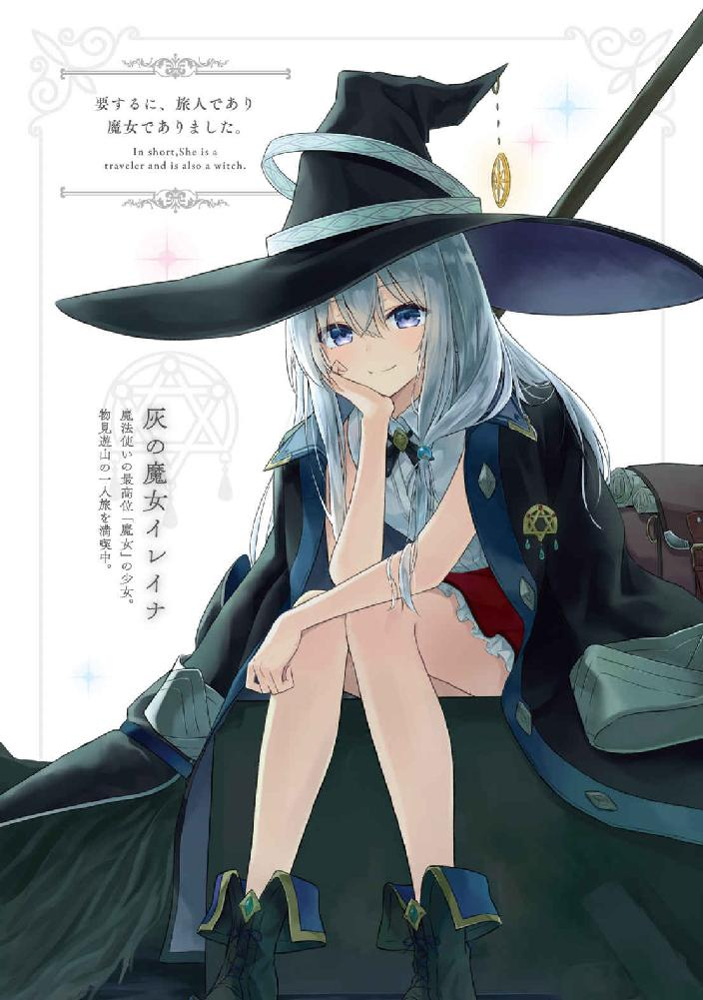
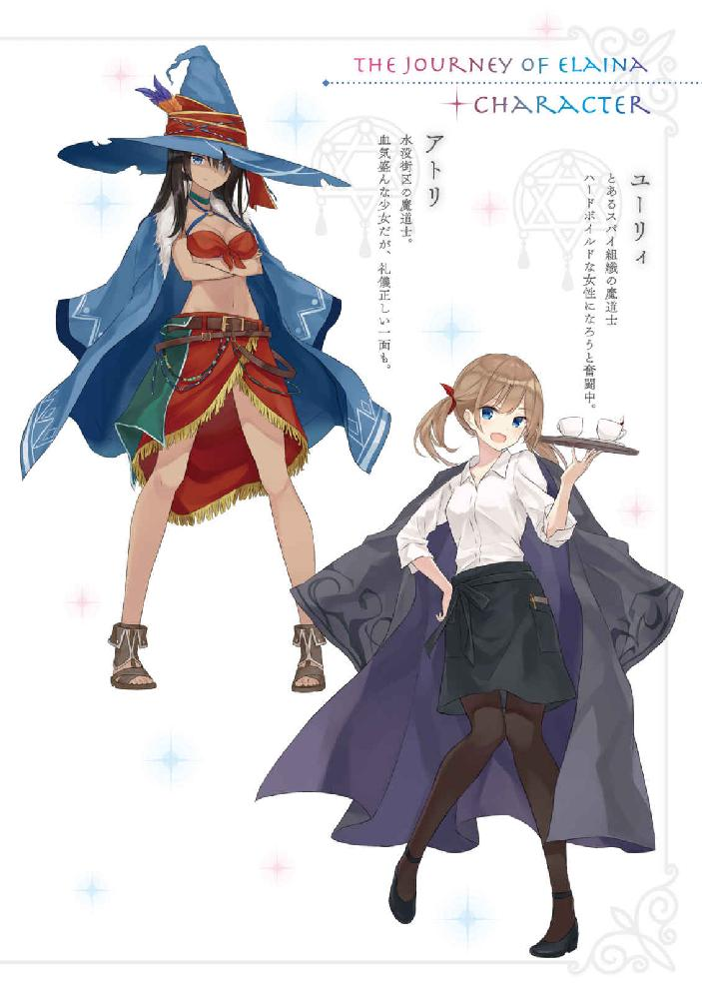
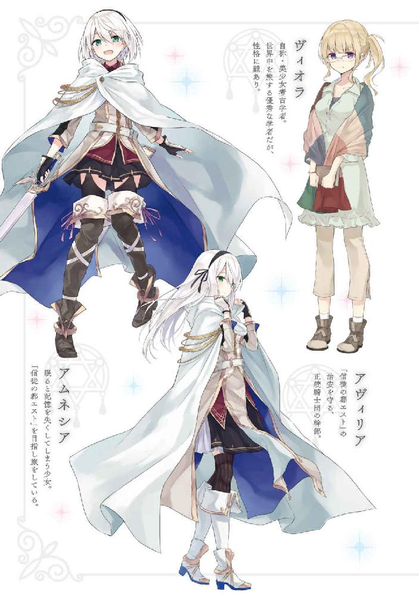
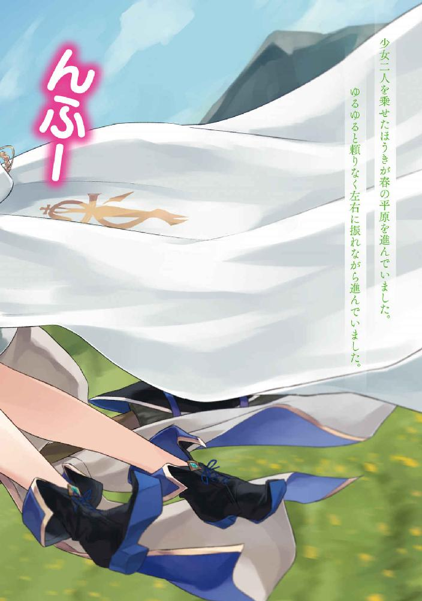
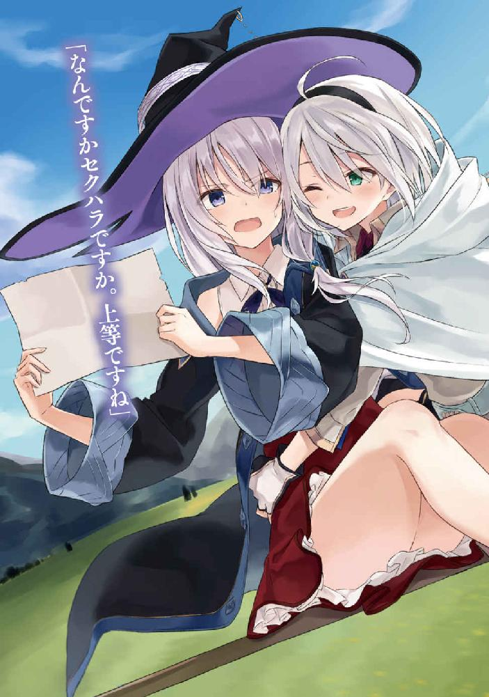
魔女の旅々４
白石定規

本書に掲載されているコンテンツの著作権等の知的財産権およびその他すべての権利は、ＳＢクリエイティブ株式会社または正当な権利を有する第三者に帰属します。
本書の内容を権利者の許諾なく複製・複写・翻案・放送・出版・データ配信（送信可能化を含む）などすることはできません。
カバー・口絵 本文イラスト
あずーる
そこは大きな木々が生い茂る廃墟でした。
建物だったものは既に元々の形を失い、崩れ、折れて、割れています。そこに覆いかぶさるように木や苔が生え、悠々と空に向かって伸びていました。
水の音がします。
足元は水浸し。歩みを進めるたびに波紋がゆるやかに広がり、水面が揺れました。
かつて人が存在した街は、自然の住居になっていました。
今や人の気配は私たち以外にはありません。
「──と」
水浸しの地面をほどほどに歩いた私は、崩れた民家の中でくるりと身を翻し、座りました。ほうきを傍らに掛けながら。
私の周りで蛍がふわふわと舞っていることには、そのとき気づきました。
「結構なところまで来たわね」
疲れた身体をぐい、と伸ばしながら、彼女は言いました。「あとどれくらい行けば、わたしの故郷なのかな」
「......どれくらいでしょうねぇ」
一日か、二日か、もしかしたら数か月も掛かってしまうかもしれません。
彼女の故郷はそれほどまでに遠く、まるで霞のように存在が空虚なのです。
「............」彼女は街だったここを見渡していました。
白く柔らかい髪が、水気を帯びた風に揺れます。気持ちいいのでしょうか。彼女の口元が、ほんの少しだけ緩んでいるように見えました。
けれど、瞳はどこか寂しげです。
「......ここ、昔は人が住んでいたのよね」
「まあ、廃墟ですから。そうでしょうね」
「ここに居た人たちは、皆どうしちゃったのかな」
「............」これほどまでに風化してしまった街並みです。「少なくとも百年──いえ、もっと時間をかけて自然を取り戻したはずですから、きっとここに住み着いていた人たちはもれなく亡くなっていることでしょうね」
「そういうことを言ってるわけじゃないわよ。もう。風情ないなぁ」
「............」その子孫は生きているのか、と言っていたんですね。なるほど分かりづらい。「戦争でここを引き払わなければならなかったのか、それとももう少し平和的な流れで故郷を捨てることになったのかまでは分かりかねますから。どうなんでしょうね？」
「......生きてたらいいわね」
彼女は他所を向き、その先にある廃墟を見つめました。
そして、
「忘れ去られるのは、悲しいもの」
と、風に紛れてかき消えてしまうほど小さい声を、漏らしました。
不安げで、あまりに弱々しい声でした。
「それに関しては問題ないと思いますよ」
私が応えると、彼女はほんの少し目を見開いて顔をこちらに向けていました。
彼女の翡翠色の瞳を見つめながら、私は、
「だって、ここってこんなに素敵な場所じゃないですか。涼しくて避暑地には最適です」
「............」
「きっと人が今は住み着いていなくても、いつか誰かが住むようになるかもしれません。もしかしたら観光地として有名になるかもしれません。いえ、そうでなくても、もしかしたら既に隠れた名所として語られているかもしれませんね」
だから大丈夫ですよ──と私は言いました。
そして、
「ここに人が訪れて、忘れない限り、この場所が本当の廃墟になることはありません」
とも。
その言葉に、彼女は目を伏せました。
「──わたしは忘れちゃうけどね」
そのように語りながら。諦めたように、笑いながら。
「............」
彼女の名前は、アムネシア。
服はどこかの騎士団のものでしょうか──白を基調としたローブの下には同じく白を基調とした服がありました。
白く短い髪にはカチューシャひとつ。
そして彼女は。
一日で記憶を失い、自らの名前すら思い出せなくなる不可思議な呪いに罹っていました。
「だったら、記憶を取り戻して、そのあとで思い出してください」
私は彼女に、言いました。
「そーする」彼女は淡々と頷き、「イレイナさんも忘れないでね」と応えます。
「当然です。こんな光景、しばらくは忘れそうにありませんから──」
私はそして、視線を傾けます。
そこには。
ぼろぼろになっても、それでも尚、強く、美しくありつづける廃墟が、ただただ存在し続けていました。
●
ハードボイルドな私の一日はいつも一杯のコーヒーから始まる。
スパイ活動を生業とし、日陰を生きる者にとって、眠気をほどよく阻害するコーヒーはまさに目覚めの一杯として最適。......ってハードボイルドものの小説に書いてあったから多分それは事実なのだろうと思う。
それとクスリにまみれている有様もハードボイルド的にはアリ。なので私はコーヒーにクスリを一滴垂らし、飲む。これが日課だった。
ちなみにこのクスリが何なのかは分からない。なんか通販で買ったやつ。めっちゃ高かったので多分健康によいのだろう。
「うえええ......苦い」
この苦味がほどよく眠気を阻害してくれるのだと思う。多分そうだ。書いてなかったけど。コーヒーはめちゃくちゃ苦くて不味くてマジで泥みたいな味しかしないけど、この泥っぽさが吐き気を生み出し、眠気なんてものをどうでもよくしてくれるのだろう。スパイものの小説にはそんな記述はなかったしむしろブラックコーヒーが旨いだなんて書いてあったけどこれはきっと皮肉というか、ブラックジョーク的な類のアレにちがいない。ブラックコーヒーだけに！
「......おええええええ」
とりあえず私は今日もトイレでゲロしてから涼しい顔で職場に向かった。ついでにタバコ（チョコ棒）もくわえながら。まさにハードボイルド。
私の職場は表向きにはコーヒーショップとなっているスパイ組織である。インテリジェントな雰囲気が溢れるなか、店の裏では血なまぐさい抗争が行われているということになる。まさにハードボイルドではなかろうか。
「ユーリィ、来たか。早速だがお前に仕事がある」
そのように私に声を掛けたのは渋いおっさん。組織のボスだ。
もうずいぶんと昔のことだから憶えていないけれど、捨て子だった私を拾い、育ててくれたのがこのおっさんであるらしい。私ハードボイルドだから過去のことなんて忘れちゃったけどね！
「ふん。それは私にふさわしい物なんでしょうね？」髪をなびかせながら私は言った。ボスに対してもこの態度とはまさにハードボイルド。
「お前にしかできない仕事だ──これを見ろ」ボスは眉間にしわを寄せて、ファイルをデスクに投げた。「あとお前いつから俺に対してそんな口を利けるほど偉くなったんだ？」
めっちゃ睨まれた。
私は震える指先を抑えつつファイルを開く。内容はごくシンプルなものだった。けれど、シンプル故に困難な依頼でもあった。
『虚構の魔女暗殺の依頼』
そのように題された依頼には、ターゲットの基本的な特徴と、暗殺の期日が記されている。
ターゲットは数日前にこの国に訪れた旅人の魔女だという。この魔女は可愛い外見をしているが筆舌に尽くしがたいほどに性格が悪く、人を騙すことを一切躊躇せず、金儲けのことだけを考え、ありとあらゆる詐欺的手法を駆使して罪のない民間人から王族に至るまですべての人々から金を巻き上げる外道中の外道であるという。近隣の国々からも被害報告が絶え間なく送られており、この国で仕留められなかった場合の被害予想は小国ひとつが滅ぶほどといっても過言ではないらしい。
それほどまでの悪である上に、厄介なことにターゲットは魔女だ。
魔導士、魔女見習い、魔女、と並ぶ魔法使いの称号のなかでも類稀なる才能の持ち主しかなれないという最高位の称号。私もこの国に生まれて早十六年になるが、未だお目にかかったことはない。それほどまでに希少で、尊い存在。
その魔女が外道であり、今回、私が仕留めるべきターゲットだという。
............。
「マジですか？」
「冗談でこんな依頼は出さんよ」
「いや、でも......私、ただの魔導士なんだけど......」言い忘れたが私は魔法使いの最底辺である。魔女を宝石とするなら私はさながらその辺に転がる石ころと同等くらいの人間といってもいい。
「しかしお前にしか頼めん仕事なのだよ。うちの組織はご存じの通り、お前以外は全員男だ。魔法すら使えない者の方が多い。はっきり言って、魔法での勝負となった場合、うちの組織内で最も生存率が高いのはお前だ」
「......つまり私にしかできない仕事、と」なるほどね？
「今そう言ったばっかだろうが」
呆れるようにため息を漏らすボス。
私は、やや緊張しながらもう一度、ターゲットとなる魔女の特徴に目を通す──。
○
髪は灰色。腰ほどまでに伸びていて、喫茶店のテラス席に流れる夏風がゆるやかにそれを靡かせていました。
瞳は瑠璃色。真冬の海のように澄んでいて、その先にはゆで卵とトーストにブラックコーヒーからなるモーニングセットが置かれています。
それは黒の三角帽子、黒のローブを着込んだ旅人でした。胸元には魔女である証の星をかたどったブローチがあり、要するに旅人であり魔女でもありました。歳の頃は十代後半といったところでしょうか。まだ垢抜けし切れていない顔立ちをしており、せっせとゆで卵の殻を剝く様子はお母さんのお手伝いをしている可愛らしい娘っ子のようにも見えました。
やがて可愛らしい娘っ子（魔女）はゆで卵を剝き終わり、一服程度にコーヒーを一口こくりと飲みました。彼女はコーヒーというものが好きでした。ブラックでもそこそこミルクを入れても砂糖を入れても、とりあえず大元がコーヒーならなんでもいいやと思えてしまう程度に好きでした。むしろ一杯のコーヒーのあらゆる側面を見たいがために、最初の数口だけブラックで飲み、あとからミルクと砂糖を少量ずつ足していって飲んだりする始末です。
コーヒーはいいものです、と彼女はほう、とため息を漏らしながら、カップを置きました。
ちなみにゆで卵にもこだわりがあります。
嚙んで口を離した瞬間にぼろぼろと黄身が崩れる程度に固茹でになっているのがベストだと彼女は考えています。だって塩をまぶしやすいんですもの。まさにハードボイルド。
「......いい朝ですねえ」
とまあ。
そんな感じに、旅の休息を絶賛満喫中の魔女は一体、誰か。
そう、私です。
「............」
喫茶店のテラス席から辺りを見渡せば、この国の景色がうかがえました。街に立ち並ぶのは白塗りの壁で統一された建物たち。地面はレンガづくりになっていて、扇状の模様を描きながら広がっていました。その上を往来する人々は買い物をしたり、談笑にふけったり、あるいは私のように物見遊山しながら行き交います。
極端に治安が悪いわけでもなければ、素晴らしい景観をしているわけでもありません。
ただこの国の人々の日常が広がるばかりでした。
なので私もその日常に溶け込みながら、休息を満喫しているというわけでした。
「あの、お客さん......もしよかったら、サインとかしてもらってもいいかしら？」
コーヒーを飲みながら、さてそれではこれからどうしましょうか、なんて思いにふけっていた頃です。ふと席にやってきたウェイトレスさんが、コーヒーカップと一緒に、色紙とペンを持ってきました。「コーヒー、サービスするんで」と付け加えながら。
「サインって何ですか......？」私はそれなりに怪訝な顔色をしていたはずです。「私、有名人でも何でもないですよ？」ご存じのとおり何の変哲もないただの旅人です。
するとウェイトレスさんはやや興奮ぎみに、
「私、魔女を見るの、初めてなんです！ 昔から私、魔女にとっても憧れててね、だから今日、あなたを見て感動したの！」
と頭の後ろで二つに括られた薄茶色の髪を揺らしました。ぐいぐい身を乗り出す彼女の青い瞳は、私を覗き込んでいました。「だから、あの、もしよければ、お店に飾りたいので、お願い！」
「......まあ、別に構いませんけど」
私はサインペンを持ち、色紙にさらさらと名を綴りました。宿屋のカウンターでするようなテキトーなサインですけど。
「どうぞ」と私が返して差し上げれば、ウェイトレスさんはそれを大事そうに抱えながら、「ありがとう！ そのコーヒー、ぜひ飲んで頂戴ね？ 私が愛情こめて作ったやつだから！」と言って去ってしまいました。......もう既に飲みかけのやつがあるんですけど。
なんなんでしょうか一体。
妙に怪しいウェイトレスだった気がしなくもないです。というか愛情こめて作ったコーヒーって何ですかね。見た目からしてまったくただのコーヒーなんですけど。
魔女がこのように丁重にもてなされることに関しては悪い気はしませんけど、奇妙な気分でした。
「よ、魔女さん。可愛いねぇ。いま一人？ よかったら俺とお茶しない？」
先ほどのウェイトレスさんがくれたコーヒーを手にしたときでした。今度は軽薄そうな男が私の向かい側に座りました。
「............」
魔女がこのように軽薄に扱われることに関しては悪い気しかしませんね。いっそナンパ男が全身の穴という穴から血を吹き出す呪いでも作ったら少しは世界は平和になるのでしょうか。
「すみません私ちょっと忙しいんです」ため息を漏らしながら、私は今度こそウェイトレスさんが愛情をこめて作ったらしいコーヒーに口を近づけました。
コーヒーには色々な愉しみ方があります。たとえば前述したとおり、ブラックで飲んだのちに、あとからミルクや砂糖を徐々に足していったりする愉しみ方。あるいは最後までブラックで飲み干したり。とにかく一杯のコーヒーに無限の可能性が秘められているといって過言ではありません。
そして無限に広がる愉しみを抱えたコーヒーにおいて、まず最初にするべきことは、香りを嗅ぎ、胸の中をコーヒー一色に染めることに他ならないと私は思うのです。
「こんな店のコーヒーより、もっと美味い店、俺知ってるよ？ どう？ 今から一緒に」
「............」
コーヒーの香りをまとった湯気が、軽薄そうな男の香水と軽薄そうな男のまさしく軽薄な言動という嫌悪感しか生み出さない物をブレンドして胸に落ちました。上質なコーヒーの香りが一転して泥水のそれに変わった気がしました。吐きそう。
「絶対こんな店より美味いから！ まじで！ 俺、こう見えてもアレだからね、かなりコーヒー通だからね、マジ」
「......あれ？」
男を無視して香りをしばらく堪能していると、妙なことに気がつきました。
コーヒーと、それと目の前のよくわからない粗大ゴミが発する廃棄臭に混ざって、薬品の香りがしたのです。コーヒーによく馴染んでいるようで、しかし明らかに喫茶店にはない刺激臭がありました。ほんの少しだけ。
試しに男から距離をとって、「あ、ちょっとー！ 俺のこと無視とかひどくなーい？」などとぬかしている汚物から臭いを遮断しても、その香りは明らかにコーヒーの中から立ち上っています。
私はそれからしばらく嗅いで、その正体を頭のなかで探り続けます。
「......あー」
で、気づきました。
これは毒。
飲むと吐き気が胃の底から湧き上がってくるという恐ろしい効能を隠し持った毒です。厄介なことにコーヒーに混ぜたときだけその実力を発揮する恐ろしい代物でもあります。こんなものを飲んだら間違いなく衆人環視のもとで吐しゃ物まみれです。
果たして私のような魔女に憧れていたとはなんだったのか。愛情をこめて作ったとは何だったのか。愛情とはゲロまみれになることを言うのか。
しかし辺りを見渡したところで、先ほどのウェイトレスさんの姿はどこにもありません。店の中にも、人混みのなかにも、どこにも彼女はいませんでした。
「............」
もしかして私、何者からか狙われてます？
ぞわりと私は嫌な予感を感じて、そのまま喫茶店を出ることにしました。
「あ、ちょっと！ 俺とデートは？」
「すみません急いでるので。あと私忙しいので。このあと予定があるので」
噓ですけどね。
そして私は荷物をまとめながら、
「このコーヒーあげます。私の飲みかけですけど。私、コーヒー苦手なんです」
と男に毒入りコーヒーを押し付けて逃げました。
あれだけぐだぐだと胸中で語っておいてコーヒーが苦手というのも白々しい噓だなと自分でも思いました。が、男は素直に受け取ってくれました。むしろ鼻の下を伸ばしてすらいました。
「え、飲みかけ？ マジで？ ラッキー！」
「ええどうぞ」
噓ですけどね。
●
「例の魔女の件、どうなった？」
私が職場に戻ると、ボスはこれまた渋い顔で鎮座していた。
ウェイトレス姿の上に渋い黒のローブを羽織るというハードボイルド感漂う佇まいになった私は、ローブを翻し、茶色のツインテールをめっちゃ揺らしながら応える。
「当然。魔女はこの手で仕留めたわ！ 今頃あの女は衆人環視のもとで赤面しまくって死んでいるはずよ！」
完璧な作戦だった。
街で例の虚構の魔女は喫茶店で呑気に朝食を嗜んでいたので、私はサインを貰い、店に飾っておいたのだ。有名人でも何でもないくせにサインを喫茶店に置くなどというのはこの世で最も恥ずかしい行為に他ならない。恐らく虚構の魔女は今頃穴があったら入りたいくらいの恥辱にまみれて息絶えていることだろう。まさに穴などまるでない策略。
と、私は魔女を仕留めるに至った経緯を滑るように語った。
最後まで黙って耳を傾けていたボスの言葉がこちら。
「で、お前は魔女が赤面しまくっている現場を見たのか？」
「え？ 見るわけないじゃん」見てるこっちまで恥ずかしいし。
「............」ここでボスは大きくため息をついた。「お前、というよりだな？ まずな？ 自分が有名人だと勘違いしただけで魔女が死ぬわけないだろ？」
「死ぬじゃん社会的に」
「いや物理的に殺せよ。あと、その魔女だが赤面すらしていないぞ」
「えっ」
「むしろうちの組織の構成員が巻き添え食らって喫茶店で吐いたんだが」
「えっ」なにゆえ？ コーヒーでも飲んだか？ やっぱコーヒーって毒だわ。
「......お前今度からは作戦を仲間に伝えてから実行しろよ？」
「............」
そのあと滅茶苦茶怒られてその日は終わった。
猛省して翌日からはもっと完璧な作戦で魔女を仕留めると誓った私は、その日、徹夜で新たな作戦を練った。こういうときにクスリ入りコーヒーを嗜みながら図面（何が書いてあるかはさっぱり分からない）を開いて、考え込むのもまさにハードボイルド。
ゲロ吐いた。
作戦のタイムリミットは一週間。この期間内に虚構の魔女を仕留められなかった場合のことは考えないでおく。
まず初日に大敗を記したため、私はその後、五日間みっちり使って魔女の研究をすることにした。最後の一日でケリをつけてやろう。......という作戦をボスに伝えたら「あ、そう」と返された。氷のように冷たい態度である。
監視一日目。
今日も朝日が眩しい。
魔女は呑気なことに朝から喫茶店にいた。まるで「あなたなんて別に怖くないですよ？ さあ、どこからでもかかってらっしゃい」などと挑発されているかのよう。
今日の彼女は警戒しているのか、注文したのは一杯のコーヒーのみ。しかも一切口をつけず、ただ注文しただけで、彼女の前に置かれたコーヒーはしだいに湯気を失っていった。やっぱコーヒーまずいんだよね？ 昨日は無理して飲んでたんでしょ？ 私しってる。
喫茶店での張り込みは夜まで続いた。
退屈な時間は眠気との闘いだった。
しかし、こんな時こそ落ち着くべきだろう。辛抱強く待ってこそ、真の勝利は待っているもの。
だから私は張り込みをしながら、眠気覚ましにコーヒーを飲む。
ゲロ吐いた。
夜が更け、お店が閉まるタイミングになって私は店から退いた。ちなみにゲロは自分で掃除した。
監視二日目。
今日も朝日が眩しい。
魔女は呑気なことに今日も喫茶店にいた。毎日足繁く喫茶店に通うのは一体なぜなのか？ もしかして私が再び襲うまで待つつもりなのか？
しかし五日間は手をつけないと決めたため、私は今日も張り込みをしながらコーヒー飲んでゲロまみれ。
監視三日目。
「やだぁー、ゲロ女来たわよゲロ女」「ゲロ子だ。ゲロ子来た」「見てて、ぜったいコーヒー注文してぜったいゲロ吐くわよ」「確実にゲロるわよ」「純度百パーセントのゲロよ」と店員が遠巻きにひそひそと話しているのが丸聞こえだったけれどハードボイルドな私はこの程度のひがみなど慣れっこである。
だから私は今日もコーヒーを飲む。がぶ飲みである。
今日はいっぱい出た。
監視四日目。
今日も朝からゲロ吐いてゲロをするため喫茶店でゲロした。ちなみに魔女は今日もコーヒー一杯置いて鎮座していた。
あの女がここから動かない限り私のゲロリフレインは続く。
監視五日目。
朝からボスに呼ばれた。「お前、毎日喫茶店で何をしているんだ？」と。
おっと？ 何？ ボスってば私のストーキングでもしてんの？ と思ったら喫茶店から「おたくの部下がうちの店で毎日ゲロまみれになって困っているからどうにかしてほしい」との苦情が来たらしかった。
めっちゃ怒られたあと私は喫茶店にこっそり寄った。
魔女は今日もいた。
五日間監視をして分かったことは魔女が毎日毎日足繁く喫茶店に通っては無防備すぎるほどに朝から晩までぼうっと座っているという事実のみだった。
しかし、隙だらけであるということだけは確かだった。
これは好機とみていいのではなかろうか。
翌日のこと。
ついに私は実行にでた。殺せと命じられたが殺しは私の主義に反する。だから安全に捕獲することにした。
魔女は喫茶店で今日も呑気にコーヒー置いて座っていた。完全に無防備。やるならば今しかあるまい。
私は杖を抱えて彼女の真後ろまで迫り、「おりゃあああ！」と魔法をかける。
手錠魔法。
指までがっちり鎖で止めるタイプの手錠を相手に強引に嵌め、魔法を使えなくするすさまじい魔法である。ちなみに習得に一週間かかりました。
「ははははは！ どう？ これで何もできないでしょう？ ざまあないわねぇ！」
喫茶店で高笑いをあげながら、虚構の魔女の首根っこを引っ張る私。
このまま組織まで連れ帰ってやろう！
が。
「......あの、あなた底抜けの馬鹿なんですか？」
ぽん、と肩を叩かれた。
「あん？ 何よあんた」
と振り返ると、そこには灰色の髪、瑠璃色の瞳の魔女の姿。
あれ？ おやおや？ どうして私が捕獲したはずの魔女が立っているのかしら？ どゆこと？
「丸一日喫茶店で座っているだけのでくの坊が私だと本当に思い込んでたんですか？」
見れば私が捕まえた虚構の魔女は、ただの人形だった。魔女と同じような姿かたちをしているだけの、人形。
五日間ずっと喫茶店に通っていたのではなく、五日間ずっと人形が置きっぱなしになっていただけだったのだ。
そういうからくりだったのだ。
今になって、私はそれを思い知らされた。
「お馬鹿さん」
私に向けて魔法を放ちながら、魔女は言った。
○
何者かに狙われていることを滞在初日に感づいた私は、すぐさま私を狙う輩から身を守ることにしました。翌日、開店前の喫茶店に赴き、
「あのー、すみません。この人形をですね、ちょっとテラス席に置いてもらえません？」と。
それは私の姿形を完璧に模したマネキンです。顔の造形から体型、肌の質までそっくりそのまま私になっています。私ほどの魔女ともあればこのようなでくの坊の作成もお手の物です。
「え、これをですか？ いや、そういうのはちょっと......」
店長さんはやや戸惑っておられましたが、私はここで、
「申し遅れましたが私、イレイナといいます。灰の魔女イレイナです」と自己紹介をして差し上げるのでした。「ちなみに結構な有名人ですよ」と店内の壁に飾ってあるサインを指差しながら。
恐らくは初日に私に毒入りコーヒーを飲ませようとした何者かが置いたものなのでしょう。
一体何を目的にサインを置いたのかは分かりませんが、逆に利用させていただくことにしました。
「有名人......」店長さんはふむふむと考え始めます。
「考えてください店長さん。ここにサインがあるでしょう？ そして私の人形があるでしょう？」
「ええ」
「これをテラス席に置くでしょう？」
「ふむ」
「大繁盛ですよ」
「やりましょう」
私と店長さんは固く手を取り合いました。
こうしてお店に人形が置かれることとなり、私は私を観察するゲロ子さん（仮称）を観察するに至ったのです。
五日間ずっとゲロまみれになりながら私の様子を窺っておられましたね。お疲れ様です。
が、労をねぎらう気は毛頭ありません。
「お馬鹿さん」
私は魔力の塊を放ち、彼女を死なない程度に吹き飛ばしました。
吹き飛ばしてやればもう追ってこないだろうと思いました。
「ま、これで一件落着ですね」
人形は回収しようかと思いましたが、しかし今回収してしまうと集客効果が見込めなかったのかと勘違いをされそうなので置いておくことにしました。
さてこれで悠々自適に喫茶店でコーヒーを飲めることでしょう。
「あ、すみません。コーヒーひとつ」
私はマネキンの反対側に座り、手を挙げて店員さんを呼び止めました。
同じ顔が向かい合っている私たちの席にぎょっとしながら、店員さんはマネキンのコーヒーのお代わりと、私のコーヒーを置いて去りました。
そして私がコーヒーの香りを嗜んでいる頃でした。
「ま、待ちなさい......！ まだ終わってないわよ！」
ぜーはーと息を切らしながら魔導士さんが再び現れました。ツインテールに括られた茶色の髪は乱れ、汗ばんだ顔にへばりついていました。ふっ飛ばされてから走って戻ってきたのでしょう。
「あ、どうも」
ぺこりと頭を下げる私でした。歓迎してませんけどね。
「あんた、もしかしてアレで私が諦めるとでも思ったわけ？ 残念だったわね！ 私は全力であんたを沈めるまで諦めないわよ！」
言いながら彼女は杖を持ち、構え、私に向けて魔法を放ちます。
それは魔力を固めただけのお粗末な青白い光でした。
「ふ──」私は口の端をにやりと持ち上げ、片手にコーヒーカップを持ったまま、杖を掲げます。「馬鹿ですね。そんなもの効くわけ──」
しかし彼女が放った魔法は私をすり抜けて頭を吹き飛ばしました。
マネキンのほうの。
「......そっちじゃないんですが」
私はまたしても魔力の塊を彼女に浴びせて吹っ飛ばしました。
マネキンは修復しておきました。
しかしそれからというもの、彼女は何度も何度も私の前に現れました。
「残念だったわねえ！ 私は何度でも蘇るわよ！」まあ吹っ飛ばしましたけど。
「私の名前はユーリィ！ この国でスパイとして働く超優秀魔導士よ！」名乗りを上げるのが今更過ぎますしそもそもスパイというのに微塵たりとも隠密していませんし疑問が疑問を呼んで頭が痛かったのでとりあえず吹っ飛ばしました。
「おっと？ あらあら？ その程度かしら？ 私を倒したいならもっと強い魔法をかけなさいよ！」わりと強めに吹っ飛ばしました。
「ていうか何？ 魔女さん何なの？ なんでマネキンと相席してるわけ？ 気持ち悪くてゲロ吐」吹っ飛ばしました。
「私、あんたを倒さなきゃいけないのよ！ 大人しくやられなさいよこの極悪魔女が！」吹っ飛ばしま以下略。
「......ねえ、一発でいいから食らってくれない？ マジで一発だけでいいから！ ね？ お願い！」吹っ飛ば以下略。
「......このおおおおお！ 死」吹っ以下略。
「私の力の全てをこの一撃にかけ」以下略。
「まだ技名叫んでる途中だったんだけど」略。
「........................ぐすっ。うううう」
最終的にはボロボロになった彼女はぼろぼろ涙を流しながら私の前に現れ、
「......魔女なんてきらい」
と自らのスカートをぎゅっと握りしめました。
「涙拭きます？」
「泣いてないもん」
と言いつつ私が差し出したハンカチをしっかり受け取るユーリイさんでした。
「泣いてるじゃないですか」
「泣いてないもん」
と言いつつ私が差し出したハンカチで鼻をかむユーリィさん。なにをしてくれる貴様。
「......それ、もうあげます」
「......ありがと」
「......まだやりますか？」
「......おうちかえる」
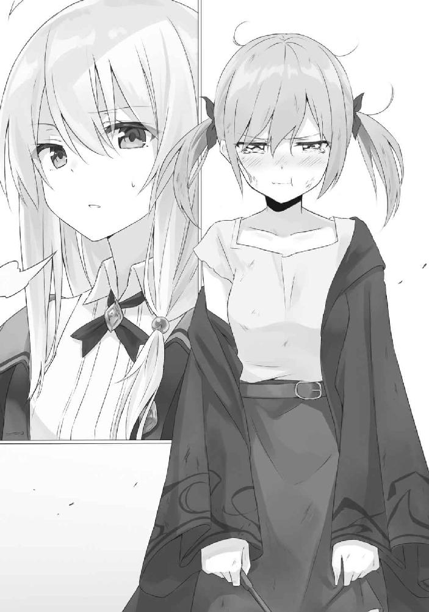
そして彼女はとぼとぼと帰って行きました。
哀愁漂う背中でした。
●
「クビだ」
翌日。
いつものように職場に赴いた私にボスから放たれたのは、たったそれだけの短い言葉だった。
「ちょっ......。冗談でしょう？」
その言葉が信じきれなくて半笑いになる私だった。けれどボスが私を見つめる目は冷酷そのもの。
「本気だ」
「............」
「いいか。今回の依頼はうちの国だけじゃない。他国からの要請もあったものだ。しかしお前はしくじった。これがどういう意味だか分かるか？ その小さい頭で考えてみろ」
「......ごめんなさい」
「謝って済むような問題ではない。お前がしくじったせいで俺の組織の評判はガタ落ちだ。おまけに、喫茶店であれだけバカ騒ぎをやらかしたんだ。お前に課せられた責任は重いぞ」
「......どのくらい？」
「このくらいだな」
ボスの手が持ち上がり、私に向けられる。ごつごつとした手を包み隠している黒の手袋には、一丁の拳銃があった。
私の頭に、それは向けられている。
「......冗談でしょう？」
「本気だ」
明らかな殺意が私に向けられているのを、私は肌で感じていた。
「そ、そんなのって......！」震える声を抑えるので私は必死だった。「そんなのおかしいじゃない！ たった一度、大事な任務で失敗しただけでしょう？ どうして死ななきゃいけないのよ！ 私、ずっとこの店で働いてきて──まだ未熟かもしれないけれど、でも、今度はしくじらないから！ だから、ねえ......」
「今すぐ出ていけ。そうすれば直接手は下さないでやる」
「私の話を──」
「俺がやらなくても、恐らくこの国にいる多くの人間が狙うだろう。国外へ逃げたほうが得策だろうな。だが、周辺の国にもお前の失敗は知れ渡っている。誰も知らないくらい遠くへ行かなければ、お前は恐らく殺されるだろうな」
「............」
「俺もできれば娘同然のお前を手に掛けるのは忍びない。どうか俺の知らないところでくたばってくれないか。だからお前はクビなんだ」
自分の手を汚したくないから、首輪を取って放り出す。あとはのたれ死のうがどうしようが一切関与しない。そういうことらしい。
「守っては、くれないんだ」
精一杯に絞り出した言葉が、それだけだった。
「当然だろう。スパイとはそういうものだよ。使えなくなったら味方でも有能でも始末する。もちろんお前でもそれは変わらない」
「............」
何も言えず、ただ立ち尽くす私に、ボスは言った。
「せいぜい気を付けるんだな。国を出るまでに殺されないように」
それがボスにかけられた最後の言葉だった。
○
ユーリィさんが私を諦めて帰ったその翌日。
私はいつもの喫茶店にいました。いえ、今日は別に来る予定はなかったのですけど、なんというか、まあ、ハードボイルドなゆで卵の味が恋しくなったんですよね。
テラス席から見渡す街並みはそれなりに好みでしたので、今日も同じくいつもの席に座ろうと思い至りました。
「──ぐすっ。あんたのせいだから。私、あんたのこと一生恨むから」
が、先客がどうやらいたようで。
「......あんたが依頼通りにやられてくれれば私は組織から追い出されずに済んだのに。ずっとスパイを続けられたのに。魔女きらい」
ユーリィさんでした。
瞳からぽろぽろと涙をこぼしながら、彼女は私のマネキンと向き合い、忌みごとを延々と語っておいででした。虚しくならないんですか？
「もうやだぁ......なんでこうなるの......？」
椅子の上で膝を抱き、丸くなる彼女でした。膝の上に置かれていた三角帽子が痛ましいほどくしゃりとひしゃげています。
「あなたがまだ未熟だからじゃないですか」私は彼女の頭にぽん、と手を置きました。
「なっ......！」
私に振り返り、向かい側に座るマネキンと何度か視線を往復させたのちに、彼女は大急ぎで涙をぬぐい、「べ、べつに泣いてないから！」
「あ、そうですか......」
ハンカチまた貸しましょうか？
「何？ 私のこと笑いに来たっての？」
「いえ、ここのモーニングセットを食べにきただけです。あなたもそうなんじゃないんですか？」
「............」ふいと彼女は私から顔を背けました。「......そうだし」
「まだ注文はなさっていないようですが」テーブルの上は閑散としています。
「......今からするところだし」
「じゃあ私の分もお願いできますか？」
「なにそれ。やだ」
「いえ、私の分じゃなくて、相席の私の分のことです」
「......する」
「それはよかった」
私はマネキンをぽいとどかして彼女の向かい側に座りました。
「............」無言で私をねめつけるユーリィさんでした。「あんたには奢ったげない」
「噓はよくないですよ？」私はくすりと笑っていたと思います。「奢ってくれたら、為になるお話を聞かせてあげますよ」
「......何？」
「注文しますね」
私は手を挙げてウェイトレスさんを呼び止め、「いつものモーニングセット二つ」とだけ言いました。
ウェイトレスさんが戻って来るまで、私たちは互いに沈黙の時間を過ごしました。私はべつにさほど気にはしていませんでしたが、彼女はその時間を苦痛に感じていたようで、
「......何なの」
と、モーニングセットが置かれる最中に、先ほどよりも刺々しい口調で尋ねるのでした。
「組織から追い出されたみたいですね」
いつまでも本題に入らない回りくどいふわふわとした会話は切り上げて、私は早速、卵の殻をテーブルに軽く叩きつけながら、語りました。「昨日が私を倒す期日だったんですか？」
「どうしてそれを知ってんのよ。あんたどこから聞いてたの？」
「あなたがここに座った辺りからですかね」
「最初からじゃない」
「公衆の面前で仕事内容をぺらぺらと喋るのは感心しませんね。あなたスパイに向いてないんじゃないですか？」
「............」
黙っちゃいました。たぶんご自身にもそれなりに自覚があるのでしょう。「で、未熟者だからと追い出されてしまったわけですよね。残念でしたね」
「......あんたのせいだから」
「相手が私でなくてもいずれそうなっていたでしょう？」少なくともあの程度の実力なら。「使えないと判断された時点で、いつでもあなたは放り出されていたんじゃないですか？ 相手が私だろうと誰だろうと、同じじゃないですかね」
いずれそうなる運命だった。というだけです。
そして私は畳みかけるように言いました。「でも追い出されたからといって、どうしてそれで終わりだなんて思ってしまうんでしょうね。モノは捉えようだと思いません？」
たとえば一杯のコーヒーにしてもブラックのままでも美味しいと感じる人もいれば、ミルクや砂糖を足す者もいます。
あるいはゲロまみれになるくらい嫌いな子もいるわけですけれど。
まあつまり、
「一杯のコーヒーでも飲む人によってはいろいろな味に変わるものです。どうでしょう？ 追い出された今も、別の見方をしてみては」
「......たとえばどんなよ」
「そうですねえ......」私は空を仰ぎ見て、しばし考えるような素振りをしたのちに、ゆで卵をぱくりと食べました。「じゃあ、こういうのはどうです？」
そして、
「これは門出です」
と言いました。
──あなたはスパイ組織から卒業して、もっと広い世界に出るように命じられたんです。半ば強引に追い出されるかたちでこの国を出ていくわけですけれど、でも、これから先、今よりもっと優秀な魔法使いになって戻ってきたら、そのときはとても歓迎されると思いませんか？
──そういう生き方って、かっこいいと思えませんか？
そのように、言いました。
「............」
またしても黙っちゃいました。
けれど、先ほどのような暗い表情の彼女はおらず、「......かっこいい、ハードボイルド的。いいかも」とうわごとのように、呟きながら、彼女は徐々に顔に色を取り戻していきます。
ハードボイルド大好きさんですか。
「こんな所でうかうかしている暇なんて本当はないんじゃないですか？ 広い世界の中でいろいろと学んだらどうです？ あなたに足りないのは多様性です」
だいたい同じように毎度毎度魔力の塊を私に放り投げるだけで勝てると思ってた時点でだいぶん頭がお堅いです。ゆで卵並みです。
私は一枚の封筒をテーブルに置いて、立ち上がります。
「まあ、というわけで、これは門出のお祝いとしてあなたにお渡しします。一年後のこの日に、また開いてみてください」
固く閉ざされた封筒を受け取った彼女は、眉をひそめました。
「たぶん私、すぐに開けちゃうと思うけど」
「あ、大丈夫です。一年待つ前に開いたら中の手紙が燃えて消えるように魔法掛けてありますから。開けたら大惨事ですよ」
「全然大丈夫じゃないんだけど......」
だから開くなってことですよ何言ってんすか。
「その手紙には、旅の心得とか、強い魔法使いになるための秘訣が書かれています。多分、一年間まともに修行していたら、きっとそのときは役に立つはずですよ」
そして私はテーブルに金貨を一枚ぺたんとおいて、そのあとでマネキンを座らせました。「じゃああとは、こっちの私と仲睦まじく朝食を嗜んでから、とっとと国を出て行ってください」とも言いながら。
マネキンの反対側に座ったまま、彼女は目を白黒とさせました。
「あれ？ 私が奢るんじゃなかったの？」と。
私は応えます。
「噓ですけどね」
○
私がこの国にやってきて、そしてユーリィさんに毒入りコーヒーを飲まされそうになった翌日のことです。
私はコーヒーショップにいました。街を歩いていたらやたらとチャラい男（私をナンパしてきた彼）に呼び出されたのです。またかこの男。と思いましたが、前日とは打って変わって渋い顔色をしておいででしたので、何事かと首をかしげながら、結局ついていくことにしました。
そして連れられ、やってきたのがコーヒーショップというわけです。
「君にお願いがある」
やけに渋いおじさんが、カウンターの向こうで腕を組み、自らがスパイ組織のボスであると語ったのち、これまたやたら深刻そうな顔色で語りました。
「うちのスパイ組織に、女の子がいる。名前はユーリィ。昨日、君にサインを書かせた彼女だ」
「はあ」
「単刀直入に言おう。どうか彼女をこの国から追い出す手伝いをしてはくれないか？」
なぜです？ と問いかけようとしたときには、既に彼は言葉の続きを語っていました。「そもそも今回、我々は彼女をこの国から追い出すために、このような計画を立てたのだよ」
男によってカウンター席に放り投げられたのは、一冊のファイル『虚構の魔女暗殺の依頼』と書かれた代物でした。
中を読め、と促されているようでしたので、私は躊躇することなくそれを開きました。
綴られていたのは、私と酷似した外見をした魔女が私と酷似した経歴を持ち、害であるから排除しろ、というもの。相違している点と言えば、魔女名くらいのものです。私は虚構の魔女などという空々しい名前ではありませんし。
「まさか灰色の髪の魔女がこんなタイミングでこの国に来るとは思いもしなかったよ。誤算だ。君はそういった経歴の持ち主ではないだろうが──今回の依頼では、君は悪役になっている」
「............」
「なぜ目を逸らす」
「いえ別に」私は話も逸らしました。「で、何故この魔女を暗殺することになっているんです？」
「話せば長くなるが──」
渋い顔の彼は渋々といった様子で語ります。
昔話でした。
彼がユーリィさんを拾ったのは、彼女がまだ生まれたばかりの頃。捨て子だったそうです。哀れに思った彼は、親としての愛情を注いで彼女を育てました。
ユーリィさんは立派に成長し、素直な子になりました。愚直と言ってもいいいほどに。
彼女は父である彼の仕事を尊敬し、父の仕事を手伝うようになりました。けれど、彼女は絶望的なまでにスパイには向いていませんでした。いい子すぎるのです。
「俺はな、あの子の成長を見届けることはできないんだ。ユーリィが片足を突っ込んでいるこの世界は、あの子が思っているほど綺麗じゃない。泥のように汚れた世界なんだよ」
ただユーリィさんに隠しているだけで、実際には人を殺めたりもしているのでしょう。黒い手袋に隠された彼の手は、きっと衆目に晒すことができなくなるほどに血で染まっている──そして彼自身がそれをよく分かっているはずです。
「だから彼女と離れたいと」
「そういうことになるな。だから虚構の魔女の計画をたてたんだ」
「............」
彼の計画上では、虚構の魔女の暗殺をユーリィさんに与え、けれど最初から存在するはずもない魔女を探させたうえで、任務を失敗した彼女を責めて追い出すつもりだったのでしょう。
けれど私が来てしまったから少しややこしい事態になったと。
なるほどなるほど。
「つまりうまく協力してそれなりに彼女をいためつけたうえで、無力感を与えて、けれど彼女を前向きにさせていい感じに国から追い出してくれと」
「そういうことだな」
「随分な難問を私に押し付けるんですね」
「魔女である君ならば可能だろう」
「見くびらないでください」余裕ですよ。
しかしひとつ疑問がありました。
「どうしてこんな外見の魔女を暗殺するなんて計画を立てたんです？」
「............」彼はしばし黙りました。「話せば少し長くなるが──」
「あ、こっちの話は巻きでお願いします」
「............」彼はまた黙りました。「昔、俺がまだ若かった頃にな、その外見の魔女の暗殺を依頼されたことがある。だがあっさり返り討ちに遭ったんだよ」
「ほう」まあ相手は魔女ですからね。
「で。俺は惚れた。強く素敵で綺麗な女性だったからな」
「へえ」まあ相手は魔女ですからね。
「まあ、魔女は数日でいなくなっちまったんだが、その頃のことが忘れられなくてな──なにせ、俺が初めて負けた相手だ。だからこうして、依頼にしたためたわけさ。その頃のことはよく覚えている。今となってはいい思い出だ」
彼は黒い手袋をさすりながら、そのように語りました。
べつに魔女の外見などはどうでもよかったのでしょう。ただ単純に、新しい魔女を頭の中で作り上げるのが面倒だったと。
そういうことですね。
でも、
「どうして虚構の魔女なんですか」
私がそのように尋ねると、彼は自虐的に笑いました。
「虚構まみれな依頼だからさ」
●
あれから一年が経って、私は例の魔女との約束を果たすべく、旅先のコーヒーショップで手紙を開封した。
燃えることはなく、けれどほんの少し色褪せて薄茶色になった何枚かの便箋が、中から遠慮がちに顔をのぞかせた。
私と同年代の女の子が書いたにしては随分と渋くてごつい、まるで中年のおじさんが書いたかのような文字だった。
「......ほんと噓ばっかり」
旅の心得とか、強い魔法使いになるための秘訣が書かれています。なんて噓だった。そんなもの一切書かれていない。文字が滲むまで読んだけれど、書かれていたのは私の門出を祝う言葉と、たまには顔を見せに来いだとか、男が出来たらぶっ殺すだとか、でも孫の顔は見たいだとか、なんてことない子煩悩丸出しのお父さんが娘に出す手紙そのものだった。
馬鹿みたい。
「あれ？ どうしちゃったんです？ また昇格試験落ちたのがそんなにショックだったんですか？」
隣に腰を下ろした黒髪の魔女が出来の悪い子供でも見るようにからからと笑った。
「泣いてないし」
「辛いならぼくが相談に乗ってあげますよ？」
「泣いてないってば。もう」
私は涙をぬぐって魔女の肩をぱちんと叩いた。まるで痛くないようで、未だ魔女は──サヤさんはへらへらと笑っていたけれど。
「でも残念でしたね。これで何度目です？」
「五回目」
「ぼくもっと落ちてるんで大丈夫ですよー」
「全然大丈夫じゃないんだけど......」
「まあ、でもですね、ぼくも昔、こういう時期があったんですよ。でも、素敵な魔女さんのおかげでですね──」
「その話何度目なの？ もう飽きちゃったんだけど」
今、私はいろいろな国を渡り歩きながら魔法の勉強をして、魔法使いとしての上位の存在──魔女見習いになるための勉強をしている最中だった。
まあ狭き門中の狭き門なわけで、そんなに簡単に通過できれば苦労もないわけで、こうして今は苦学生みたいに何度も落ちては凹んでいるわけなのだけれど。
サヤさんに会ったのはそんな生活の中でのことだった。旅の費用の足しにと試験監督のアルバイトをしていた彼女は、特に出来の悪かった私を哀れんだのか、それとも何かを感じ取ったのか、試験を受けるなかで何かと私につきまとうようになっていた。
「ぼくとイレイナさんが出会ったのもこの国でのことでしてね、いやあ今でも鮮明に憶えてるんですけど──」
所せましと屋根が連なるこの国は、魔法使いのみ存在を許される国であるらしい。まさに武者修行にはうってつけ！ やったね！
というかどうでもいいけど、サヤさんの話の中に出てくるイレイナなんて名前の魔女がどうにも外見的にも性格的にも、私にあれこれ教えてくれた魔女と酷似してるんだけど、これに関して私は一体何を言ったらいいのやら？
「──でですね、......ん？ あれ？ ユーリィさん、そのハンカチ、なんです？」
「え？」
饒舌に語っていたサヤさんの目が私のハンカチに留まり、口も止まった。私は、
「これは──ほら、前に話したでしょ？ 私が国を出るきっかけになった魔女さんがくれたやつ」
「へえ......」
すると彼女はじっとハンカチを見つめ、「いや......まさか......でもこの感じ......え？ マジ？ いやいやいやいや......まさかぁ」なんて呟いていた。
サヤさんは時々よく分からない。
私は彼女の視線から逃れるようにハンカチを手紙の横に置いて、コーヒーカップを手に取った。
「その手紙は？」
ハンカチを追いかけたサヤさんの視線は手紙へと移っていた。
「これ？ 私の父から貰ったの」
「ふうぅん......」
「......なんで疑うような目を向けられなきゃいけないのよ。言っとくけどこれマジだからね？ 噓じゃないから」
「読んでいいです？」
「面白くないと思うけど」
そんなことないですよー、なんて笑いながら彼女は私から手紙を受け取る。「ふむふむ」とか「ん？ やっぱりこの匂いは......？」とか呟きながら手紙を読んだり、あるいは封筒の匂いを嗅ぐ彼女だった。何してんの？
その横で私はブラックコーヒーに口をつける。
思えばコーヒーを飲むのは一年ぶりかもしれない。
なんやかんやとあったけれど、こうして故郷の味を時々思い出しながら旅をするというのは悪くないかもしれない。
いつか今よりもっと立派な魔法使いになったら、そのときは、固ゆで卵なみに頑固なボスも私との再会を喜んでくれることと思う。
色々とあったけれど、この物語は、つまるところ、この一言に集約できる。
曰く。
まさにハードボイルド。
──噓だけどね。
「あれ？ この封筒の中、まだ一枚、便箋残ってますけど？」
「えっ？」
そんな馬鹿な。
と思ったけれど確かにサヤさんは一枚の紙切れを封筒からずるりと引き抜いていた。マジか。
「............」
「............」
私たちは頭を寄せて、二人そろってその便箋を読み込んだ。
追伸。
一つ言い忘れていたことがあったので追加でこの便箋を入れることにする。
最近な、近所の喫茶店でマネキンと相席できるサービスができたんだがな、これがもう本当に最高で最高で最高だ。
俺の言いたいことは、つまるところ、この一言に集約できる。
マネキンはいいぞ。
ゲロ吐いた。
サヤさんに魔法を教える日々の中でのことです。
「......うう。まさかこいつが紛れ込んでいるなんて......」
サヤさんは私の向かいに座りながら、私と一緒に頼んだ日替わりランチをうらめしそうに見つめています。安いという理由だけでお互い、安直に選んでしまったものですが、どうやら嫌いなものが紛れ込んでおられたようです。
「きのこ嫌いなんですか？」
私は彼女の皿を覗いて言いました。
パスタからマッシュルームが綺麗に避けられてます。
彼女はパスタから疎外されてぐったりとしているマッシュルームたちをじろりと睨むと、
「大嫌いですよ！ だって木から生えてるじゃないですか！ つまりこれって木じゃないですか！ ぼくは木を食う習慣は持ち合わせていませんし、木のくせに食感はなんだかぐにゅぐにゅしてて気持ち悪いですし、何よりこの変てこな形！ なんかきもいです。逆にどうして食べられるか不思議でたまらないですね！」
と言い、頰を膨らませました。
なるほど彼女はきのこに対して相当に理不尽な怒りが溜まっているようでした。
「でも好き嫌いしたら魔女にはなれませんよ？ 魔女見習いになりたいのでしたら、嫌な食べ物など我慢できるくらいの器量がないとダメです」
「......まじですか？」
「まじです」私は手元のお皿のパスタに隠れていたマッシュルームを一つ残らずフォークで刺し、彼女の皿に移しました。「ですからこれも修行だと思って食べてください」
「え、ちょっ......」
「頑張ってくださいね」
そして私はきのこがなくなり見栄え的には若干寂しくなったパスタを食べるのでした。
「ううううう......地獄だ」
おおよそ二人ぶんのきのこにまみれたパスタを見つめて、サヤさんは深く絶望するのでした。
それから数日後のことです。
「──えっと、ぼくは、このカルボナーラってやつでお願いします」サヤさんは日替わりランチを頼まなくなっていました。「イレイナさんは何にします？」
「今日の日替わりランチって何です？」
と尋ねると、注文を取りに来ていた店員さんが「きのこクリームパスタです」と答えました。
「うわ......この前と同じやつだ」
と渋い顔をするサヤさんを尻目に、私は、「じゃあそれをきのこ抜きでお願いできます？」と店員さんに尋ねます。
それもうただのクリームパスタじゃねえか、みたいな顔をしながらも、店員さんは頷き、申し分程度に私たち二人の注文を復唱してから、去っていきました。
「............」それからしばらくして、「イレイナさん、きのこ嫌いなんですか？」とサヤさん。
怪訝な表情をしておられました。
「ええ。大嫌いです。木から生えてますし、食感も形も何もかも嫌いです。全身全霊を以ってきのこのすべてを否定したいくらいに嫌いです」
「............。この前ぼくに偉そうに語ってたことは何だったんですかー。もー......」
そして、ふくれ面になる彼女に、私はくすりと笑いながら応えるのでした。
「魔女になっても好き嫌いしちゃいけないなんて言いましたっけ？」
森の奥にある一軒の宿屋。
まるでお城のような外観をしたそこに、誰かの悲鳴が轟いたのは、夜が更け、美しい三日月がぼうっと浮かんだ頃のことでした。
「ひゃああああああああああああああああああっ！」
その声から尋常でない有様は容易に想像できて、恐らくはその宿屋に泊まっていた者全員が同じことを考えたことでしょう。急いで部屋から飛び出した私と同じくして、別の部屋から戸惑いながら廊下を走っていく人を何人も見かけましたから。
叫び声がどこから響いたのかは、しばらく走った頃に分かりました。
宿屋のラウンジに人だかりができていたのです。
といっても、この宿に泊まっていた人はすべて合わせても両手で事足りる程度の数しかいませんでしたから、その人だかりもごく小規模のものでしたが。
「おい......こりゃあ......」「ひでえことする奴もいたもんだぜ......」「わ、私が見たときには既にこうなっていたんです......！」
そこでは戸惑いが伝播していました。
人と人の合間をすり抜けて、私は輪の中に入ります。
「どうかしたんですか？」
と誰にともなく尋ねた直後には、私はそこで何が起こったのかを大方把握していました。
ラウンジのど真ん中。カーペットの上に横たわっていたのは、この宿屋に泊まる旅人の女性でした。名はマリーさん。
とても綺麗で、それでいて落ち着いた物腰と優しい性格と整いすぎている体型から、もはや可愛すぎる旅人として巷では噂になっていた彼女（本人談）が、今はただその場にぐったりと倒れていました。
やたら高そうな真っ白のドレスと血の気のない顔色。夜中の宿屋であり、これからするべきこともないはずなのに、彼女はどういうわけかめかし込んでいました。
呼吸はないように見えます。胸元は上下しておらず、人形のように固まっていました。
不審な点はそれだけではありません。仰向けに倒れている彼女の傍らには、かじりかけの林檎がひとつ、転がっているのです。
マリーさんの口からは赤黒い液体がこぼれ出ており、カーペットを若干汚しておられました。
おそらく、彼女はこの林檎を食べて息絶えてしまった──ということなのでしょう。
「毒林檎でも食べてしまったのでしょうか......？」当宿屋の使用人さんがおどおどとしながら辺りの人たちを見渡しました。たぶん第一発見者でしょう。先ほどの悲鳴とも声色が合致しています。
「毒林檎だって？ なんだってそんなもんがこんなところに置いてあるんだよ？」使用人さんを端から疑ってかかる浅黒い肌の旅人さん。通称浅黒さん。
「お、俺はアレだから！ さっきまでずっと部屋にいたから！ マジで！」訊いてもいないのにいきなりアリバイを証明しようとする不審者さん。こういう奴が一番怪しいと思います。
「これは......林檎の呪い......神聖なる林檎を蔑ろにした......罰が......当たった......」ゴスロリ衣装を身にまとったサブカル女さんはマリーさんの亡骸を見下ろして唾を吐きました。きたない。
「皆さん、落ち着いてください──誰か、彼女の最期を見た者はいませんか？ それと、不審者を見た者は？」当宿屋の支配人さんがその場にいた全員に向けて諭すように語ります。
「見たやつなんているわけないでしょ」吐き捨てるように語るのは一升瓶を抱えた酔いどれ女さん。
しかし彼女が言った通り、その場にいる誰もが周りを窺うだけで、有益な情報は出てきませんでした。馬鹿みたいに広くて豪華なわりに、この宿屋は宿泊客も従業員も驚くほど少ないのです。誰もが顔見知りとも思える状況下で、不審者がいればすぐにその情報は広まるはずです。
「......つまりこれは事故、ということですか。偶然、この場に置いてあった毒入り林檎を彼女がうっかり食べてしまったと──」私は顎に手を添えながら、自らの言葉に首をかしげました。「いえ......本当にそうでしょうか？ 的外れな推測になりますけれど、実はこれは殺人事件や事故でも何でもないのではないでしょうか？ そういった普通の事象とは別の問題なのかもしれませんよ」
周りにいた六人の視線が一斉に私に向きました。「何を言っているんだこいつは？」といった感情が各々の瞳から飛んできました。
私はそれらを流しながら、言葉を紡ぎます。
「この地にはとある伝説があるそうです。知っていますか？」
私の問いかけにいち早く反応を返したのはサブカル女さんでした。
「......もしかして、林檎伝説、のこと......？」
林檎伝説。
然り。と私は頷きます。
しかしこの場にいたほとんどの人はその伝説のことはまるで知らないらしく、首をひねっておられました。
おやおや説明しないとだめですか？
と思ったらサブカル女さんが勝手に説明を始めてくれました。
「この地の林檎を食べたものは極稀に永遠の眠りに落ちることがあるという伝説があるわ。それは遡ること三百年。森に棲む美しい少女の美貌に嫉妬した魔女が林檎に毒を込めて少女を永遠の眠りに落とした。しかし後日、ちょうど少女の遺体の近くを通ったネクロフィリアの王子が少女の遺体の可愛さにいたく感動してその場でキスをしてみたら少女がなんか生き返ってしまったからネクロフィリアの王子は『あ？ 生きてる女には興味ねえんだよ死んで出直してこい』と唾を吐いて去っていったという。それ以来、この森には定期的に毒林檎が生まれるの。そしてその毒林檎は、いつの時代も美しい少女が口にするという運命にあるというわ。そして、毒林檎を食べた少女は、いつも必ず、王子様のキスで目を覚ますのよ。そういう伝説ね」
「あ、はい」
得意分野になると妙に饒舌になるサブカル女さんに若干引いた私でした。
「......つまり、王子様がキスをすれば彼女は生き返ると？」浅黒さんは鼻で笑いました。サブカル女さんの話をまるで信じてはいないようです。「じゃあ俺がキスをして目覚めさせよう」
信じていない様子でしたが、恐らく彼の頭の中で煩悩が理性を蹴り飛ばしてしまったのでしょう。言動がおかしなことになっていました。ついでに目も血走っておられました。
「待てよ！ 俺が、俺がする！」不審者さんも目が血走っていましたがよく考えたら最初からこの人はこんな感じだった気がします。寝不足ですか？
「こらこら君たち。やめたまえ」ダンディな支配人さんが二人を止めに入りました。「私がしよう」
おっと止めに入っていなかった。
「待って。林檎伝説の話をしたのは私。つまり口づけする権利は私にあるわ」男どもの輪に入ってゆくサブカル女さんの背中に私はドン引きしました。
「......男ってほんと馬鹿」酔いどれ女さんは亡骸の直上でやんややんやと言い合う彼らを遠巻きに見つめながら酒を飲んでいました。言い争いを酒の肴にしてやがります。
「......一人女の人も交じってますけど」この場で唯一まともな感性をお持ちな使用人さんは「帰りたいよう」と泣きました。
結果として、マリーさんの亡骸のせいで宿屋の中は大パニックに陥りました。
誰もが喚き散らしながら、やれキスをさせろだの、酒が飲みたいだの、帰らせろだのと口々に吐きます。
もはや混沌そのもの。
......まあそれもこれも発端はすべて私にあるんですけど。
とりあえずこの場を掌握するにはどうすればいいですかね──なんて、私は彼らが騒ぐ有様を見つめながら、私はふと考えていました。
「その死体に近づくな！」
私が思考の海に潜った辺りで、ふいに声が張り上げられました。
その場にいた誰もが驚き、目を丸くします。
「これは間違いなく殺人事件だ！ その死体は重要な証拠になる。近づくんじゃない！」
そこにはトレンチコートを着込んだ爽やかな青年が一人。
彼はハンチング帽をくい、と上げ、そして高らかにこう宣言したのです。
「おっと申し遅れたな──私は名探偵。この殺人事件を速やかに鮮やかに解決してみせよう」
............。
あ、これはちょっと厄介なことになりそうだなと思いました。
○
さて物語を進めるよりもまず先に、ひとまず殺人事件が起きた日のことを振り返ってみましょう。もしかしたらそこに犯人のヒントが隠されているかもしれませんからね。
事の発端は今日の昼ぐらいのことでしょうか。
「こんなところに宿屋......？」
旅の最中、私は森の中で宿屋を見つけて、斯様な言葉を漏らしながらそのお城を見上げていました。辺り一面木しかない森の奥深くにあった宿屋ですから、私はそのとき大層怪訝な顔色を浮かべていたと思います。
何だったらその扉を開く直前まで、その宿屋が既に廃墟になっていると思い込んでいたほどです。もしかしたらタダで一泊できるかもしれないと期待したほどです。
「あ、いらっしゃいませ！」
ですので使用人さんが出迎えてくれたときには若干舌打ちをしてさえいました。何ですか営業中ですか。
「ここ、泊まれるんですか？」
「もちろんです！ ちなみにあなたが本日七人目のお客さんですよ！」
「............」私は宿屋の中を見渡しました。内装も見事なもので、まるでお城そのもの。もしかしたらお城をそのまま宿屋として使っているのかもしれません。「この広い宿屋の中に、客は七人だけ、ですか......」
泊まるべきかどうかはそれなりに悩みました。
こんな場所にある宿屋ですから、経営は上手くいっていないと推測できます。そうなると客一人からむしり取る金額は間違いなく高額になりますから、つまり余計な出費がここで発生する可能性があったのです。
「............」ここは先手をうってここからとっとと出てしまうのが一番かもしれませんね。「すみません。私──」
「ちなみに今なら最高級のお部屋を超格安で用意できます」
「泊まりましょう」
結局、一泊することになりました。
確かに超格安で超高級の部屋、という使用人さんの言葉は紛れもなく事実で、案内された部屋はまるで王族が使うものと同等かそれ以上。金持ちの象徴たるシャンデリアが提げられた一室にどんと置かれたベッドは謎の天蓋付き。家具のどれもがやたらと大きく、やたらと装飾を施しておられます。あと謎の壺が謎の台の上に置かれてもいました。頂戴して質屋にでも出せばそれなりのお金が返ってきそうです。
「ははー。こんなところに泊まれちゃうんですか」
まさに秘境ですね。
私は優雅に夕方まで部屋でくつろぎ、お腹がそれなりに減るのを待ちました。当宿屋は何やら夕食まで準備してくれるそうで、格安で至れり尽くせりを味わえてしまえるのでした。なんだか裏がある予感をひしひしと感じますが、まあ、いいでしょう。
陽が傾きかけた頃に使用人さんがわざわざ私の部屋まで訪れ、夕食の準備ができたことを教えてくれました。
例によって使用人さんの案内で食堂まで赴くと、ここで初めて他の宿泊客との顔合わせとなりました。
細長いテーブルに点々と腰を下ろしているのは、どなたもどこかしらに闇を抱えていそうな人ばかりでした。
私は旅人ルックの女性の前に座ります。夕食として用意されていたのは謎のスープと謎のサラダと謎の肉。こうして語ってみると謎めいたものばかりでしたが食べてみると存外普通でした。
「ね、あなたって魔女なの？」
サラダをもさもさと咀嚼していると、ふいに目の前に座った女性が身を乗り出してきました。その視線の先には私の胸元に掲げられた星をかたどったブローチがあります。
「ですね」私は胸を張りました。
「へぇー。あたしより若そうなのに凄いわね」目の前の彼女はここで、テーブル越しに手を差し伸べてきました。「あたしマリー。よろしくね？」
「どうも。イレイナです。旅の魔女です」もぐもぐしながら彼女の手を握る私はマナーのなっていない悪い子です。
ご挨拶を終えると彼女は急に声のトーンを落とし、
「ところで魔女さんさぁ、あそこの男たちで誰が好み？」
「は？」
「だからさー。向こうの席に男が四人固まって座ってるじゃん？ 誰が好み？」
「............」
マリーさんが指差す先には、一人でもそもそと食事をしているサブカル系が好きそうな女性（俗称サブカル女さん）の向こうで食事そっちのけで飲んだくれている酔いどれ女さん──の向こうで、四人で仲睦まじく食事をしている男性の姿がありました。
「一番向こうに座っている浅黒い肌の男が──」
「はい」
名前覚えるのめんどいんで浅黒さんと呼ぶことにしました。
「それと向かい合って座っているのがこの宿屋の支配人さんで、名前は──」
支配人さんですねなるほど。
「右側手前のちょっと挙動不審なのが──」
不審者さんで。
「で、左側手前の爽やかでイケメンで性格も超よくて最高な彼が──」
イケメンさんですねなるほど。
「誰がいいと思う？ 私的にはイケメンな彼がすっごく好みなんだけどー」
「............」いきなりどうして男の物色をし始めたのでしょうかこの人は。「私は別に。全員好みじゃないですね」
「えー？ あの中だったらイケメン一択じゃない？ 他は年中真夏野郎と不審者とおっさんしかいないし。結婚して幸せになれるのはイケメンだと思うなー」
「............」
「あ、言い忘れたけどね、あたし、理想の彼氏探しの旅をしているのよ。ちなみにあそこにいるイケメンは今のあたしの彼氏ね」
「............」
要するに彼氏の自慢したかっただけですか。彼氏自慢のために男三人をスケープゴートに仕立て上げる彼女の底意地の悪さに辟易とした私でした。何ですか。自分を引き立てるために不細工さんと行動を共にする美人さんですか。
しかし。
「その割にはあそこの席の彼、男性たちと楽しそうにおしゃべりしていますね。あなたではなく」
私たちの視線の先では、イケメンさんが同テーブルに座る男性三人と仲よく食事をしている様子がありました。普通、付き合っているのなら彼女と食事をするものなんじゃありません？
「そうなのよねー......そこが問題なのよ」
私の指摘に突如として顔色を曇らせるマリーさんでした。
「はあ......」ああこれは長話になるなと早くも察知して、私は気付けば嘆息をひとつ漏らしていました。
手短にお願いしたいものです。
「あのね、どう思うイレイナさん？ 彼と付き合い始めてかれこれ二か月になるんだけど、彼ったらあたしにいつまで経っても手を出してこないのよ。なんとなく彼の視線が胸とかお尻に向いているのは感じるんだけど、でもまったく手を出す気配がないのよね。今のところキスはおろか手すら繫いでないのよ。これってどう思う？」
「そんな甲斐性なしの男とは別れちゃいなさいよ！ 間違いないわ！」
今のは私の言葉ではありません。
「............」「............」
なぜだかいきなり私たちのテーブルに腰を下ろした酔いどれ女さんが一升瓶をぐびぐびと呷りながら会話に乱入してきたのです。
ついでにお酒の匂いとサブカル女さんもセットでついてきました。こんなオプションサービスいらないのですけど。
「......不純異性交遊は......林檎に対する......冒瀆......」
サブカル女さんは林檎教か何かに入信なさっているのでしょうか。
マリーさんの横にずどんと座った酔いどれ女さんは、彼女の肩をばしばしと叩きながら、「まあほら、アレだよ！ 飲めば忘れるって！ とりあえず飲も？ ね？」
そして「ウェーイ」とか「ヒュー」などと謎の擬音を発しながら彼女はマリーさんに酒を注ぎます。マリーさんも最初は嫌がっていたのですけれど、途中で面倒くさくなったのか、結局飲み始めました。
十数分後には完全に出来上がった二人がいました。
「やってらんないわよ！ 何で襲って来ないのよ！ あたしがどれだけ隙を作ってると思ってんのよ！ 隙だらけに！ なってんだから！ 襲いなさいよ！ 来いよ！」キレるマリーさん。
「分かるわぁー。男ってほんと鈍感。こっちが待ってるって言わないと分かんないのかなー」
以下、訊いたところで特に役に立たなそうな会話が酔っ払い二人によって繰り広げられました。
「............」
「............」
「......あなた、林檎には興味ある？ この地域の林檎にはとある伝説があってね？ それが何かというとそれはとても長い話になるのだけれど──」
「............」
ちなみに酔いどれ二人の反対側では妙な宗教に勧誘されている可哀そうな魔女がいたといいます。
それは誰か。
そう、私です。
「──それで林檎はまさに人に叡智を与えし食べ物として神聖視されているのよ。かの有名な学者も林檎が頭の上に落ちたときにこの世の真理を解き明かすヒントを得たの。これってどういうことか分かる？ そう、つまり林檎が人を導いたの。この世界は林檎によって作られたの。ワールドイズ林檎よ。私は世界中の林檎を見て回る旅をしているのだけれどそれがもう死ぬほど楽しくて──」
「............」
おそらくこのときの私の目は死ぬほど退屈な時間のせいで死人のそれと同じようになっていたと思います。
○
「......以上が今朝から今に至るまでの話ですね」
突如として現れた名探偵さんが「ひとまず殺人事件が起きた日のことを振り返ってみよう！」などと語っておられたので、最後に宿屋に訪れた私が代表してお話をすることになりました。
ところでこの突如として現れた名探偵さんですけど、
「あなたマリーさんの彼氏さんですよね？ 何ですかそのコスプレ」
「違う。私は名探偵。被害者とは何の関係もない」
「............」
「私は名探偵だ」
そういう設定ですか。なるほど。
面倒くさくなったのでそれ以上突っ込むのはやめました。触らぬ神に何とやらとも言いますし。
「で、でもよぉ......探偵さんよぉ。今の話からも分かるだろ？ これは事件なんかじゃないってよぉ。だって、彼女に恨みを抱く人間なんて一人もいなかったじゃねぇか」不審者さんは私が犯人ですと言わんばかりに挙動不審に潔白を語ります。
しかし名探偵さんは首を振りました。
「そうとも限らないぜ。この宿屋には、被害者と一緒に彼氏も泊まっていたそうじゃないか。美人の被害者に彼氏が同伴していた。......つまり、被害者に劣情を抱いていた者が彼女に対して逆恨みをするには十分すぎる理由ともいえる」
いえいえそうでしょうか？
「それならば殺されるのは彼氏さんのほうなのでは？」
「そうとも限らないぜ」名探偵さんは私を若干見下しました。「『他の男と付き合うくらいなら彼女を殺そう』と加害者が判断した可能性だってある」
なるほど一理あるように思えました。
と、ここで酔いどれ女さんがふいに手を挙げました。
「っつーことはさぁ、容疑者は男に絞られるってことよね？ 私、部屋戻っていい？ 殺人鬼がいるかもしれない場所にいつまでも居たくないわよ」露骨に死への伏線を立ててゆく彼女でした。
「そうとも限らないぜ」どうでもいいですけどこの台詞を言っている時の彼の表情がそこはかとなく誇らしげで妙に腹立ちます。「サブカル女の目を見ろ」
彼の視線の先には、マリーさんの亡骸の傍に立ち尽くすサブカル女さんの姿がありました。
「毒林檎により永遠の眠りにつく眠り姫......いい......ふふふ......かわいい......」
顔は朱に染まり、まるで全力疾走した直後のように息を荒らげ、更にはよだれを垂らしていた彼女でした。
不審者さんの怪しさなど目でもないほどに怪しい彼女がいました。
「ま、まあ......、つまりだな、女も容疑者になり得るってことだ」
さすがに名探偵さんも引いてました。
「......もう彼女が犯人ってことでよくない？」
酔いどれ女さんの酔いは見るからに紛れもなく醒めていました。
結局、あまりにもサブカル女さんが怪しすぎるために、彼女の取り調べをすることになりました。他の人たちをひとまず部屋に戻し、「何があっても絶対に部屋を開けてはなりませんよ？」と念を押し、「絶対ですからね？」と念を押し、「絶対開けちゃだめですよ？」としつこいくらいに念を押しておいたので恐らく何があっても彼らは部屋に閉じこもっていることでしょう。
「君の名は」
取調室として用意された食堂にて、名探偵さんは対面に座るサブカル女さんを厳しい目つきで見つめました。
ちなみに名探偵さんの横には私が同伴しています。サブカル女さんが妙な気を起こした際に、私がいればあっさり制圧できますからね。
「──」彼女は自らの名をぽつりと応えました。めんどいのでここではサブカル女さんとします。
腕を組み、名探偵さんはじろりと彼女を見つめました。
「単刀直入に聞こう。あの毒林檎を用意したのは君か？」
「......違うわ。わたしは林檎を心から信仰しているけれど、生の林檎は持ち歩いていないわ......」
「噓を言え。こんなところに林檎を持ってくる奴なんて君くらいしか居ないだろう。それともアレか？ 被害者がわざわざ毒林檎を自分で食べたとでも言いたいのか？ それはないだろう。つまりお前が犯人だ」
なんて乱暴な推理でしょう。名探偵が聞いて呆れます。これではまさに迷探偵。
「......違う。そもそも......あなたは、勘違いしているわ......」
「何だって？」
と、このときサブカル女さんは息をすうっ、と吸いました。
ああ嫌な予感が。
「──まず、わたしはそもそも林檎を心の底から愛している敬虔な信者ではあるけれど、それ故に林檎を食べることができないジレンマを抱えているのよ。どうしてだか分かるかしら。それは一重に林檎はわたしのような庶民が食べるにはあまりにも神聖すぎるからよ。あなた信仰している宗教は？ あるかしら？ 例えばその神の偶像を食えと言われてあなたは食えるかしら？ 食えないでしょう？ つまりそ」途中から聞き流しましたが要するに彼女は林檎を持ち歩いていないそうです。
「............」「............」
この事件における最も怪しい人物の潔白が証明されてしまいました。
あの毒林檎を用意したのは誰なのか。
それさえ分かれば犯人も芋蔓式に出てくるものなんですけどね。
「くっ......だったら誰が怪しいというのだ......」サブカル女さんから自白を引き出せなかった彼は大層落ち込みました。が、その直後には食堂のテーブルを撫でながら目を光らせ、何かに閃きました。
「待てよ......？ そうか、食堂、食事──そういえばこの宿屋では食事を出しているな......！ つまり食堂の食事を用意できる人物が一番怪しいんじゃないか......？」
見事なまでに凡人の発想でした。
まあどうせこのあとはきっと宿屋の食事を作っていた方を引っ張り出してきて尋問するつもりなのでしょうね。
そしてどうせ論破されるに決まっています。なんと頼りない名探偵か。
と。
事件の調査が暗礁に乗り上げ、そしてこの名探偵ごっこの茶番に私がうんざりとし始めた頃のことでした。
「ひゃああああああああああああああああああっ！」
悲鳴が轟きました。
もしかして、これは第二の殺人事件が起こったという報せなのでは──。
「............」
どうでもいいですけど使用人さんが第一発見者にならなければならないセオリーか何かがあるんですか。
○
「......うう、わたしが見たときには既にこんな状態でして......」「こいつぁひでぇな......」「お、俺じゃないぞ！ 俺はずっと部屋に居たからな！」「これが林檎の呪い......」「皆さんどうか落ち着いてください」
人だかりに囲まれる中では、新たな被害者が横たわっていました。
新たなる被害者──酔いどれ女さんは、地面に横たわったままぐったりとしていました。傍らには一升瓶があります。殴られた跡や争った形跡はなく、口からは汚い色した何かが零れていました。
一体どうしてこうなってしまったのか。
またも第一発見者となった使用人さんが状況を説明してくれました。
「......あの、わたし、不審者がいないかどうか、巡回していたのですけど......ここを通り過ぎたときにお部屋から物音がしたんです......。あまりにも激しい音でしたから、もしかしたら彼女が襲われているのかもしれないと思って......。でも、既に彼女は......うううう......」
使用人さんは泣きました。
「状況を整理しよう」
名探偵さんはそんな彼女を慰めることなく普通にスルー。こいつはひどいやつです。「被害者の周辺を見てくれたまえ。一升瓶が転がっているな。それに、酔いどれの彼女の口からはどろどろとした液体が吐かれている──この状況からいえることは一つしかないな。そう、猛毒だ。どうやら今回の事件も毒林檎の事件と同様のものと思っていいだろう」
「............」
いやいや。
いやいやいやいや。
「これただのお酒ですよね」
傍らには一升瓶。口から漏れているのは吐しゃ物。そしてぐったり倒れている彼女。
簡潔明瞭に言うと酔いどれ女さんは飲みすぎにより倒れただけのことです。意識不明の重体でしょうか？ いいえ彼女は普通に穏やかな息をしておられます。いびきすらかいています。死んでません。寝てるだけです。たぶん床に転がって吐いてそのまま寝ちゃったんでしょう。
......こんな大人にはなりたくないなと思いました。
「恐らくこの一升瓶には猛毒が混ぜられているに違いない！」
「いいえただの飲みすぎです」
「みんな！ この一升瓶は重要な証拠になる！ 触るんじゃないぞ！」
「ただの飲みすぎって言ってるじゃないですか馬鹿ですかあなた」
「ペロ......これは猛毒！」
「だからただのお酒ですってば」
というか何で猛毒舐めて無事なんですかあなた。そしてどうして猛毒の味が分かるんですか。というか重要な証拠を自らダメにするって一体あなた何考えてんですか。
まあそれただのお酒ですけど。
「いや少量だと成分まで分からないな......もうちょっと飲むか......」
酔狂な名探偵さんはそのまま一升瓶を抱えてラッパ飲みしました。悲しいかな酔いどれ女さんと間接キスです。
「......ふふふ。やはりこれは猛毒......！」
「の割にはあなたは元気ですね」
「毒に耐性があるんだよ」
「............」
もはや突っ込みどころが満載すぎて私は語ることをあきらめました。どうぞ好きになさってください。
「......よし、それでは次は毒林檎を食べよう。あれももしかしたら同じ毒かもしれない」
若干顔を赤らめた名探偵さんは、一升瓶のお酒を飲みながら部屋を出ていきました。
酔いどれ女さんでは飽き足らずにマリーさんとも間接キスをするつもりで間違いないと思います。
............。
もうやだ......。
「はい、じゃあ今から毒林檎の味見をしようと思うのだが」ラウンジに戻ってきた名探偵さんは毒林檎を掲げて宣言しておられました。
しかしこれには意義を唱える者も多かったようで、
「いやちょっと待て。最初にそれに目をつけたのは俺だ。つまり俺がそれを食べる権利がある」と浅黒さんが林檎を摑み。
「ま、待てよ......！ 俺がやるよ！ もしも猛毒だったらお前ら死んじまうだろ？ 俺は大丈夫だ。自殺願望あるから」わけのわからないことを言いながら不審者さんも摑み。
「まあまあ君たち落ち着きたまえ。ここは最高齢の私がしようじゃないか」ダンディな支配人さんも林檎を摑みました。
「............」「............」「............」「............」
そして四人はしばし無言で見つめ合い、
「ふざけるな！ 私は名探偵だぞ！ 私が毒林檎を食べるのだ！」「お前そう言って間接キスしたいだけだろうが！ ふざけんなよ！」「そ、そうだ！ お前そもそもさっきも一升瓶飲んでただろ！」「まあまあ落ち着きたまえよ。私がするから」「いや私が」「俺が」「お、俺がする！」「いや私だ」
ぐいぐいと小さな林檎を取り合う醜い男たちの応酬がそこにはありました。
恐らくこの世で最も低俗な言い争いがアレです。間違いありません。
「神聖なる林檎になんてことを......」その有様にサブカル女さんは憤り。
「......もうやだ......おうちかえりたい......」使用人さんはまた泣きました。
「......おえええええええええ」ちなみに復活したばかりの酔いどれ女さんは私に背中をさすられながら胃の中のアレをゲロしていました。たぶん目の前の惨状に吐き気を催したのでしょう。
男たちの争いはそれから激化に激化を重ねていきました。
まず先手をとったのは浅黒さん。彼は持ち前の筋肉と煩悩と浅黒い肌を存分に生かし、りんごを三人の手から無理やりもぎ取ると、そのまま一齧りしました。
「ウッ！」浅黒さんは倒れました。林檎が転がります。ちなみに間接キスは叶いませんでした。代わりに齧った跡が二つできてしまいました。
林檎をいち早く取り上げたのは不審者さん。「ど、どっちだ......！」二つの齧った跡に悩み、「そ、そうだ！ 小さいほうが女の子が食べた跡に違いない！」と小さいほうの跡を食べました。
しかし残念ながら浅黒さんはおちょぼ口でした。
「そんな......！」彼は絶望により膝から崩れ落ちました。林檎が転がります。
「なんということだ......！ どっちだ......？」支配人さんが拾い上げた林檎は結果的に齧った跡ふたつは同等のサイズになってしまいました。これでは見分けがつきません。
「男と間接キスをするくらいなら私は死を選ぶ！」
悩んだ結果、支配人さんは真新しい真っ赤な身を齧りました。
「これでは......意味がない......！」食べたあとに気付きましたが結果的に支配人さんも倒れました。
こうしてライバル三人を蹴落とした名探偵さんは毒林檎を投げ捨てました。
「ふっ......馬鹿な連中め。これもすべて私の策略だと気づかぬとはな！」
どうやら彼は酔っぱらっているせいで頭の中がおかしなことになっているようです。一升瓶を飲み干した彼はそれすら投げ捨てました。酔いどれ女さんはまた吐きました。
「ふはははは！ これでもう事件は私のものだ！」
と。
ここで名探偵さんの本性が露わになりました。
「マリーは恐らく目覚めのキスでもしない限りは起きないのだろう？ そうだろうサブカル女！」
「......ええ」サブカル女と呼ばれたことに若干眉をひそめながらもサブカル女さんは頷きました。
「つまりそれはキスするまでは何をしても起きないということだ！ やったぜ！」
彼はどうにも酔うとおかしなことになってしまうようでした。完全に我を忘れている名探偵さんは、彼女の傍らに腰を下ろしました。
そして彼はマリーさんの服に手をかけました。
「うわあ」「......この場に、私たちがいるのが、......見えてないのね......」「おええええええええ」
マリーさんは彼がいつまで経っても手を出してくれないことに悩んではいましたが、恐らくこういった形で手を出されることはまるで望んでいなかったことでしょう。
止めに入ったほうがよさそうですね──。
「......えい」
私は杖を出しました。
そして、そのとき。
「触んな。ぶっ殺すぞ」
マリーさんは起き上がり、極めて鋭い右ストレートが名探偵さんの顔面にめり込みました。何かが潰れるような鈍い音ののちに、血飛沫が舞います。
名探偵さんは倒れました。
「......最低」
鼻血をどろどろと零して延びている名探偵さんを、彼女は見下ろしていました。
「............」
ところで。
結局のところ、この事件における鍵でもある毒林檎。
これを用意したのは、一体誰か。
そう、私です。
○
「ねえイレイナさん。あなたってさ、林檎を毒林檎にすることとかってできる？」
食事のあとでマリーさんは私の部屋までわざわざやってきて、このようなことを言ってきました。「この辺りに林檎の伝説があるんだけど──」
そうして語ったのは、なんともロマンチックな物語。
悪い魔女に毒林檎を食べさせられた森の乙女が永遠の眠りに落とされてしまったものの、王子様のキスにより目覚めて幸せになるというというもの。
まあ実際には王子はネクロフィリアだったとのことですけど。
「それでね、その伝説の真似をしてみたいと思うのよ！」
「はあ......」つまり彼女が言いたいことを要約すると。「私に食べさせられた林檎のせいで永遠の眠りに落ちて、彼氏さんにキスをしてもらおうと」
「そーゆーことね！」
「面倒くさいんですけど......」
「そこをなんとか！ お願いします魔女様！」
「............」
草食系の男子をその気にさせるためには多少の荒療治はやむを得ないということなのでしょうか。しかし私には何のメリットもありませんし。
そのような下らない茶番を嬉々として受け入れるほど懐が広いわけでもありません。
ここはつとめて冷静に彼女の申し出を断ることにしましょう。
「あの、大変申し訳ないんですけど──」
「手伝ってくれるなら金貨一枚あげるけど」
「やりましょう」
こうして私はマリーさんの作戦に加担することになりましたとさ。
しかし実際に毒林檎で命を落としてしまい、実際に王子様とやらのキスで目覚めるなんて都合のいい毒など私には作ることができなかったうえに、「眠っている間は意識があるようにして欲しい」という無茶苦茶な要求もなされたため、「食べたとたんに身体が動かなくなるが、魔法を解除すれば元通り動けるようになる」という魔法を林檎にかけることにしたのでした。
そしてできるだけ人の目につくラウンジにて彼女に林檎を食べてもらい、あとは誰かが発見して騒ぎになるのを待った。
ということでした。
幸いにも宿泊客の中には林檎大好きサブカル女さんがいましたから、上手く物事が運んで彼氏さんが口づけをする流れになってくれるだろうと思っていたのですけれど。
「......まさか探偵のコスプレをして現れるとは思いませんでした」
あまりに想定外すぎました。一向に手を出さないかと思えばノリと勢いでそのまま口づけ云々を通り越して暴走してしまったりするのですから。
というか何てあほなんですかマリーさんの彼氏さん。
「もう別れよ......マジありえない」
ぺっ、と唾を吐くマリーさん。きたない。
結局、あのあと、暴走していた浅黒さん、不審者さん、支配人さんは目を覚まし、既に起きているマリーさんを目の当たりにして「うわああ死人が蘇った！」などと驚き怯えて逃げ出し、名探偵さんこと彼氏さんはそれからも気絶しっぱなしでした。まあそのうち起きることでしょう。
「ねえ、とりあえずもう一部屋借してくんない？ 私、この名探偵と一緒の部屋に泊まるの嫌なんだけど」
「もちろんです」
マリーさんに頷いた使用人さんは、新しい部屋の鍵を手渡し、そしてラウンジに集まっていた私たちも解散となりました。
あ、ちなみに名探偵さんはそのまま放置です。
「はー......、草食系かと思ったらロールキャベツ系だったってことねー。やってらんないわよマジ」
「なんですかロールキャベツ系って」
「草食系を装った肉食系ってことよ」
なるほど明日には忘れてそうな語句ですね。
「人は見かけによらないわね。あんなのだと思わなかったわ」
やれやれと肩をすくめるマリーさんでした。
私は部屋の扉を開きながら、彼女に振り返ります。
「毒林檎みたいですね」
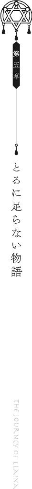
【美食家が唸る料理】
とある国にちょこざいな美食家がいました。
「自慢じゃないが、僕はこの世界のありとあらゆる料理を食べてきた。はっきり言って、僕ほど世界の料理に詳しい男はいないんじゃないかな」
随分な豪邸にお住みの美食家さんは、一流の料理人を夜な夜な屋敷に招いてはパーリィ。夜な夜なパーリィ。どうせならと客人もいっぱい招いてパーリィナイト。美食家を自称するわりに随分と飢えておられるようで、美食家さんが主宰するパーリィは若い女の子なら無料でご招待されるという太っ腹ぶりでもありました。
「どうだい魔女さん。楽しんでいるかい？」
タダ飯に釣られた私ももれなくその会場で名だたる料理人たちの手料理を食べて食べて食べまくりました。
「ええ。それはもう。幸せです」
「それはよかった」上等なスーツに身を包んだ美食家さんは、自信たっぷりに語ります。「そういえば君は旅の魔女だそうじゃないか。どうだい？ ここに今まで食べた料理よりも素晴らしいものはあるかい？ まあ、あるわけないと思うけどね」
「はあ」
「ないだろう？」
「じゃあないんじゃないですかね」
「そうだろうそうだろう」
まあ、タダ飯ですし多少の不満は我慢しましょう。タダより高いものはありません。よってこの場の料理ほど高いものはありません。つまりこの場における料理はこの世で最も最高級。
まあ、とはいっても。
高いからといって、素晴らしくはないですけどね。
「──あ、おい！ お前、何をしている！ その盛り付けはなんだ！ 料理を侮辱しているのか？」
先ほどからちょいちょい、パーリィの合間合間にて美食家さんは料理人に対して暴言にも似た指示を出しておられました。
「おい小娘！ その料理の一番よい食べ方はそうじゃない！ 浅学娘はここから出ていけ！」
彼の暴走は時折、料理人だけには留まらず、招待された女の子も巻き込んでいました。
私も例外ではなく、先ほどの話ですが、パンの上にバターを塗りたくっていたら「そんなにバターを塗ったらパン本来の味が愉しめなくなるだろうが！」と没収されたりもしました。
今は精神的に落ち着いておられるようで、ワイングラスを揺らしながら穏やかな表情を浮かべている美食家さんです。
「全く......、料理の何たるかを分かっていない奴があまりにも多すぎると思わないかい？ まあ君もちょっとその傾向があるけどね」
「はあ......」
「今日の料理を食べて、少しでも上質な料理の味を覚えるといい。いや、もしかしたら舌が肥えすぎてしまって、今後の旅に影響が出てしまうかもしれないがね」
「それは困りますね」
「だろうね。実際、あまり幸せなことじゃあないよ。僕もこうして最高級の料理を食べ過ぎてしまったせいでね、今やどんな素晴らしい料理に出会ってもあまり驚かなくなってしまったよ」
贅沢なお悩みなことで。
彼はため息交じりに言いました。
「ああ、どこかに僕を唸らせる料理を作ってくれる人がいないものかな。そんな人がいれば、僕は大金を払って食べさせて貰うんだがな──」
と。
ちょこざいな美食家を唸らせる料理が作れる人物ですか。
なるほどなるほど。
「それなら、作れる人を知っていますよ」
「ほう？ それは誰だい？」
そう。
「私です」
【読書家が語りたくなる小説】
とある国にちょこざいな読書家がいました。
この世のありとあらゆる本を読みつくし、あれやこれやと評論することで生計を立て、今や豪邸で悠々自適な引きこもりライフを送っておられる小太りのご老人です。
「あの生意気な美食家の若造が一切食事会を行わなくなった原因は旅の魔女である君にあると耳にしたのだが、それは本当かね？」
私はその日、読書家さんの屋敷に招待され、そのように尋ねられました。
「どこでその話を聞いたんです？」
噂に聞くところ、美食家さんは私が腕によりをかけた料理を食べて以来、夜な夜な行っていたパーリィをやめ、素晴らしい料理の数々を他者に披露しなくなってしまったといいます。
結果、この国でタダ飯を食らっていた多くの女性を敵に回してしまった私なわけですけれど。まあそれはそれとして。
「今うちで働いている使用人の一人がだね、元々あそこで働いていたメイドなのだよ。そこで君のことを聞いた。一体どんな手をつかってあの若造を満足させたのだね？ あれはかなり料理にはうるさい奴だったはずだが」
「そんなに知りたいのでしたらメイドさんに直接聞いては如何ですか？」
「聞いてもよく分からなかったから君を招いたのだ。想像力を働かせたまえ」
「............」
めちゃくちゃ上から目線ですね。「でもどうして知りたいんです？ これも想像力を働かせて私自身で考えないとダメですか？」
「うむ。当ててごらんなさい」彼は椅子の上で煙草をくゆらせながら言いました。
傲慢です。
書斎に引きこもり、数多の本に囲まれながらゆったり引きこもりライフを満喫しているご老体はどうやらご自分の口を動かして物事を語るのも億劫であるようです。
まあ、大体想像はつくんですけどね。
「あなたは面白い物語や話を今までの人生で読み過ぎてしまったせいで、今、とてもとても退屈していて、それで面白い話を聞きたいがために私をここまで呼び出した、とかですか」
「ほう......。その通りだ」読書家さんは眉を吊り上げました。「私は近頃の小説に嫌気が差していてな、どれも全く大したことはない。古典文学に比べれば今の大衆小説は足元にも及ばん。毎月いろいろな本が新たに発行されるがどれも私の琴線には触れない。つまらないのだよ。だから退屈していたわけだ」
「でしょうね」
「どうして分かったね？」
「想像力を働かせては如何でしょう」
まあ実際のところ、読書家さんと美食家さんが同じ穴の狢というだけの話なんですけどね。
私は言いました。
「そんなに退屈をしているのでしたら、もしよければ、明日、ここに、あなたがすぐにでも誰かに語りたくなる程の小説をお持ちします。そうすれば美食家さんがどうして食事会を開かなくなったのかも分かるんじゃないですか」
「ほう......面白いではないか。つまり、私もあの美食家のように屋敷に引きこもるように君が仕向けるということかね」
「いえ、そうなるかどうかは分かりません」
「それは何故だね？」
「想像力を働かせなくても分かるでしょうに」
あなた既に引きこもってるじゃないですか。
というわけで後日、私は読書家さんの家に一冊の本を持ち寄り、「これを最後まで読んでください。きっとすぐに語りたくなるはずですよ」と出ていきました。
読書家さんのメイドさんが、「あのう......ご主人様がすぐに来いと呼んでおられます......」と遠慮がちに私が泊まる宿屋に尋ねてきたのは、それから三日後のことでした。
読書家さんの豪邸へと再び赴いた私を待っていたのは、顔色を歪ませた読書家さんでした。
「どういうことだね、これは」
ばん、と彼はテーブルに本を叩きつけます。
読書家のわりに随分とお粗末な本の扱いをしますねー、なんて思いながら眺めていましたが、よく見るとその本は数日前に私が彼に渡したものでした。
彼は私が与えた本にどうやら不満がたっぷり溜まっていたようです。
「一体何なんだこれは。語るべきテーマもなければ文章構成もまるでなっていない。ただ延々と凡人の日常会話が繰り返されるだけではないか。伏線と呼べるほどの伏線もまるでない。登場人物も魅力と呼べるモノは何も持ち合わせてはいない。開始三行目で苦痛を感じた本はこれが初めてだぞ」
「............」
ちなみに本の題名は無題。どこかの国の雑貨屋でたまたま見つけた誰かの私小説です。内容は確かにゴミそのもの。
私も彼に渡しはしましたが、実際のところどんな内容だったか全く憶えていないほどつまらない小説です。けれど我慢に我慢を重ねて読み終えた直後は計り知れないほどの憤りを感じたことは憶えています。確か私は頑張って三時間程度で読み終えたと思いますが、思い返してみれば人生で最も無駄な三時間だったのではないでしょうか。
一方で読書家さんは三日がかりで読んでいたようですし、恐らくは人生で最も無駄な三日間を過ごしたことに憤っているのでしょう。
「もしかしたら私が面白いシーンを読み飛ばしたのではないかと思い何度も繰り返し読んだがこれは間違いなく掃き溜めのゴミだ。どうしてこんなものを渡したのだ？ 私が求めていたのは、こんなにつまらない物語ではない」
お怒りでした。
美食家さんのときと同じように。
だから私は、満面の笑みを浮かべて、言うのでした。
美食家さんが思わず唸ってしまうほどに不味い料理を食べたときと、同じように。
「でも誰かに語りたくなった小説だったでしょう？」
一人の魔女が森の中、ほうきに腰かけ、木々の合間を縫うように進んでいました。
覆いかぶさるように重なる木の傘たちの間には、太陽の輝きがきらきらとまるで星空のように瞬いていました。
しかし夜空に浮かぶ星空の暖かさが地上に降り注がないように、森の中はまるで夜中のように薄暗く、天井から零れる光も決して魔女には降り注ぐことはありませんでした。ただただ、森の上で輝きを放っているだけです。
だからこそほんの少し、春先といえど肌寒く、その魔女はしきりに自らの肩を抱いて、森の中を進んでいました。
それは黒のローブ、黒の三角帽子に身を包んだうら若き魔女でした。歳の頃は十代後半ほどでしょうか。髪は長く、白でも黒でもない曖昧な灰色で、風がそよぐ度にたなびいていました。瑠璃色の瞳は、薄暗いだけの森に注がれます。
『この先、立ち入』
人気のまるでない森の中に、人がいた痕跡が僅かに残っているのが見えました。
途中で途切れてはいますが、おそらくは立ち入り禁止とでもかつては書いていたのでしょう──けれど文字は掠れ、看板は既に蔦が巻き付き、役割を終えているように見えました。
なので魔女はそれを見なかったことにして、ほうきで突き進み続けます。
まあ現在もがっつり立ち入り禁止であろうと普通に進んでいたとは思いますが。
「............」
とまあ。
そんな感じに、ルールを平然と無視して、あとから怒られたら「あ、ごめんなさーい。知りませんでしたー」などとのたまって誤魔化そうとする性根の腐った魔女は、一体誰か。
そう、私です。
「............」
別に、森の向こうに私が目指す何かがあるから無理して進んでいるというわけでもありません。ただ、この森の入り口には、今しがた見たものと同じような看板が──この先立ち入り禁止、と綴られたものが、首を折られ、地面に転がっていましたから、なんとなく、気になって入ってみただけなのです。
その先に何があるのだとか、見てはならない何かがあるのかだとか、そういった込み入った事情はまったくもってさっぱりです。
まあ何もなかったらなかったでそのまま帰ればいいだけの話です。
それから私がしばらくぼうっとしながら、森の天井を眺めたり、あくびをしてみたりなどして進み続けた頃でしょうか。
木々の合間に光が差し込んでいるのが見えました。
おおようやく終わりですか。長かった長かった。なんて思いを巡らせながら、私はそこに向かったのですけれど。
「──おまえ。止まれ」
森を抜けた直後です。
じゃきん、と。
見渡す限りが剣で覆われていました。剣先をこちらに向けながら静止する剣が無数にありました。
「......ええ？」
反射的に両手を挙げてしまう私でした。何が何だか分からぬまま降参の構えです。
目の前には、こちらにそれらの剣のように鋭い目つきを向ける少女が、一人。
深く被られた三角帽子からは、黒く美しい髪が垂れていました。肌は浅黒く、瞳は春の海のように淡い青でした。服装は奇妙なもので、三角帽子とローブを着こんでいるはずなのですが、ローブの下の露出が妙に高く、お腹や太ももが普通に露わになっていました。ローブを脱いだらほぼ下着と言って差し支えないのではないでしょうか。この季節ですし、お腹壊しません？
彼女は剣呑な目つきを相変わらず私に向けながら、のたまいます。
「おまえ、ここ最近、わたしたちの領地を荒らしている者だな？」
「違いますが」
「うそだ。お前からは噓の臭いがする。噓くさい」
「ばかな」
くんくん、とローブを嗅いでみましたが、洗いたてのいい香りしかしませんでした。
「この国に、なにをしに来た？ わたしたちを襲いに来たな？」
「え、ここ国だったんですか？」
門も何もないのに？
両手を挙げたまま、ちらりと姿勢を傾けて彼女の向こうを仰ぎ見ます。
............。
「......まあ」
そこにはどうにも奇妙で、けれど素敵な景観が広がっていました。
水に沈んだ国でした。
吸い込まれそうなほどに深い青が、森が切り開かれた一体に広がっており、その上に、幾つもの建物が並んでいます。
水の底から這い上がるように伸びた塔が大小さまざまにあり、水の上を漂う一軒家が幾つも並んでいたり。浅瀬では木が片足を突っ込んで傾いていたりもしました。
ちょうど目の前の彼女が立っている場所は水際のようで、揺れる水面が彼女の浅黒い裸足を優しくなぞっては引き戻されています。
見ればその傍らには小舟が波に揺られてゆらゆらと愉快に踊っておられます。つい先ほどまで漁をしていたのか、小舟の中では魚たちが網に入れられこれまた踊っていました。
何はともあれ国に着いたようでした。
しかしなんだか妙な誤解をされているようでしたので、ひとまず私は、
「私、怪しい者じゃありませんよ？ ほら見てくださいこのブローチ。私、魔女ですよ、魔女」
とローブの胸元を引っ張って、ほれほれと彼女に見せて差し上げました。
「魔女？ しらん。食えるのか？ それ」
「............」
おや？
「おいしそうな形してる......」
「............」
あ、この人、会話、通じない。
私は早々に意思疎通を諦めました。コミュニケーションの匙を投げました。
「おまえ、怪しい。連れていく」
結局私は、彼女にぐい、と腕を引っ張られ、そのまま小舟に載せられて、国へと連れていかれるのでした。ついでとばかりに腕を縄で縛られました。ちなみにゆるゆるでした。
............。
まあー、話が通じる人に出会えばなんとかなるだろうと楽観しながら。
そんな風に思考を巡らせながら、海のようになった国の上を、小舟で滑ってゆくのでした。
「......んんー！ むぅー！」
ちなみに小舟は今しがた出会った彼女が腕をぷるぷると震わせながら漕いでくれました。
......魔法使っちゃえばいいのでは？
○
「おやじ！ 怪しい女みつけた！」
水の上をしばらく漂ったあとでした。
彼女は一番高い塔に私を連れていくと、取って付けたような扉をばたん、と開き、大声でそう叫んだのでした。
中はほどほどに広く、けれど人が住めるように元々設計はなされていなかったのか、白塗りの美しい天井が手の届くくらいの距離にあり、さらに床は木を張り巡らせただけ。強く踏んでみればほんの少したわむ程度の手作り感満載のものでした。
「......ほう」
奥には、これまた手作り感溢れる木造りの椅子に腰かけた褐色ダンディなおじさまが一人。
「何だ。例の国の差し金か？」ダンディさんは言いました。
ちなみにほぼ全裸でした。着ているものといえば腰に巻き付けた布一枚のみ。寒くないんですか。筋肉が寒さから身を守っているんですか。そうなんですか。
呆れる私の腕をぐいぐい引っ張りながら、
「これ！ こいつ！ あやしい！ 見た目がすごくあやしい！」と彼女は言いました。
「いやあ別に怪しい者では」
私がそのように弁明してもあまり効果はないようで、ダンディさんは、
「......まあとりあえず牢屋にでも入れておけ。尋問は後からしよう。そんなことより飯にしよう」
と立ち上がります。
......なんすかそのテキトーな感じ。
「うん！ わかった！ 拷問する！」
尋問でしょうに。
結局、なんだか張り切りまくりな彼女にされるがままに私は引き連れられます。
塔の内部はそれなりに広いらしく、二階に位置する場所は大きな牢屋になっていました。彼女はそこに私を放り込むと、「ここでおとなしくまっているがいい！」とだけ言って、一階に戻ってしまいました。ちなみに例によって格子は木造りです。
「............」
「............」
中にはもう一人、私と同じように捕らえられた方がいたようでした。
檻の隅っこに、人影がひとつ。
「あなたも捕まっちゃったんですかー？」
それはどこかのほほんとしていて、おしとやかな雰囲気を漂わせた、大人の女性でした。
歳の頃は二十代前半から半ばほどでしょうか。ふわふわの金色の髪を頭の横でひとつに結んでおり、毛先が肩のあたりに触れています。瞳の色は青みがかった紫。細い銀色フレームの眼鏡の向こうにありました。
一体普段は何をしている人なのか、服装はワンピースにストールといった、街娘が着るような服を着こんでおり、こんな檻の中にはやや不釣り合い。
「どうも」
私はひとまずお辞儀をしました。
彼女は、「どうもー」とにこやかに笑みを漏らしてから、「わたしはヴィオラって言いますー。旅の美少女考古学者ですー」と言いました。
「............」いや少女と呼ぶべきお歳ではないのでは。
「あ、美少女というのはほんの冗談ですー」うふふ、とヴィオラさんはお上品に口元に手を当てて、「魔女さん、お名前は？」
「あ、イレイナといいます。旅の魔女です」
「あら可愛い名前の可愛い旅人さんですことー」
「ど、どうも......」
と返しながら、牢屋のど真ん中に私が腰を下ろすと、ヴィオラさんはなぜかすっと立ち上がり、そのまま私の隣に座りました。
「............」対面早々なんとなくどことなくやりづらさを憶える私でした。「あの、この国は一体何なんですか？」
私が若干距離をとりがら尋ねると、ヴィオラさんはうふふと笑い、
「この国はですね、水没街区と呼ばれる場所なんですよー」
と距離を詰めてきました。
「水没街区、ですか......。聞いたことありませんね」近づかれたぶんだけじりじりと離れる私。
「ここに住む彼らしかそう呼びませんからー」そのぶんだけ近づく彼女。「ここはですねー。それはそれは悲しい歴史を抱えた国なのですよー」
「あ、はあ......」離れる私。
「訊きたいですかー？」近づく彼女。
「その前に距離が近すぎると思うんですけど」
「あ、おかまいなくー。わたし、パーソナルスペースがないことでつとに有名ですのでー」
「他人のパーソナルスペースを踏み荒らすことで有名の間違いでは」
「ちなみにわたしが距離を詰めるのは可愛い女の子相手のときだけですので、心配しないでね？」
「............」
「うふふふふ......」髪を撫でられました。
ぞわぞわと背筋が凍りつきました。
「............！」全力で檻の端っこに逃げ込み、大きめのバッグで彼女と私の間に壁を作り上げた私でした。
身の危険を感じたのです。
なんなんですかこの牢屋。檻の外よりよっぽど危ないじゃないですか。無法地帯じゃないですか。
怖いです怖いです怖いです。どうしましょうか。もういっそのことこのまま魔法でもぶっ放して逃げてしまいましょうか。
なんて思いながら手を結びつけた縄をほどこうとしたときでした。
「おまえらにメシ、もってきた」
先ほどの褐色の彼女が、両手にお皿を持って現れました。
ちなみにサラダです。水の上の街ですしお魚とか食べさせてもらえるのかなーなんて考えていた私の甘さたるや。
咎人にはサラダしかくれないようです。
「......ふん！ おまえらは草ばっか食ってやせ細ってしまえ！」
などと荒っぽい口調の彼女は、いったんお皿を置いて、よいしょと柵を開け、私たちにわざわざ「あ、どうぞ」と手渡しをしてから牢屋を去りました。
と思ったらまた戻ってきて「これ、ドレッシング」と何種類かの瓶を置いて今度こそ去りました。
所々に育ちのよさが滲み出ていていとおかし。
「あの子はアトリといいましてねー。この国には珍しい魔法使いなのだそうですよー。あと族長さんの娘さんだそうですー」もさもさと草を食べるヴィオラさん。
「族長さんとは」
「下にほぼ全裸のおじさんがいたでしょう？ あの人はこの国に住む族の長なのですよー」
サラダをもしゃもしゃと咀嚼しながら、ヴィオラさんは言いました。
「なるほど」と私は頷きました。族長としての格好がアレですか。
「ところでアトリちゃん、かわいいですよねー」
「あ、はあ......まあ、そうですね......」
「あ、わたし、さっきは旅の美少女考古学者と言いましたけどー。実は趣味で美少女図鑑なるものを作ってましてー」
「すみません会話の流れが分からないのですけど」
「あ、そういえばここに水に沈んだ国跡があるのには、理由がありましてねー？」
「話がとっ散らかってますね」
「あはー」
「............」
あ、この人も、会話、通じない。
しかし何はともあれ、確かにこの国の成り立ちに関しては興味もありましたので、私はヴィオラさんに耳を傾けるのでした。
「あ、そういえば──」
などと。
それからも話が二転三転したのちに、ようやくこの国の過去を彼女は語りました。
○
それはヴィオラさんが旅の途中に古都ローリアという平凡な国を訪れたときのこと。
「儂がこの国の国王じゃ」
滞在三日目に、彼女は国王様に呼び出されたそうです。
「あ、どうもー」
相手がどこぞの国の王であったとしても彼女の対応は基本的にはのほほんとしているようです。
「お主は旅の考古学者らしいが......、それはまことか？」
「はいー。美少女考古学者ですー」
「............」
「あ、美少女というのは冗談ですー」
「......そ、そうか」国王様はこほん、と咳払いをしました。「頼みたいことがあるのじゃ」
「夜伽のお相手ですか？ ちょっと無理ですー」
「違う」
「すみませんわたし、男性とはそういう関係になりたくないものですからー」
「違うと言っておろうに」
と国王様は大いに呆れてから、ご大層な椅子の上で身を乗り出し、真面目な話を切り出しました。「実は我が国は最近、食糧難に悩まされておってな......」
話によればその国は人口の増大により自国だけでは食糧がまかないきれなくなってきているのだそうな。そこで、他国からの輸出を頼りにしたいと思ったようですが、残念ながら他所も他所で火の車。輸出してもらえたとしても雀の涙程度でしかないとのことです。
国王様は困り果てました。
「そこでじゃ。我が国は食糧調達のために、新たに土地を開拓しようと思うのじゃ」
「なるほどー」
「我が国の兵を出し、近隣の地域の調査を行ったところ、立ち入り禁止区域となっておる森の中に湖があることが分かった。早速我が国の兵士たちは総力を挙げて漁をしようとしたのだがな......、そこはどうも少々問題があるようなのじゃ」
曰く。そこは湖ではなく、人が住む国であった、ということなのだそうです。
しかも住人はどうにも好戦的で、兵士たちを片っ端から攻撃していったそうな。とても魚など獲れるはずもありません。
「というわけで、お主には、湖の上の国──水没街区に赴き、連中と話をつけて来て欲しいのじゃ。儂らもできれば手荒な真似はしたくはない。原住民とコミュニケーションをとってもらいたいのじゃよ」
「............」
「お主にとっても悪い話ではなかろう？ 未開の地の調査ができるのじゃから」
要約すれば、それはつまり死の危険がある無法地帯に武器も持たずに一人で赴き、相手から武器を取り上げてこいということに他なりません。ほぼ間違いなく死にます。
こんな依頼、受ける理由があるのか。馬鹿馬鹿しい。呑めるわけがない。
ですからヴィオラさんは首を振りました。
「もしも行ってくれるというのなら、お主が街中の女を口説き回っていかがわしいことをしていた事実に目を瞑ってやるが？」
縦に。
後日。ヴィオラさんは水没街区に到着しました。
彼女も私と同じように捕まり、牢に投げ込まれましたが、そのあとで族長さんと対面して事情を話したところ、あっさりと解放してくれたそうです。
水没街区の方々はそれなりに物分かりがよろしいようです。
彼女が敵でないと分かると族の方々は態度をころりと変え、歓迎してくれたそうです。アトリさんのお父さんは手料理のお魚を振る舞い、やたら高所から仕上げの塩をぱらぱらと掛け、娘のアトリさんは歓迎の舞だか何だかを踊ってくれました。
ヴィオラさんはその場で、水没街区に来た理由を語りました。ちなみにお魚は食べなかったそうです。たぶんアトリさんに夢中だったからだと思います。
ヴィオラさんの話にお父さんは「......ほう」と頷き、けれどアトリさんは頰を膨らませて、「ちがう。向こうは最初の時点でわたしたちに敵意を向けていた。だから倒した」と応えました。
おやおや？ これは事情がおかしい。話し合いをするより先に、古都ローリアに戻って両者の話の食い違いに関して問い詰めたほうがいいかしらん？ とヴィオラさんは思ったそうですが、しかしそれ以上にアトリさんという女の子はそれはもう可愛らしくて、なんかもう可愛いから別にどうでもいいやといった所感だったので、依頼されたことに関してはとりあえず頭の隅にポイしました。
結局、水没街区を詳しく調べるという名目で彼女は残ることにしました。
まあ元々、考古学者ですし、街についても気にはなっていたのでしょう。
その言葉に族長さんはそれなりに喜びました。「それはよい。我々も、この水中にある街についてはいろいろと知りたかったのだ。なにせ我々が生まれるよりもずっと前から、ここには水に沈んだ街がある」
族長さんにとっては足元にある街跡に関しては別に知らなくてもいいけれど、知ることができればそれはそれで喜ばしい、という程度の認識であったようです。
アトリさんはヴィオラさんに懐いていたのか、調査に協力的で、水中に潜る際には魔法をかけて身体が濡れないようにしてくれたり、一緒に潜ってくれたりもしたとか。
それからの日々、ヴィオラさんはアトリさんと共に水中に潜る片手間で暇つぶしに他の女の子にちょっかいを出し、潜り、他の女の子と遊んで、それから潜って他の女の子と遊んで、それから他の女の子と遊んで、他の女の子と遊びました。結果的に他の女の子と遊ぶついでに水没街区の調査は行いました。この人はろくでもない人です。男だったら間違いなく百回は死んでると思います。
尚、そのような粗相ばかり犯しているものだからアトリさんからは完全に愛想をつかされ、毎食サラダのみという嫌がらせを受け続けたそうです。ざまあないと思います。
しかしそれでも水中の調査にはアトリさんは来てくれたそうで。
彼女の育ちのよさと付き合いのよさって何なんでしょうね。口調はややアレな感じですけど。
ともあれ、数日に亘る調査ののち、ヴィオラさんは一つの結論に辿り着きました。
「この国は数世紀前に人為的に沈められた国で間違いありません」
族長さんに、ヴィオラさんは語ります。「水中に出来た街の構造を簡単に図にしたためるのならば、この国は元々、お鍋のような形になっていたようです。つまり森を深く掘り、そこに国を作っていた──それがこの国のかつての様子なのでしょう」
「ふむ......、ということは、大雨か何かで水が溜まってこの国は滅んでしまったのか？」
族長さんの言葉にヴィオラさんは首を振ります。横に。
「いいえ。それだけでは水は溜まりません。恐らく魔法によるものでしょう。魔法使いが大量の水をこの国に集中的に浴びせ、沈めたのです。何を目的としてそうしたかまでは分かりませんが......」
「......なるほどな」
頷く族長さん。
簡潔に報告を終えたのちに、ヴィオラさんは「では、私は明日にここを出て、古都ローリアに向かいますー。向こうで諸々確認したいことがありますのでー。今宵まではここに泊めて頂いて宜しいですか？」
これにも族長さんは頷きました。「もちろんだとも。アトリは君のことをとてもよく気に入っている。ぜひともずっと一緒に居てもらいたいくらいだよ」
「あらあらー」
うふふ、と笑うヴィオラさん。
しかし笑みの裏には、複雑な感情が渦巻いていました。
アトリさんと何度か行った水中の調査のなかで、彼女はよくないものを一つ、見ていましたから。
それはとある民家の壁に、古い時代に書かれた文字でした。
『古都ローリアの魔女により、この国は水に没す』
アトリさんには読めていなかったようでしたが、ヴィオラさんにははっきりと、その文字が読めていました。
それはきっと、のちに誰かが来たときのために綴られたメッセージだったのでしょう。
ヴィオラさんはそもそも最初の時点から違和感を抱いていたといいます。どうして立ち入り禁止区域に人が住んでいるのか。どうして立ち入り禁止区域なのか。なぜよそ者のヴィオラさんを派遣したのか。どうしてアトリさんの証言と国王の話が食い違っているのか。
もしかして国王様は、すべて知っていたうえで、ヴィオラさんを派遣したのではないか。
もしかして古都ローリアは、何か裏があって森を立ち入り禁止区域にしたのではないか。
どことなく、不穏な空気を感じたヴィオラさんでした。
というお話でしたとさ。
............。
あれ？ おやおやおや？
「ちょっと待ってください。じゃあ何で捕まってるんですか」
「ああ、これはー」うふふ、とヴィオラさんは笑いました。「昨日ですね、夜中にアトリさんの寝室に忍び込んだらこうなりましたー」
「............」
この人ほんとにろくでもない人だなと思いました。
○
それから牢屋でしばらく過ごしたのちに、私たちは族長さんに呼ばれ、二階から下に降りました。
族長さんはそれなりに話の分かる人でしたので、あれこれと私が自身の身の上に関して語れば、「......ふむ」と頷き、「じゃあ問題ない。解放してやれ」とアトリさんに命じてくれました。
緩い......。
今しがた手にかけられていた縄のような緩さを持った族でした。
「近隣の国の兵がこの領土を荒らしに来たことがあったからな、念のために疑っておいただけのことだ。私は無闇やたらと捕まえて尋問する趣味は持ち合わせていない」
と族長さん。
どうやらこの場において最も話の通じる人のようでした。格好はアレですけど。
「牢屋での会話は大方、アトリから聞いている。君は旅の魔法使いだそうじゃないか」
「？ ええ」
ちらりとアトリさんに目をやると、彼女はふい、と顔を逸らしてしまいました。もしかしてずっと盗み聞きしてたんですか......。暇なんですか......。
「お皿、回収しなきゃだから、見張ってただけだし。途中までしか聞いてないし」
私の視線にこのような言い訳を吐いたアトリさんでした。
族長さんは、
「事情を説明する手間が省けて助かる。考古学者殿の話から分かるように、我が領土は現在、近国に襲われつつある。このままでは我々が滅ぼされる可能性すらあるだろう。何せいきなり威嚇してくるような連中だ。いつ総攻撃を仕掛けられるか分かったものではない」
いくらアトリさんのような魔法使いが偶然いたとしても、相手は圧倒的な力を持った近代国家。本気になれば敵うわけもありません。
それは族長さんもよく分かっているのでしょう。
「そこで、君たちには頼みがある。彼らとの和解交渉をしてきて欲しいのだよ」
「和解交渉、ですか......」
族長さんは私に頷きます。
「はっきり言って、私もこの問題をどう解決すべきかはずいぶんと頭を抱えている。しかしどう足搔いても結論は出ないのだ。連中の狙いは食糧。しかし我々にとっても魚は貴重なものだ。簡単に手渡すわけにはいかん。だが、拒めば滅ぼされかねん......どうしようもないのだ」
「そのどうしようもない問題を私たち二人に委ねると」
「......うむ」
無茶苦茶です。
確かにここに住む人たちよりは他所の都合に精通しているかもしれません。けれどこのような重大過ぎる役割を押し付けられる謂れはないはずです。
失敗すればここにいる全員綺麗さっぱりお亡くなりになりかねない事情であればなおさらです。
私には荷が重すぎます。
「なるほどー」しかし相変わらず、私の横ではのほほんとしたヴィオラさんがいるのでした。
彼女とて、表面的には笑顔を取り繕っていようとも、内心では私と同じような感触を抱いているはずです。
族長さんやアトリさんにはまだ伝わっていない、古都ローリアの過去を彼女は知ってしまっているのです。
どうしようもない事態に陥ってしまっているのは明らかです。
つけるべき話もなければ、それどころか彼女がおめおめと古都ローリアに戻ることですら危険であるかもしれないのです。
断るほかないでしょう。
「頼めるか」
そして。
族長さんの言葉に、ヴィオラさんは当然とばかりに首を振りました。
「お任せくださいー」
と。
縦に。
............。
は？
呆気にとられる私をよそに、ヴィオラさんは相変わらずのほほんとしながら、
「ただし、一つお願いがあるのですけどー」
と猫撫で声で、ひとつおねだりを致したのでした。
○
青空のもとで小舟が頼りなく揺れていました。
棟に手を添えて力を込めてみれば、それだけでくるりとひっくり返ってしまいそうなほど弱々しく、深い青の水面の上を、小舟は漂います。
所々に塔が突き出し、あるいは民家が漂う水没街区の上には、このような小舟が幾つも点在していました。
「......で、魚なんて釣ってどうするつもりですか」
私の横で釣竿から垂れた糸をぽいと水面に投げた彼女は、「んー？」と首をかしげてこちらを向きました。
「どうするって、お土産に持って行くに決まっているじゃないですかー」
「......で、じゃあお土産なんか持って行ってどうするつもりですか」
「食べてもらうに決まってるじゃないですかー？」
「............」
彼女の話に噓偽りがないのならば、相手はこの国を一度滅ぼしたことのある国。お土産として魚を上納したとして、果たして意味があるのでしょうか？
むしろ搾取されるだけなのでは。
「意味あるんですか、それ」
「まあまあ。わたしに任せてくださいなー」言いながら、彼女は私に釣竿を寄こしました。
ぐだぐだ言ってないでとっとと魚を釣れ、とでも言いたいのでしょう。
「............」
意味も意図も分かりません。
憮然としながらも、何か考えあってのことだろうと強引に納得をして、私も彼女のように糸に餌をくくりつけて、糸をぽいと投げました。
ゆるやかな波を描く水面は、波紋すら浮かべることなく、私が投げやった餌を吸い込んでいきました。
ほどなくして先に魚が食いついたのは、ヴィオラさんの釣竿の方。ぐい、と下から引っ張られるような感覚に気づいた彼女が弓なりになった竿を引き上げると、一匹の大きな魚が小舟の上に落ちます。
火照ったように赤い色をした魚でした。
「ここではこの魚は主食にも等しい食べ物なんだそうですよー」ヴィオラさんは魚を桶に放りながら言いました。「この国の食卓には必ずと言っていいほどこの子が並ぶそうなのですー。なんでも、煮ても焼いても干しても生でもそれなりに美味しいらしいそうで」
らしい？
「食べたことはないんですか？」
「いつもサラダばっかりですゆえー」
ぴゅー、と口笛が鳴りました。その方角に顔を向けると、ほんの少し先に見える小舟で、大きな網を魔法で浮かせながら立ち上がり、親指を下に向け、胸の辺りで振るアトリさんがいました。
「......なんですかアレ」挑発ですか。やる気ですか？ おお？
かと思ったら今度は人差し指をたてて顔の前で振り始めました。もはや意味が分かりません。
「アレはハンドサインですー」と応えながら、ヴィオラさんは、「そこは魚が少ないから離れろ──と言っているのですよー」と、小舟を漕ぎ始めました。
ついでにアトリさんにウインクとともに投げキスを送ってもいました。
「......いまのは何のハンドサインですか」
「愛してるという意味ですー」
「............」
ちなみにそれに対してアトリさんは小船の上で、ぺっと唾を吐きました。たぶん「は？ 気持ち悪」のサインだと思います。
それから彼女たちは船の上でなぜだかハンドサインを飛ばしあいました。
アトリさんが自らの喉に指二本を添えれば、
「あれは『喉乾いてない？ 大丈夫？』と言っているのですよー」とヴィオラさんがわざわざ解説を添えたあとで、『今夜一緒に寝ていい？』とハンドサインを返しました。意味が分からない......。
『きもい。しね』とアトリさんが怒れば、『やだもう！ 照れちゃって可愛い！』とヴィオラさんはるんるんと踊ります。船が揺れるんでやめてもらえますか。
魔法で網を自在に操りながら漁をする片手間、無視してもいいものの、アトリさんはご丁寧に毎度ヴィオラさんに返事をしておられました。真面目ですか。
まるで意思疎通ができていないハンドサイン合戦はそれから私たちの桶がいっぱいになるまで続けられました。
『もうアトリちゃん大好き！ 結婚しましょう？』
『ほかの女の子にも同じようなこと言ってるの、わたし、知ってる』
『ところで挙式はいつにします？ ウェディングケーキはお魚のパイにしましょうね？』
『まずそう』
『子供は何人欲しいです？』
『いらない』
『まあ！ わたしの愛情を一生独り占めしたいということです？ きゃー！ 独占欲ちゃん！』
『ちがう』
『新婚旅行はどこにします？ 旅館？ 宿屋？ それともホテル？ もしくはホテル？ あとホテルなんかはどうでしょう！』
『山がいい』
『あらワイルドですね』
『うん』
『ところで今夜、お部屋に行ってもいいですか？』
『また牢屋に入りたいの？』
『一緒のお布団になら......』
『きもい。しね』
『大丈夫！ 入るだけですから！ 一緒に寝るだけですから！ ほんとに何もしませんから！ マジで！ こう見えてもわたし、そこら辺の女と違って淑女ですから！』
『淑女は女の子と一緒に寝たいとか言わない』
『可愛い女の子と一緒に寝ようとしない女は淑女じゃありません』
『じゃあ何』
『草食系......ですかね......』
『サラダばっか食ってる女の台詞とは思えない』
『サラダしか食べさせてくれないじゃないですか......』
............。
あの、いちゃいちゃしてないで魚釣ってもらえません？
○
大量の魚が詰め込まれた網を抱えて、私たちは古都ローリアへと旅立ちました。
それなりに距離があるため、鮮度を保つためにも急ぎ足で向かいます。なので当然のように私たちはほうきで飛びました。
アトリさんが網を魔法で浮かせながら飛び、私の後ろにヴィオラさんを載せながら、ふたつのほうきが、森の上を漂っていました。まるで海の上を漂っているかのように、眼下に見える木々の葉は、私たちの真下で波打っていました。
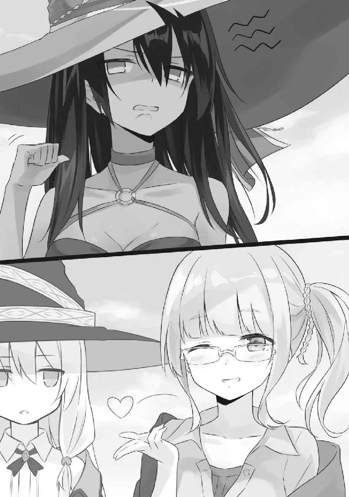
「うう......アトリちゃんと一緒がよかった......」私の後ろではほうきに横乗りになりながらしゅんとしているヴィオラさん。
そこからさらに視線を遠くへやると、宙に浮く網を傍らに備えたアトリさんの姿があります。例によって何かのハンドサインをこちらに投げてる最中でした。
「......彼女、何と言っているんです？」
私が尋ねると、「『みんなにお土産買っていったほうがいいかな？ 都会って初めて！』と言っていますねー」とヴィオラさん。
「............」
本来ならば私とヴィオラさんの二人だけで行く予定だったのですが、直前になってアトリさんが「待って。網、わたしが持たないとダメ。二人は危険」とゴネ始めたのです。
べつに私が網も持つので大丈夫ですよと窘めても、「それではお前の負担が大きい」などなど。
拒む理由もありませんでしたので承諾しましたが、どうやら彼女は国の外というものに興味が大きいようでした。
「............」無言でアトリさんに何やらサインを送るヴィオラさん。
「何と言ったんです？」
「愛してると伝えましたー」
「............」
背後で飛ぶアトリさんを見やると、森に向けてぺっと唾を吐いている最中でした。
古都ローリアに着いたところで門兵さんに事情を話したところ、「かしこまりました！ それではこちらへ！」と慌ただしく敬礼しながら、私たちを王宮に案内してくれました。
一度この国の兵士とやり合っていることを思い出したのか、アトリさんはがるるる、と唸り、ヴィオラさんはそんな彼女をあらあらと頰に手を添えて微笑ましげに見つめました。まるで躾のなっていないペットとその飼い主です。
王宮に着き、兵士たちが「うわ魔法使いだ」「やべえ二人もおる」「こりゃ敵わん」と次から次へと私たちに敬礼。私も真似て敬礼しました。しかしこちらの魔法使いさんは敵意むき出しでした。兵士が頭に添えた手に嚙みつきそうな勢いですらあります。尚、ヴィオラさんは相変わらずあらあらしてました。ちゃんと手綱握っててもらえますか。
「儂がこの国の国王じゃ」
案内された一室の奥。赤いカーペットの先に、御大層な椅子に腰かけるおじいさんが一人いました。自己紹介の通り国王様なのでしょう。白髪交じりの頭の上には王冠がそっと添えてあります。
「ども」
「こんにちはー」
「しね」
私たちはそれぞれ並び、挨拶を致しました。一人なんかアレな人が混じってますけど。
「なんか今そこの魔法使いに死ねと言われた気がするんじゃが......というか何じゃその網」王様の視線はアトリさんに注がれていました。
「わたし、おまえ、きらい。しね」
こんな場所でも一切ブレない馬鹿正直ぶりを発揮するアトリさんでした。
顔をしかめた王様に、慌ててヴィオラさんがフォローに回ります。
「国王様、彼女の国では言語が違うのです。今のは別の言葉なのです」
「む、そうなのか？」
「ええ。彼女はこう言っております。『水没街区はわたしとヴィオラの愛の巣だからわたしたちの子作りスローライフを邪魔しないで欲しい』と」
「言ってない」ヴィオラさんの脇腹をどす、と突くアトリさん。
「言ってないと言っておるが？」
「それはこう申しておるのです。『何？ 王様、うらやましいの？ こんな美少女と毎日──』」
「言ってない」
「お主らなんなの」
ため息を漏らしながら、ちらちらと王様がこちらに目を向け始めました。
............。
助けてくれと申しておられるようです。
「えっと......」私は戸惑いながらも、横でいちゃついている二人を放置して会話を進めることにしました。
水没街区が人の住む街であると。水没街区に住む人々は争いを望んでおらず、できるだけ穏便に話を進めたいと。先日、この国の兵士たちを魔法で追い払ったのは誤りであったと。その時のお詫びとして、今回、魚を持ってきたと。
所々、事実と異なる点がありますが、まあそれはいいでしょう。
「......ふむう」
私の話を聞き終えたあとで、国王様は重々しくため息を漏らしました。
「つまり前回の非礼に関して詫びたいと。まあ、それはよい。で、今後のことじゃが──それはどうするつもりかね？」
前回のことなどどうでもいいといった様子でした。
そんな王様の言葉に即座に反応をしたのはヴィオラさんです。
「お好きにすればよろしいかと思います。漁をしたければ好きなだけしてください。何なら水没街区が枯れるまで魚を獲り続けてくれても構いません」
あっけらかんとした様子で、彼女は軽々しく、そう言っていました。
「なっ......！ なにを言っている！」和解交渉とはまるで趣旨が違う場違いな言葉に、アトリさんは摑みかかっていました。「おまえ！ わたしたちを裏切るのか！」
ぐい、と引っ張られた胸倉に皺が集まり、アトリさんの鋭い目がヴィオラさんを捉えます。
そんな彼女の様子などまるで意に介さぬように、ヴィオラさんは王様だけを見つめていました。
「王様。しかし約束をして欲しいのです。もし、わたしの条件を呑むというのならば、今日ここに持ってきた魚をすべて国民に分け与え、食べてください。そして二度と水没街区の人々に手を出さないと誓ってください」
「......むう」
悩む素振りを見せる国王様。その最中にもアトリさんは「おーまーえー！」と胸倉をつかんでぐらぐらとヴィオラさんを揺すっていました。
しばらくののちです。
「よかろう」
当然のごとく、国王様は条件を呑みました。
デメリットなどまるでありません。要するに新しい漁場が増えるというだけの話なのです。蹴るわけがありませんでした。
憤慨し、ヴィオラさんに殴りかからんとするアトリさんを羽交い絞めにしながら、私はヴィオラさんと王様が誓約書を交わすのを見届けました。
「なんで邪魔する！ おまえらわたしたちの国を売るつもりか！」
「いえいえ違うんですよ。そうじゃありません」私は彼女の耳元にて、王様に聞こえないようにこそこそと語りました。
そもそも、そういう話ではないのです。
彼女がとったのは、現段階における最善策でしかありませんでした。
まだ王様にも、アトリさんにも語っていない事情が一つだけこの場には含まれているのです。
私はこっそり教えてもらいましたけどね？
「──しかし、その魚、本当に大丈夫なのか？ 毒でも入っておらんだろうな？」
国王様の懸念はごもっともといえました。美味い話には何かと裏事情がつきものですから。
「ご安心くださいー。毒など盛っておりません。証拠に、原住民の女の子に食べさせてみましょう」
「ほう。では我が城の者に調理させよう」
王様が目配せを送ると、兵士が魚の入った網を回収して部屋から出ていきます。
それからアトリさんが「ふざけるなー！」と喚き、「おまえらは悪魔だー！」と嘆き、それから延々と忌みごとを叫び散らし、疲れ果てて「もうやだ......！ おうちかえる......！」とぐずり出したあたりで、兵士が皿を手に持ち、戻ってきました。
大きめの皿のわりにソースやらなにやらがスペースを無駄に占領している高級料理らしき姿をしたムニエルでした。
ヴィオラさんはそれをフォークで崩し、一口サイズのものを刺し、
「はい、あーん」
とアトリさんの口に近づけました。
「やだ！ 毒入ってるんだろ！」
「入ってませんよー？」
「やーだー！」
「強情ですー」はあ、とため息を漏らし、アトリさんは私を見ます。
手伝えとでも言いたいのでしょう。
私は仕方なしに、アトリさんを摑んでいた手を少しずらし、脇腹に移しました。びくりと肩を震わせ、彼女が嫌な予感を感じ取った瞬間に、私は手にえいやーと力を籠めました。
「ひゃっ」とアトリさんは驚き、口を開き。
「えい」とヴィオラさんは魚を彼女の口にねじ込みました。
最初は眉をひそめて涙目だったアトリさんも、次第に表情を緩め、咀嚼し、こくんと素直に飲み込みました。
ムニエルを食した彼女はただ沈黙を浮かべるばかりでした。
俯き、身体中の力を抜き、呆然と立ち尽くしました。
そして、その場の誰もが彼女の様子を見守るなか、アトリさんは、静かに一言だけ漏らすのでした。
「..................................................................................................................うまい」
と。
若干不服そうに。
「よかったですー」うふふ、とヴィオラさんは頰に手をあてて笑っておいででした。
毒など入っていません。
話はもっと単純なのです。
ただ、その魚がアトリさんたちにしか食べられないというだけの話なのです。
○
事実を聞かされたのは、船の上でのことでした。
アトリさんといちゃいちゃしながらハンドサインを送り合う最中、彼女はふと、思い出したように語ったのです。
「その魚、本当は食べられないものなのですよー」
「は？」
「その魚は本来、外敵に襲われないために毒を持っていましてねー？ 煮ても焼いても干しても生でも、食べるとたちまちお腹が痛くなるのですよー」
「......いや、ちょっと待ってください。食べてるじゃないですか。思いっきりこの国の食卓に並んでるじゃないですか」
「ええ。水没街区では、ですけどねー？」
「............」
にこにことしていた彼女の瞳が、その直後に毅然としたものに変わりました。
「恐らく、かつてこの国は弱く、何もできない国だったのでしょう。だから古都ローリアによってあっさり滅ぼされてしまったのです。古都ローリアは恐らく自国が食糧難などに陥った際に開拓地として利用できるように森を立ち入り禁止にしていたのでしょうけれど──けれど、水に沈められても、彼らの息の根までは止まっていなかった。時代に忘れ去られながら、この地から離れず、ずっと水と共に生きてきたのです」
堀の中の国から水の上の国へと変えられてしまった。
けれど、彼らはその環境の変化に適応してみせたのでしょう。
森は立ち入り禁止区域となり、誰も足を踏み入れないなか、彼らはその中で独自の進化を遂げていたのでしょう。
ヴィオラさんは言いました。「あの魚は本来、食べられたものではありません。毒の魚です。けれど、時代を重ねるごとに、彼らの身体はその毒を克服していったのでしょう。だから今も生き永らえている」
「......もしかして、だから魚を今までずっと食べないでいたんですか」
粗相を犯してはサラダを食わされ、牢に入れられてはサラダを食わされ。彼女は今までそうやって魚を食べずにここで生活を送っていたようですし。
「そですねー。わたしが食べるとお腹痛くなっちゃいますからー」
「............」
「まあアトリちゃんにセクハラするのが思いのほか楽しかったという理由でもありますけどー」
「おっさんですか」なんですかその発想。
「まあ、ともかく」彼女はハンドサインを送りながらも、私を見やりました。「だからわたしはこの魚を古都ローリアに送るのです。そうすれば彼らも気づくでしょう。水没街区に手出しは出来ないと。魚を獲ったところで食べられはしないと」
「......そういうことですか」
「そういうことですー」
うふふ、と彼女は笑みを漏らしました。
水没街区は、長い年月を経て、外敵に襲われないための毒を手に入れたのですよ──と柔らかく語りながら。
○
『そんな話、なんで今更言うの？』
帰り際に事情を語った私たちに、アトリさんは頰を丸くしながら素早くハンドサイン。意味はヴィオラさんが解説してくれました。
「それはほら、アレですよー。アトリちゃんの驚く顔が......見たかった、的な？」しゅばばば、とハンドサインを返しながらヴィオラさん。
『ふざけるな。もう知らない。おやじに言いつけるから』
なんですかその文句。
「まあまあ、いいじゃないですかー。これで水没街区も平和になることですしー」
誓約書を交わす最中、ヴィオラさんはこっそりと王様に手紙を渡していました。「これ、お魚を食べたあとに開いてくださいね？」なんて甘いささやきとともに。
中には水没街区にまつわる真相が綴られているとのことです。
恐らくは古都ローリアも今回の件を機に水没街区を狙うのも諦めてくれることでしょう。
水没街区には釣れる魚はあっても食える魚はいませんから。
「......でも、ひとつ腑に落ちないことがあるんですよ」
私は独り言のように語っていました。「結局、最初の時点でどうしてアトリさんと兵士たちが対立してしまったんです？ そんなことがなければ、こんなややこしい事態にならなかったのでは？」
水没街区の人々は話が分かる方々ですし。その時点でもしも腰を据えた話し合いができていれば、わざわざ私たちから魚を送ることもなかったでしょうに。
「アトリちゃん可愛い！ 抱きしめたいですー」
私の疑問をよそに、ヴィオラさんはほうきの上でるんるんと踊り、アトリさんは心底うんざりとした様子で、彼女にハンドサインを送りました。
それがいやに妙なハンドサインでした。
指先をしゅっと伸ばし、平らにした手のひらを、そのまま頭にぴたりとくっつけていたのです。
まるで敬礼みたいに。
「......すみません、あれってどういう意味ですか」
ぐいぐいと彼女のストールを引っ張る私でした。
「ああ、あれはですね──」そして彼女は言いました。「お前の頭をかち割るぞって意味ですー」
「あ、やっぱり」そういう意味合いですか。
「まあ要約すると『ぶっ殺すぞ』という意味になりますねー」
「............」
「たぶんアレが原因で兵士とやり合うことになったのだと思いますー」
「............」
そういうことですか。
そんなオチですか。
「まあでも、もう済んだことですしー。過去は忘れましょう？ 向こうもこちらの謝罪を受け入れてくれたことですしー」
結果的に見れば。
水没街区はこれからも悠々自適と独自の道を歩むわけで。古都ローリアもなんやかんやと食糧難に悩まされながらも存続していくことでしょう。
毒を持った魚が悠々と海を泳ぐように、大きな魚がそれに目もくれないように、彼らは互いに顔を合わせることなく、これから生きていくのでしょう。
今までの過去をすべて水に流して、今に適応しながら。
あるところに、一日で記憶がなかったことになってしまう不思議な少女がおりました。
名前はアムネシア。歳は十七。さらりとした白い髪を肩のあたりまで伸ばし、黒のカチューシャを付けており、淡い翡翠色の瞳は夏の草花のように綺麗でした。
格好は白を基調としたローブに黒のスカート、それとロングブーツ。刀を扱うことに多少の覚えがあるようで、腰にサーベルを添えていました。魔法使いなのか剣士なのか、いまいちはっきりしない感じの装いです。
憶えていることは何もありません。ただ、寝る前にサーベルの手入れをするだとか、朝起きたら日記を読むだとか、そういった身体に染みついた習慣だけが、彼女には残っているのみです。
彼女の出身は、ここより少し距離のある場所にある、閉ざされた国。名を信仰の都エストと言いますが、どうやらそこに向かって自分は旅をしているらしい──ということを、日記により知り得ています。
果たして信仰の都エストに何があるのか。
もしかしたらエストに辿り着いたとしても記憶は元に戻らないのではないか。そんな不安が一日に何度も波のように押し寄せては消えますが、それでも彼女は進むしか道がありません。
自らの旅路のうえで起こり得る毎日を『朝起きたらこれを読みなさい』と表紙に記した日記にしたためながら、彼女は今日も歩き続けます。
「ようこそ！ ここは辺境のアルベッド！ きみは旅人さんかな？」
「ん。まあそんなとこねー」
彼女はそのように門兵に頷いてから、二、三の質問に淡々と応えました。恙なく入国審査は進行していきました。最後に、門兵から、
「......あなたはローブを着ているようですが、魔法使いではありませんよね？」
と疑るような視線を向けられましたが、
「わたし、魔法なんて使えないわよ？」
と首をかしげて返しました。事実、彼女は魔法など使えませんし、そもそも本来使えたとしても、今の彼女はそれを憶えていないのですから、それはもう魔法使いでないと言っても差し支えないでしょう。
結局、門兵は彼女の腰から提げられた一本のサーベルを見つめ、彼女を魔法使いでないと判断しました。
そして門は開かれ、彼女はくぐります。
その先にはありふれた街並みが広がっていました。レンガ造りの壁が立ち並ぶ路地に、そして同じくレンガ造りの地面。敷き詰められたレンガたちの隙間の所々には苔が溢れており、どことなくその景観から、大昔から今に至るまで姿を変えずに佇んできた街並みの歴史を感じます。
されどこのような街並みはさほど珍しいものではなく、べつにこの国独自のものでもなければ、声を漏らしてしまうほどの美しさも持ち合わせてはいません。
「......綺麗」
けれど彼女は違いました。
目に映るもの。訪れた場所のすべてが新しく、新鮮味しか持っていないのです。目の前のすべてが美しく輝いて見えました。
そのどれもが尊いものに見えました。見惚れてしまったのです。だから、彼女はその光景を忘れまいと歩きながら日記を取り出し、街並みの美しさを明日の自分に向けて綴り始めました。
記憶がなくとも美しさを文章にして説くことはできる。そう判断したのでしょう。
恐らく今までの彼女もそのように生きてきたのでしょう。日記を読み返してみれば、街並みの美しさをこれでもかというほどに長ったるい文章で語っていましたから。
だから彼女は、それはもう夢中になってペンを走らせました。
そして、だから彼女は、反対方向から人が迫っていることにも、まるで気づきませんでした。
「──わっ！」と反対方向から来た人は尻餅をつき。
「──きゃっ」とアムネシアも同じく尻餅をつきました。
彼女とぶつかったのは、年頃の女性でした。灰色の髪をさらりと伸ばしており、瑠璃色の瞳をしていました。
この国の人でしょうか。カーディガンにワンピースといった極めて平凡な服を身にまとっており、アクセサリーと呼べそうなものは首からひとつ下げられた高そうなネックレスのみ。肩からポーチをかけていましたが、口は開けっ放しになっていました。恐らくは買い物途中であったようで、二人の間には、かじりかけの林檎や何冊かの雑誌、それに日記などが乱雑に散らばっていました。
「あ、ご、ごめんなさい！ 字を書くのに夢中で......」あわあわと慌てながら、アムネシアは相手の荷物を拾い集めていきました。
「......いえ。こちらこそ前を見ていませんでした」立ち上がり、冷静にお尻についた汚れを払った灰色の髪の彼女は、「でも歩きながら字を書くのは感心できませんね。視野を自ら狭めているとしか言いようがありません」とさらりと毒を吐きました。もしかしてかじりかけの林檎は毒林檎だったのでしょうか。
「う......。ごめん......」
素直に首を垂れて謝ってしまうのがアムネシアという人でした。
ちなみに反対側からぶつかってきた灰色の髪の彼女は、行儀が悪いことに林檎を食べながら歩いていました。無論、周りなど見てはいませんでした。林檎に首ったけだったのです。にも拘らずぶつかった際には、林檎が汚れてしまったことへのささやかな怒りのせいか、自らのことは棚に上げてアムネシアに毒づいたため、程よく性根が腐っているといえます。もしかしてかじりかけの林檎は腐った林檎だったのでしょうか。
「......まあ、次からはお互い気を付けましょう？」
散らばり、混ざり合った二人の荷物を拾い上げた二人は、それから何事もなかったかのように、お互い、背を向けて歩き出します。
別々の道へと。
「......とりあえず、歩きながら日記を書くのはやめよ」
懐に日記を収めた彼女は、一人、そのように呟きました。
しかし彼女は、知りませんでした。
今までの旅路の中で、日記は必ず歩きながら書いていたことを。夜寝る前に日記を書く習慣などなかったことを。
そして、懐に収めた日記が、別人のものと入れ替わってしまっていることを。
その日、彼女は宿屋に泊まり、眠りました。
一日の出来事を記すことを、忘れたまま。
そして、そのことすら、彼女は眠りに落ちると同時に、忘れてしまいました。
○
「......信仰の都エスト、ですか」
旅の途中で出会った商人のおじいさんが、面白い国があると教えてくれたのが、それでした。
「ええ。そりゃあもう凄いんですな。何が凄いってね、何が凄いか分からないから凄いんですな。凄いことが分からないくらいに凄い。いやあ、素晴らしく凄いですなあ」
「すみません私が理解できる言葉で語ってくれますか」
「おっと。お嬢ちゃんにはまだ難しかったですかな？」
「支離滅裂な言動をきちんと理解できるほど教養に富んでいるわけでもありませんので」
「............」
「それで、どんな国なんですか？ 具体的にお願いします」
商人さんは、「こほん」と咳払いをしたのちに口を開きます。
「まず、実際のところ、わしもまだその国に行ったことはないんですな。エストは外交のほとんどを閉ざしていましてな、自国民と一緒でなければ他国の者は絶対に入れないという姿勢を取っておるのですよ。何でも、あまりに高すぎる魔法技能を外部に漏らしたくないのだとか」
「ほう」
「それでも稀に外部にいるエストの国民を口説き落として、中に潜入する者がいるのですが......、そのほとんどが、どういうわけか国に関する記憶をすっぱり忘れて出てくるのですよ。彼らが憶えているのは、いつも国に入るところまで。そのあと国に滞在している間の数日間に関することは一切憶えていないのです」
「............」少し引っ掛かる文言がありました。「ほとんど、ということは全員が記憶を失っているというわけではないんですよね？」
然り、と商人さんは頷きます。
「憶えている者もおりますな。ただ......」
「ただ？」
「それらは漏れなくエストの国民となって出てくるのですよ。決してエストに関することは語らない、結束の強い国民の一人になっておるのです」
「............」
つまりは、記憶を失うか。それとも国民になるか。
......一体どういう国なのでしょうか？ 誰も知らず、知っている者も口を割りはしない。
気になりますね......。
近日中に訪れる国の候補にしてもいいかもしれません。......といっても、エストの国民と一緒でなければ入れないというのなら、潜入は不可能に等しいのですけれど。
「ありがとうございます。参考になりました。ところでそのほかに面白そうな国ってあります？」
「そうですのう──ああ、そうそう。もう一つ、面白い国がありますな。しかもここから道をまっすぐ行ったところに」
「ほほう。どんな国です？」
私は首をかしげ、商人さんは言います。
「辺境のアルベッドと言いましてな、まあ、面白い国なのですが──あ、でも駄目ですな。魔女さんでは入るのは難しいですなあ」
「............」またですか。エストとやらといいアルベッドとやらといい、どうして侵入困難な国ばかりが多いんですかこの地域は。
頰を膨らませてみせた私に、商人さんは言いました。
「アルベッドは魔法使いの入国を禁じておるのですよ」
と。
魔法使いの入国を禁ず。
なるほどなるほど。確かに入国困難極まりないですね。
......ただし裏を返せば、魔法使いでなければ入ってよいということにもなりますけれど。
「なるほど詳しくお願いします」
「ええ？ でも魔女さんには入れな──」
「くわしく」
「............」
そして商人さんに知っている情報を洗いざらい吐いてもらった私でした。
辺境のアルベッドの歴史は古く、建国は今より数百年以上も前のことだといいます。その昔、近郊の国で魔法至上主義が謡われ、魔法使い以外──まあ、例によって人間未満などと揶揄された者たちがもれなく国を追われるという事態が発生したそうです。
追放された者たちは住処を求めて歩き、やがて、かつて戦争で使っていた砦の跡地に辿り着きました。民たちはやがてそこに住まうようになりました。その間も人は増え続け、いつしか民たちは砦の周りに畑を耕し、レンガで家を建て、壁を築きました。
長い時間を経て、そこは辺境のアルベッドと呼ばれるようになったといいます。
ゆえに国民たちの間には魔法使いを恨む気持ちが根付いており、魔法使いが入国できないものだから更に負の感情が加速するという悪循環に陥っているようです。
まあそれはそれとして。
「べつに魔法使いでなければ問題ないですよね」
ということで、私は服装をくるりと着替え、ただのカーディガンにワンピースといった、なんとも平々凡々な服装に替えてから、辺境のアルベッドに続く道をゆきました。
辿り着いたのはそれから少しの時間が経った頃でした。
「ようこそ！ ここは辺境のアルベッド！ きみは旅行者さんかな？」
笑顔で出迎えてくれた門兵さんは、それから二、三、の質問を飛ばし、最後に「まあ多分大丈夫だと思うけど──きみは魔法使いじゃないよね？」と首をかしげました。
「見ればわかるだろうとは思いますが、違います」
私は平然とした顔色で応え、門兵さんは「だよね！」と強く頷きました。
そうして私は易々と辺境のアルベッドへの侵入に成功したのでした。
「............」
商人さんから聞いた話ですけど、どうやらこの国にこっそり入っている魔法使いは結構いるそうなのです。
ですから私も問題ないだろうという認識で足を踏み入れました。
そのあとすぐに、魔法使いが拒絶される国とはどんなものなのだろうと期待に胸を弾ませながら街並みを少しだけ歩いたりしたのですけど、存外、国の景観は普通の一言に限りました。見渡す限りがレンガでできていますが、べつに珍しくはありません。
露店も普通。果物が並べてある程度でした。
本屋も普通。この国独自と呼べそうなものは得にありませんでした。
無論、飲食店も普通。特色と呼べそうなものはありませんでしたね。
はてさて何か面白いものでもないだろうかと思いを巡らせながら、私は林檎をかじり、道をゆきます。
変わり映えのない道のりを歩き続けること十数分。気が付けば私は門の辺りにまで戻っていることに気が付きました。
「──わっ！」
「──きゃっ」
見ず知らずの誰かとぶつかったのは、ちょうどそのときでした。
○
翌日。私は宿屋で目を醒ましました。
窓の外から漏れてくる光は揺れるカーテンとともに躍り、春先の暖かさとともに朝が訪れたことを教えてくれます。
私はあくびをひとつしてから、私服に着替え、宿屋を飛び出し、光照らす路地へと躍り出ます。
未だ目覚めたばかりの街並みには静寂がこだましていました。
「......とりあえずまだ回っていない場所を巡りますか」
私はぼんやりと街を歩きます。
昨日は滞在初日ということもあり、あえて訪れなかった場所がひとつ、ありました。
砦の跡地です。
かつて追放された民たちが国を作るための拠点とした場所。この国の民にとっては忘れられない地であり、少なくとも、魔法使いを拒み続けている国であるのでしたら、砦は残しておいてあるはずです。撤去などすることはないでしょう。今も残っている可能性が極めて高いと考えられます。
「............」
まあ、というか道の向こうに見えるんですけどね。
『魔法使い一時収容所』
砦跡に見えた建物には、そのような看板が掛けられていました。まるでお城の外壁のように高くそびえ立つ外壁には蔦が這い上がり、その向こうには無骨な建物が太陽の光にあてられてオレンジ色に染まっていました。
古くから存在している建物のようですが、所々に修繕された跡が残っています。長い時間をかけて、綻びを直し続けながらも、ずっとこの場で佇んでいるのでしょう。
一時収容所と書かれた看板の近くには、門番として兵士が立ち尽くしています。肩にライフル銃をかけ、人形のように微動だにしません。
しかし一体なぜこの場所が魔法使いを閉じ込める場所になっているのでしょうか？ というか一時とは一体......？
「ふぇっふぇっふぇ。ここはねえ......、アルベッドに忍び込んだ魔法使いを捕まえて、外に放り出すまで捕えとく場所なんさ」
「えっ。あ、はい」
なんか突然登場なさった怪しい老婆が説明してくれました。有難いですけどあなた誰ですか。
「魔法使いたちに追放され、たどり着いた当初からこの建物はここにあるんさ。言わば、この国の歴史にとって、この建物は魔法使いに対する憎しみそのものなんよ。だから古い時代の先祖たちは、ここを、国に忍び込んだ魔法使いを収容する場所として扱ったってことさね。ふぇっふぇっ......」
暗い過去を語っているわりに随分と呑気な様子の老婆でした。ところであなた誰なんですか。
「............」
沈黙を返した私に、老婆は語り続けます。
「アルベッドに潜入した魔法使いはもれなくここに閉じ込められてな、国の外に出るための手続きをさせられるんよ。外にいる家族、友人と連絡をとらせて、迷惑料をふんだくる。この建物はアルベッドで最も金を稼げる建物さ」
「......なるほど」
上手い商売ですね。感心してしまいました。
老婆は、
「ほれ見てみい。あそこに馬車がおるじゃろ？」
「え？ あ、はい」見れば道の向こうから馬車が魔法使い一時収容所へと真っ直ぐに向かっているのが見えました。
どうやら普通の馬車とは違う代物のようで、荷台には大きな柵がなされています。
「あれはな、街で捕まえた魔法使いを入れる馬車さ。見なァ。魔法使いが乗っとるやろ？」
「............」
私は、はっとしました。
その馬車の荷台にて、ぽかーん、と口を半開きにしながら砦を眺めておられる女性に見覚えがあったのです。
............。
昨日、私とぶつかった白髪さんでした。
何ですか。魔法使いだったんですか。私と同じくこの国に潜入した人だったんですか。なるほど確かに、よく見ればどことなく魔法使いっぽい格好をしておいでです。
門の前にて、馬車は止まります。
せっかくですし、魔法使いが捕まるとどのような扱いを受けるのかを見届けてみましょう。
「着いたぞ。ここが収容所だ」馬車の御者が鋭い目つきで彼女に振り向きました。
「すごい......！ こんな大きなお城で寝泊まりできちゃうのね？ いいかも！」
馬車の上で目をひたすらに輝かせる彼女の様子は、その場の雰囲気とはまるで釣り合っていません。もちろん御者さんはお怒りしました。
「貴様ぁ！ 自分が何をしたか分かっているのか？ 我が国に無断で入国をしたんだぞ！ 罪の意識を少しは感じたらどうだ！」
「いやあ......でもこんな豪勢な施設に入れられるのに反省しろっておかしくない？」
「......もういい！ 馬車を降りろ！ 牢屋にぶち込んでやる！」
苛立たしげに御者は荷台の牢を開け、彼女を引きずり下ろしました。じゃらじゃらと両手に嵌められた手かせは、手が握ることができないようにすべての指を固定するものでした。一本の鎖が手かせからは手綱のように伸びており、それを引っ張りながら、御者さんは門番さんに、何枚かの紙切れを差し出します。
門番さんは静かに紙切れを眺めました。
そして。
「街にて民間人や露店の主人に対し自らが魔法使いであることを触れ回ったことにより、貴女を今より魔法使い一時収容所にて拘束する。再び外に出たければ、国の外にいる友人、知人、親族に事情を説明すること。よろしいな？ ──灰の魔女、イレイナ」
............。
えっ？
私は驚き、目を瞬かせましたが、門番は間違いなく白髪さんを見つめており、私のことなど見向きもしていません。
「......いや、あの。わたし記憶なくしてて、国の外に友達とか家族がいることも分からな──」
「連れて行け」
くい、と門番さんが御者さんに命じます。御者さんは「ほれ行くぞ！」と手かせから伸びた鎖を引っ張ります。
「あの、ちょっと！ ねえ、わたしの話を──」
しかし彼女はそのまま砦跡へとフェードアウト。
............。
え、どういうことです？
この国独自の上手い商売の顚末がまさしく目の前で繰り広げられていたというのに、私の頭の中はそれどころではありませんでした。一体何がどうしてどうなって彼女が私の名を名乗ることになったのでしょうか。
と言うか記憶喪失って......？
「なあところでお嬢ちゃん、お金、くれんか？」
「は？」
馴れ馴れしい老婆はまだ私の隣にいました。おまけに手を差し出して「はよ」と急かしてくる始末です。ほんとに一体誰なんですかあなた。
「何言ってんだい。観光客のあんたにこの国のこと教えてやったろ？ ほれ、情報料寄こしな、情報料」
「............」
何かと思ったら観光客向けの押し売りでしたか。
これもこれで上手い商売だなと私は呆れ、ため息を漏らしました。
ちなみに情報料として請求されたのは金貨一枚でした。腹立ったので魔法で銅貨を金貨であるかのように魅せて渡しておきました。
しかし一体どうして、一度ぶつかっただけの彼女が私の名を名乗っているのか。
これはどうにも気になるもので、そもそもこんな国に潜入して間抜けなことにも捕まってしまったという事実を私の名でされるのは不名誉極まりありません。腹立ちます。業腹です。
というわけで。
「あのう、すみません。ちょっとよろしいですか？」
私はあのあと、門番さんに声を掛けていました。「今の人、一体なぜ捕まってしまったんです？」
すると門番さんは機械のようにくい、とこちらに首を向け、
「灰の魔女イレイナか？ あれは相当頭の悪い魔女だな」
と吐きました。喧嘩売ってんですか。
「......それは一体どういうことで？」静かに怒りを堪える私でした。
「資料によると、今朝、『魔法の使い方を教えて欲しい』と民間人に対して聞いて回ってたらしい。なんでも、昨日までの記憶をさっぱり失ってしまったとかでな、魔法の使い方が分からなくなったんだとさ」
「はあ......記憶喪失ですか」
「うむ。しかしこの国はご存じの通り魔法使いを拒む国だ。そういうわけで、昨日何があったかは知らんが、自らの正体を自ら明かしたあの女は、我々によって捕まったというわけだ」
「............」私はふと思いました。「でも、そのイレイナという魔女が実際に魔法を使ったわけではないんでしょう？ 捕まえるのは酷じゃありません？」
まあ彼女は私ではないのですけど、なんとなく私の名前を使った誰かが捕まっているのは耐えがたかったため、言い訳のように語った私でした。
しかし門番さんは頑として首を振ります。
「魔法の使い方を覚えてはいないようだが、残念ながら魔法使いである証拠として、日記がある。奴は記憶を失っているが、奴の記録はしっかり、奴が魔女であることを証明しているよ」
「......日記？」
え？ ますますどういうことですか？
私はポーチを開き、あわてて日記を取り出しました。私の日記は、確かにここにあるはずで──。
「む......？」
しかしポーチから顔を出したのは、私のものと似たデザインの冊子ではありましたが、明らかに私の代物とは異なっていました。
表紙には、綺麗な筆跡で、『朝起きたらこれを読みなさい』の文字が刻まれていましたから。
私のものとは表紙の時点で既に違います。
「............」
というか。
......は？
何ですかこれ。
○
いったん宿屋に戻り、日記を開きました。
『朝起きたらこれを読みなさい』
そう記された表紙をめくると、アムネシアという女性のこれまでの旅路が記されていました。
旅を始めたのは今より一年ほど前のことのようです。あまり見てはいけないだろうと思い込み、ほとんど日付ばかりを追いながらページをめくりましたが、アムネシアという彼女はほどほどに律儀な性格をしているようで、毎日必ず、その日起こった出来事を綴っていました。私はといえば面白い出来事がなければ何も書かない主義ですので、この辺りの性格は私と正反対といってもいいかもしれません。
最後の日付となっている昨日の日記には、辺境のアルベッドの街並みがいかに美しいかを長文でだらだらと語り、途中から変な線がにょろにょろと伸びて終わっています。
「............」
たぶん白髪カチューシャの彼女がアムネシアというのでしょう。そう考えれば合点がいきます。
恐らくは、私とぶつかったときに、私の日記と混ざり、うっかりお互いの日記を入れ替えてしまったのでしょう。
「............」
......なんたる不覚。
しかし一体どうして彼女は私の名前を名乗るようになってしまったのか。
それに関しては、表紙裏のページにそれらしきことが延々と綴られていました。
曰く。
『これはあなたの日記です。朝起きたら読んでください』
『あなたの名前はアムネシア。歳は十七。目が醒めたばかりのあなたは、おそらく自分の名前すら思い出せないことでしょう。しかしあなたの首から提げてあるネックレスを見てください。──親愛なるアムネシアへ、の文字があると思います。誰から貰った物かもわかりませんが、わたしの名前がアムネシアということは間違いないでしょう』
『ここに、あなたの今までのことと、あなたがこれからすべきことを記載します』
『あなたは今、夜眠ると記憶が消える病に罹っています』
『原因は実のところわたしにもよく分かりません。けれど着ている服や、腰にあるサーベルは、どうやらとある国で造られた代物であるようです。恐らくそこがわたしの出身であり、わたしが目指すべき場所なのでしょう。だからどうか、故郷に帰るために旅をしてください』
『どうか、あなたが無事に帰郷できるよう祈っています』
表紙裏のページは、そしてこの一文で締めくくられていました。
『故郷の名前は、信仰の都エスト』
と。
「............」
にわかには信じがたい物語でした。
しかし現状から遡って考えれば、確かに整合性がとれた展開とも言えてしまうのも事実でした。
たとえば彼女がまさしく記憶を一日で失うと仮定した場合。
私とぶつかり、日記を私のものと入れ替えてしまった彼女が、何らかの理由でその日の出来事を記すことなく眠ってしまったとします。
すると今日、朝起きた彼女は、記憶をすべて──自分の名前すら思い出せないまま目が醒めるわけで、その傍らに、私の日記があった場合、彼女は自らがイレイナであると勘違いしてしまうのではないでしょうか。
この国がどのような国なのかも知らないまま、彼女はそして、魔女であるにもかかわらず、魔法が使えなくなってしまったと思い込んでしまうのではないでしょうか。
本当は最初から魔法が使えないというのに。
おまけに私はここ数日、日記をしたためていませんでしたから、彼女が最後読んだ最後のページは数日前のものとなります。
ここ数日の間に記憶がなくなってしまったのだと勘違いしてもおかしくはありません。
「............」
残念ながら整合性がとれてしまっています。
しかし。
「......信仰の都エスト、ですか」
私は考えました。
記憶を失ったアムネシアさんとやら。私の日記。彼女が向かうべき信仰の都エスト。
今私がどう動くべきなのか。
彼女がもし、エストの民であるとするのなら、同行者として私が入国を許されるはずです。もしも彼女がエストの民でなかったとしても、それはそれで、彼女が自分の名前すら思い出せないようになっているのは間違いなくエストのせいだとするのならば、なんやかんやとゴネれば入国くらいは許されるはずでしょう。
自らがイレイナであると勘違いした彼女を助ける義理はあるでしょうか。その必要性はあるのでしょうか。
「......ありますね」
むしろ助けない理由がありません。そもそも彼女が牢に入ることになったのは、遠からず私が原因でもあるのですから。
彼女を助けるのは、当然すぎることのように思えました。
だから私は立ち上がり、再び砦跡へと脚を進めました。
○
「いやあ、よく考えたらですね、さっきのイレイナという魔女さん、あれですね、私の友人なんですよぉ」
いかにも馬鹿っぽい口調で、「えへへ」と頰をかきながら笑っている少女が一人、砦跡で門番に対し、言い訳のように語っておいででした。
それは誰か。
そう、私です。
「彼女、どうやら最近、定期的に記憶喪失になったり記憶を取り戻したりする病に罹ってしまいましてね、それで、私と同伴の旅をしていたんですよ。どうやら自分が誰であるかも分からないまま、この国まで流れ込んでしまったようですね」
言い訳のように語る私に、門番さんは、「......ほう」と頷きました。
「ということは、あの魔女は自分が灰の魔女であることを今朝思い出したということか？」
「そういうことです」
筋書としては、そんな感じに彼女が無自覚にうっかり辺境のアルベッドに入り込んでしまったということを全面的にアピールするつもりでした。
あわよくば「記憶がなかったなら仕方ないね。解放してあげる」なんて感じに安直に彼女を解放してくれるとありがたかったのですけど。
しかし。
「それでも魔女がこの国に入り込んだという事実は揺るがない。あの女を解放するためには迷惑料を払ってもらわねばならんぞ」
「ちっ」
「おい貴様いま舌打ちしなかったか」
「やだなぁ私がそんなことするわけないじゃないですか」しましたけどそれが何か。「しかし迷惑料って幾らほどなんです？」
「ざっと金貨二十枚だな」
「え、やだ。ぼったくり......」
そんな大金......いや、持ってはいるんですけど......、払いたくないです......。
「魔女を解放したければその程度の金貨は払ってもらわねばならんということだ。無理なら構わんぞ？ 貴様の友人が一生獄中生活を送ることになるが」
「............」
どうやら微塵も負ける気がないのは強固な姿勢から十分すぎるほどに分かりました。
私は観念して、はあ、とため息を大きく吐いてから、
「......はいはい。払いますよ」
と応えたのでした。
そのように応えないとどうにも先に進めなさそうでしたので。
「では灰の魔女引き渡しの前に、本人確認をさせてもらう。貴様は灰の魔女の同行者といったな？ ということは、彼女が今まで訪れた国々も分かるはずだ」
「............」
素直に引き渡してくれると思ったら更に面倒くさい展開が私を襲いました。
もはや業腹ですらあります。焦らされるのはあまり好きではありません。
門番は淡々とした様子で、灰の魔女の日記──まあ私のなんですけど──を開きました。
「まず、灰の魔女がここ最近、最後に訪れた国はどこか」
「............」
もちろん私のことですので答えられます。「水没街区です」
「正解だ。では嫌いな食べ物は？」
「きのこ類全般です」
「うむ。では灰の魔女がひそかに慕っている人物は？」
「......師匠です」
......なんですかこの質疑応答。というかどれだけ読み込んだんですか私の日記。
「では日記のタイトルは」
「............魔女の旅々です」
「よろしい」そのあと、少しの間を置いて、門番さんは首を傾けました。「ひとつ質問なのだが、灰の魔女が所々で『そう、私です』などと言っているのは一体なぜなのだ？ 口癖なのか？」
「..................あ、そうだと思います」
「それと随分と金にがめついようだが、これは一体どういうことだ？ 魔女ともあろう者がこんな悪事を働いて果たしてよいものなのだろうか」
「........................すぐに存在を忘れてしまいたいくらいに嫌な者を相手取った場合は例外だと考えているようです」
「それと、たまに自分の容姿をやたらと褒めているが、なんだ？ 灰の魔女は自分大好きなのか？」
「..............................そうなんでしょうね」
「あと女相手にやたらと甘くはないか？ これは男女差別なのではないだろうか」
「....................................男性に免疫がないだけかと思います」
「それと──」
以下、あとは語りたくもありませんので割愛させていただきます。
「..........................................もう、やめて、ください......お願いします......」
あれやこれやと日記に対してツッコミを入れられまくった私は既に頰どころか顔全体が赤くなってすらいたと思います。
しばらく質問を飛ばし続けた門番さんはようやく満足してくれたようで「うむ、よろしい」と、日記を閉じると、
「おい、女を連れてこい」
と背後に向かって声を飛ばします。
「............」
しばらく待っていると、門の向こうの建物から、男に引きつられて彼女が現れます。白の髪にカチューシャを重ねた彼女は、「え、釈放？ わたし釈放されるの？」と目を白黒とさせております。
昨日、私とぶつかったことなど憶えてはいないようで、彼女は私と目が合うと、
「......誰？」
と首をかしげました。
「私はあなたの友人です。憶えてはいないでしょうけれど」と応えました。
「ところで何で顔赤いの？ あなた熱あるんじゃない？」
「それは放っておいてください」
顔を背けました。できれば自らの日記を音読されたという現実からも逃げたかったです。
門番さんは私たちを交互に眺めてから、
「灰の魔女。お前の友人がお前を引き取りに来た。今後は二度とこの国へと入国はしないように。それと、釈放されたら真っ直ぐこの国から出て行けよ？」
と彼女に言い、私に対しては、
「金貨二十枚だ。今すぐ寄こせ」
と手を出してきました。
「............」私は大いにため息をついてから、「......どうぞ」と財布から金貨二十枚を支払います。
「確かに」
簡単に金貨を確認した門番は、それを収め、彼女の手かせを外します。ついでに日記やサーベルなどの彼女の所持品を渡してもらいました。まあ日記は私のなんですけど。
がちゃん、と手と自らの自由を取り戻した彼女は、しかし未だに状況が理解できていないのか、「......ありがとう？」と首をかしげながら感謝するだけでした。
「どういたしまして──ところでちょっといいですか」
私は応え、彼女の手を引き、歩き出します。
こうして私は、足早に辺境のアルベッドから出ていくのでした。
私の名を騙る記憶喪失さんを引き連れながら。
○
国を出て、平原を歩きながら。
私はいつものローブに着替えてから、全てを明かします。
本当は彼女の友人などではないこと。本当は私こそが灰の魔女イレイナであることを。なぜ彼女が捕まってしまったのかを。
「......ん？ ちょっと待って。それは一体どゆこと？」
かくかくしかじかと全てを教えて差し上げた私に対し、彼女──アムネシアさんは、やはりいまいち状況が理解できていない様子でした。
「ですから、あなたは灰の魔女でもなんでもなく、アムネシアという名で、信仰の都エストに向かっている途中の旅人だったのです。あなたが自らを灰の魔女と勘違いしているのは、私の日記を間違って持って行ったことによります」
「......でも、わたし、そんなことまるで憶えてないんだけれど......」
「これを」
事情を説明するよりも、読んでもらった方が手っ取り早いでしょう。
私は彼女に日記を手渡しました。
「............」
歩きながら少しのページをめくったあたりで、彼女は、「わたしの名前は、アムネシア......、確かに、イレイナよりも、こっちの方がしっくり来る、かも......」と囁き、ペンを持ちました。
そしてごく自然な動作で、歩きながら、ペンを走らせます。
綺麗な筆跡で綴られた文字は、今までの日々に刻まれた文字とまるで同じ人物が書いたかのように見えました。
そこでようやく、彼女は自らがアムネシアであると自覚したようでした。
「でも......確かに、どうにも変だとは思ったわ......。わたし、魔法なんて使える気がしないのに、日記では魔女だって堂々と書いてあるし......」
「でしょうね」
「鏡を見ても自分のことをそこまで可愛いだなんて思わないのに、やたらと妙に自分のことを褒めてるし......」
「ぶん殴られたいんですか」
喧嘩売ってるんですか。そうなんですか。
「でも、どうしてあなたは──えっと、灰の魔女のイレイナ？ さんは、わたしのことを助けてくれたの？ ありがたいけれど、理由が分からないわ」
「あなたの故郷は信仰の都エストと書いてありますよね」
「？ うん。そうみたいね」
「私はそこに興味があるんです。けれどあなたと一緒でなければ入れないものですから──」
「なるほど！ わたしをだしに、エストに入国しようって魂胆ね？」
手をぽん、と叩いてうんうん頷くアムネシアさん。
そういうことですけどなんとなく言い方がアレでした。私が悪者みたいじゃないですか。
「いいですか？ あなたのこれからの旅路に同行しても」
彼女は「もちろんよ！」と笑顔を咲かせます。なんとなく気づいてはいましたが、悪い人ではないようです。
「むしろわたしの方からお願いする予定だったわよ。わたし、日記がないとダメみたいだから──あなたみたいな人に一緒にいて欲しいなって、思ってたところだから。だからわたし、さっきね、友人だって言われたとき、嬉しかったのよ。あ、こんな人が友人だったんだって、思ったから──」
まあ噓だったみたいだけれど──と彼女はほんの少し寂しそうに、言いました。
「............。あなたのこと、これから何とお呼びすればいいですか？」
「アムネシア！ あなたは？」
「イレイナです」
「よろしくね、イレイナさん」
「こちらこそ、アムネシアさん」
そんなやり取りがほんの少しおかしくて、私と彼女は、互いに恥ずかしさで笑い合いました。そのあとで、それから何事もなかったかのように、お互い、肩を並べて歩き出します。
同じ道へと。
●
灰の魔女と少女が去ったあと、門番の男は今まで通りに魔法使い一時収容所なる建物の前で、じっと佇んでいました。
「あの服には見覚えがある」
独り言のように呟いた言葉は、先ほど灰の魔女を収容所から連れてきた兵士が拾い上げていました。「......どこでですか？」
門番は空を仰ぎ見ます。雲のように流れゆく自らの記憶を辿るように。
「あれはもしかしたら、灰の魔女などではないのかもしれない」
「......まあ、あの能天気な感じからはとても魔女という雰囲気は感じ取れませんでしたが......」
「そういう意味ではない」
「......というと」
「あの服は信仰の都エストの正統騎士団のものだ。昔、資料で読んだことがある」
「信仰の都の、ですか......」
それは兵士にも門番にも、あまり耳当たりのよい単語ではありませんでした。
信仰の都といえば、かつて魔法至上主義を謡い、辺境のアルベッドに現在住んでいる人々の先祖を、国から追い出した存在そのものなのです。
その国の正統騎士団の制服を着た女が、灰の魔女を名乗り、牢に捕まった。
その事実は不可解極まりないものでした。
果たして白髪カチューシャのあの女性が灰の魔女だったのかすら怪しいものです。
兵士ははたと首をかしげました。
「しかしあの魔女は記憶を失っていましたが......、変ですね。エストを出る際は、エストに関する記憶だけを消されるはずでしょう？ あれ、でも、正統騎士団に属していたのなら少なくともエストの国民であるはずですよね？ それなら記憶が消されるなんてことはありませんし──あれ？」
辺境のアルベッドが国として成立した頃に、信仰の都エストは魔法技能を外部に漏らさないために国を壁で囲い、外部に出る部外者の記憶を消去するようになりました。
国民であるならば、外部に情報を漏らすことはないだろうという信頼により、記憶は消されません。
しかし。
灰の魔女として捕まった彼女は、そのどちらにも属していませんでした。
それそれは、とても奇妙な顚末に他なりません。
「......果たしてあれは本当に魔女だったのでしょうか」
「さあな──」門番の男は大げさに肩をすくめると、「あれが魔女なのかどうかはどうでもいいが──あの女が何か複雑な事情を抱えていることだけは確かだろうな」と言いました。
ついでに、
「ほれ、さっきの女からせびった金貨だ。金庫に持っていけ」
と兵士に二十枚の金貨が入った袋を投げてよこしました。
空中をふわりと漂う袋を慌てて摑んだ兵士は、そのままの流れで、袋の中身を開きます。
「......ん？」
そして、そこにも奇妙な顚末がありました。
兵士は恐る恐る、門番に言います。
「......あの、ぜんぶ銅貨なんですけど」
「えっ」
「......なんで銅貨受け取ってんですか」
「いや、確かに確認したはずだぞ？ あれ？ マジで銅貨じゃん。なにこれどうなってんだよ」
「いや私に訊かれましても......」
受け取ったはずの金貨はどういうわけか銅貨に変わってしまっていました。
まるで銅貨があたかも金貨であるかのように魅せられていたかのように。
○
それから何度かの朝日を共に迎えました。
日記で語っていたことがまさに事実であると知ったのは、彼女と出会って翌日のことでした。
同じ旅路を歩んだというのに、彼女は何も憶えておらず、朝、私にかけられた言葉は「あなたは誰？」の一言だけでした。
それからどんなに仲よくなっても、どんなに言葉を交わしても、彼女が毎度迎える朝に私にかける言葉はいつも同じでした。
切なくて、物悲しい。やりきれない思いが日を増すごとに強くなりました。けれど毎日出会う世間知らずの彼女は、いつも朗らかで、花の咲いたような笑顔で私に色々なことを訊いてきます。
「......ねえ、わたしたちが出会った国って、一体どんなところだったの？」
とある日のこと。
ふいに彼女は、そんなことを、ぼんやりと私に訊くのでした。
「そうですねえ......」
私は少しだけ考える素振りを見せてから、ただ一言、せいぜいいたずらっぽく、こう応えるのでした。
「忘れました」
「......ん」
朝、開けっ放しの窓から差し込む日差しで目が覚めました。
おらおら寝てんじゃねえよとでも言うように容赦なく強い光を浴びせるそれから逃れるように、私は寝返りをうち、顔を背けます。
まだ眠気は私の身体にまとわりついていて、今一度瞳を閉じてしまえば、またしばらく心地よい眠りの中へと落ちてしまえそうでした。
「............んん？」
が、しかし私がころりとベッドの上で身を返した直後。
身体にまとわりついていた眠気は綺麗さっぱり消えてなくなり、ついでに私の目はぱちくりと開かれました。
そこには穏やかな朝をぶち壊すような、おおよそ予想しえなかったわけのわからぬ光景があったのです。
「............」
「............」
シングルベッドの片隅には一人の少女。短く白い髪はとても綺麗で、撫でればとっても柔らかくて心地よい香りがしそう。すやすやと心地よく寝息をたてている彼女は幸せな夢でも見ているのか、口元はほんのりと緩んでいて、どことなく安らか。
端的明瞭に申し上げれば、アムネシアさんが私のベッドの中にいました。
なぜ？ 彼女が？ 私と一緒に寝ているんですか？
「......えっと、あれ？ 昨日、何がありましたっけ......？」
私はベッドから身を起こして頭を抱えました。私まで一日しか記憶が保たなくなってしまったのでしょうか。
確か昨日は──色々あったのちに結局、この宿屋で眠りに落ちたはずです。おかしいですね。二人部屋のはずですし、ベッドも二つあります。しかし部屋の反対側の壁にくっついているベッドは抜け殻。シーツが乱れているだけで誰もいませんでした。
昨日、彼女はあちらのベッドで眠ったはずですけど......。どうして私のベッドにいるんですかね。
しかし私が覚えていない限り、どのみちアムネシアさんは眠る前のことなど覚えているわけがありませんから、つまり今のこの現状を説明出来る者は誰一人としていないというほかありません。迷宮入りです。
「あの、アムネシアさん」
それでも私は一縷の望みをかけて、彼女の身体をゆすっていました。もしかして何があったか都合よく覚えていたりしません？
「んー」
しかし無意識の彼女は私を殴りました。
「............」
「あー」
茫然としている私に今度は蹴りが入れられました。
「............」
「うー」
そして今度は頭突きが飛び込んできました。彼女の髪はいい匂いというより血の味がしました。私の鼻がおかしいのでしょうか。
............。
どうやら寝相が悪いだけのようです。寝ている間にベッドからベッドへと旅をなさったようです。なるほどなるほど。
「............」
とりあえずもう朝ですので。
私は彼女を起こすことにしました。やや過激ぎみに。
「......うう、わたしは誰？ あなたは......？ というか何か顔のあたりがすごくひりひりするんだけど」
目が覚めたばかりの彼女は私と同様、日差しに目を細めながらも、頰をさすっておられました。
あらあら誰かに平手でも食らったんですか？ 可哀想に。
「おはようございます。あなたはアムネシア。私は灰の魔女イレイナ。あなたの旅の同行者です」
「アムネシア......？ 旅人......？ ......ごめん。わたし、何も覚えていないんだけど......」
「............」でしょうねと私は頷いたのち。「あなたは毎日記憶を失う病に罹っているんです。原因はよく分かりません。あなたは一年ほど前からこの状態みたいですよ」
ほら、これ見てください。と私は机に置いてあった彼女の日記をぽいと放りました。
彼女は未だ現状を理解できていないようでしたが、それでも身体が覚えているのか、日記を開く手はまるで躊躇を帯びていませんでした。
......彼女と行動を共にしてかれこれ一週間になりますが、今後は彼女と寝る部屋を考えたほうがよさそうですね。思い返してみれば確かに、朝起きてみればなぜか床で転がっていたり、かと思ったらベッドの下に隠れていたりしていましたし。
壊滅的な寝相の悪さですね。
実害がなかったために今までスルーしていましたが、ベッドに忍び込まれると諸々困りますし。今後はハムか何かみたいに縄で縛って寝かせたほうがいいでしょうか？
「............」
日記をぱらぱらとめくりながら、彼女は言います。「......なるほど。信仰の都エストに向かって旅をしている最中、ってことね？」
「そういうことです」私は頷きました。
この理解の早さも一重に記憶を失い続けながら旅をしている故に、この状況が習慣づいてしまっているからなのでしょうか。
「............」日記をめくり、ほどなくして彼女の顔色が変わりました。「......え、マジ？」
何が書いてあるのでしょうか？ 昨日の朝まではこんな様子はありませんでしたから、恐らくは昨日の日記を読んでいるのでしょうけど。
......思えば昨日は色々とありましたね......、あんな反応をしてしまうのも無理ないのかもしれません。
「読めばわかる通り、いろいろと大変だったんですよ、昨日」
私は言いました。
本当に大変でした。あんなことやそんなことがありましたからね。
「............」彼女は日記を閉じて私を見つめました。「......イレイナさん、昨日のわたしって、その......どう、だったの？」
と、なんだかとっても艶っぽい瞳で。
「どうと言われましても......普通でしたけど」
「ふ、普通......？ そう、なんだ......」
「？」どことなく彼女の様子が妙です。
「ねえ、わたしたちって、いつからそういう関係なの......？」
「え？ 初めて会った日からですけど」
「あ、会った日から......？ そ、そそそ、そうなんだ......手が、早いんだね......イレイナさん......」
「はあ？」すみませんあなたが何を仰っているのか私にはまるで分からないのですけど。
「......イレイナさんは、こういうこと、慣れてるの？」
「こういうこととは」
「だから、その......、女の子同士で......」
旅を同行することのことでしょうか。「初めてですけど」
「初めてなのにそんなに平然としてられるのね......わたしなんて今日記を読んで凄く驚いてるというか......その、どきどきしてるのに」
「............」
昨日までの朝の彼女はこんな様子じゃなかったはずなんですけど。
一体昨日の日記に何が書いてあったのか。しかしまあ、きっと記憶がないことの不安や、今自分が何をすべきかも分からないような現状が、彼女を戸惑わせているのでしょう。
私は彼女に近づき、
「......まあ落ち着いてください。色々と混乱してるかと思いますけど、きっとそのうち記憶を取り戻せますよ」
と肩に手を置きました。
すると彼女は一瞬、肩をぴくりと跳ねさせ、しかしそのあと。
「............ん」
何かに決意したかのように身体の力を抜き、瞳をゆっくりと閉じて、口先をほんの少しつぼめました。どことなく顔色は朱に染まっており、息を堪えているのか、肩がほんの少し、わずかながらに震えていました。
「......なにやってんですか？」
正直に申し上げて意味がわかりませんでした。
「............キス、しないの？」
「？？？？？？？？」
正直に申し上げて意味がわかりませんでした。
どうして私と彼女がキスしなければいけないんですかあほですか馬鹿ですか何なんですかそもそも私たちってそういう関係でもなんでもないじゃないですか何がどうあったらそういう風になれるんですか甚だ疑問で疑問で疑問で仕方ありません馬鹿じゃないんですか本当に一体何考えてんですかもうほんとにふざけるのも大概にしてください。
「あの............昨日の日記に何が書いてあったんですか」
「......わたしの口から言わせたいの？ いじわる」
「いえそういうことではなく」
「えっち」
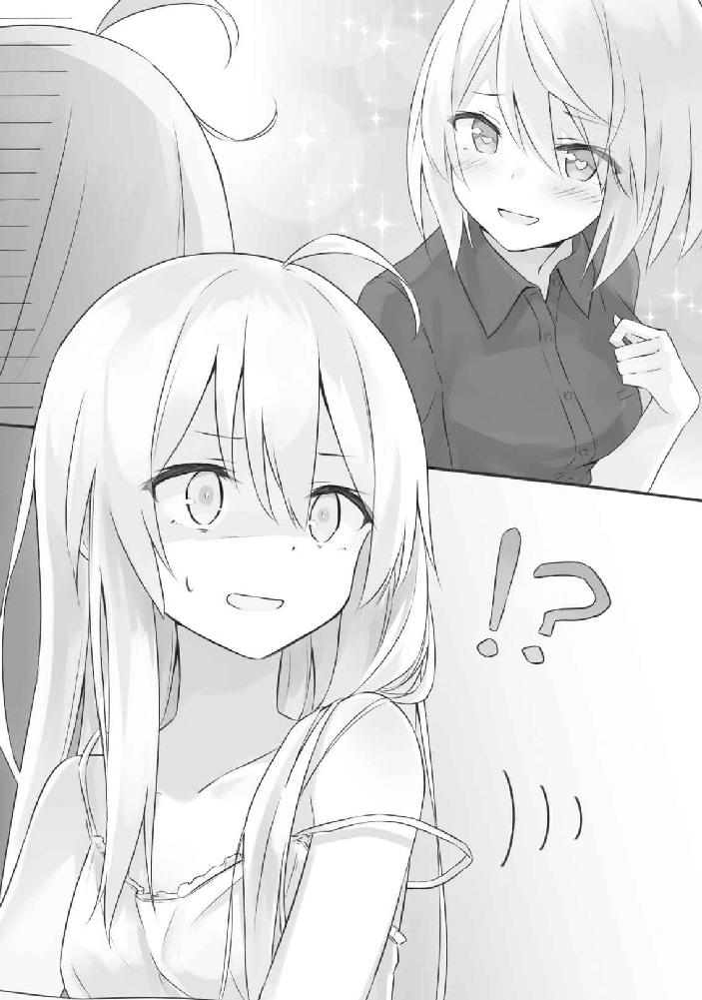
「そういうことではないって言ってるじゃないですか何言ってんですか」
「......あ！ ごめん。もしかしてわたしが攻める方だった？ そうよね、イレイナさんってどちらかというと受け身に回りそうな感じだし。気が利かなくてごめんね？」
「もうほんとにやめてくださいおねがいします近づかないでください離れてください怒りますよ」
「あまり、わたし、慣れてないかもしれないけど、頑張るね！」
「そんな頑張りはいりません離れてくださいと言っているでしょうにやめてください」
全力で彼女を拒否する私でした。
このあと彼女の誤解を解くのにしばらく時間を有しましたが、おおよそ見るに堪えないやり取りが繰り広げられたため割愛します。
「......なるほどこんなことが」
パジャマ姿からいつものローブに着替えてから、私は彼女の日記を見せて貰いました。ちなみに着替えたのは単に宿屋を出る時間が迫っているからであり、空白の間に何かよからぬことがあったからだとか、そういったことがあったからなどではありませんのであしからず。
あまり他人の日記を覗き見るのは趣味ではありませんし、特に旅を同行してからは私に関する記述も含まれているだろうと思い、絶対に見たくなかったのですけれど、しかし状況が状況ですし、やむを得ないでしょう。
「............」
私は今一度、昨日の日記を眺めました。
そこにはおおよそ見るに堪えない内容が記されていました。ので、これも割愛。
というか一体何でこんなものが......。
「えい」
破っておきました。「ああー！」と悲痛な声を漏らすアムネシアさんを無視して、私は紙を丸めてゴミ箱にポイしました。
「アムネシアさん、昨日あった出来事の真実を語りますから、よく聞いてくださいね」
私は彼女を見つめ、言いました。「とりあえず大前提として、私とあなたはそういう関係ではありません」
「えっ。そうなの？」
「ええ。だから無理してああいうことしないでくださいね」
「......うん」
「............」
なんで若干物足りなさそうな顔してるんですかね......。
何はともあれ、こうして私は、記憶をたどりながら、彼女に物語を語るのでした。
「ところでこの縄解いてくれない？」
「やです」
○
私たちがこの村を訪れたのは、ちょうど昨日のこの時間くらいでした。
周囲を鮮やかな草原で囲まれたこの村は、朝日を揺らす草花と、ぽつぽつと点在する木々の中にひっそりと存在していました。
村に入った私たちがまず最初に目にしたのは、人だかりです。
「......何かのお祭りでしょうか？」私は首をかしげ。
「楽しそうね。いいじゃない！」アムネシアさんは妙に高揚しておられました。
ちなみにこの日のアムネシアさんはまともなアムネシアさんでした。
人だかりにはおおよそこの村の全人口が集中しているのか、そこ以外に人は見当たらず、私たちは結局、まっすぐにその中に紛れました。
ぐるりと円を描くように集まった村人たちの視線は、「やったれ！」だとか「お前ならできる！」といった激励とともに、その中心へと集まっていました。
「うおおおおおおおおおおおおっ！ 俺が！ 俺がやるんだ！」
そこには、台座にぱくりとその身を咥えられた一本の剣がありました。やたらと造形の細かい一本の両刃剣は、男が顔を真っ赤になるほど全力で引っ張り上げているというのに微動だにしていませんでした。
儀式めいた何かが行われていることはこの一瞬でよく理解できました。
「......駄目だ！ 時間じゃ。そこを離れよ」
やがて傍にいたおじいさんが男を剣から引きはがしました。「次！ 誰かこの剣を引き抜ける者はおらんか！」
とおじいさんが声を張り上げます。我こそは我こそはと輪の中から次々と手が挙がりました。
「ふむ......どいつも冴えん者ばかりじゃな......」品定めするようにおじいさんは周囲を見渡します。
そして。
ちょうど私とアムネシアさんのところで、その目は留まりました。
「む？ 見ない顔じゃの。どなたかな？」
おじいさんは私たちに歩み寄りました。
「灰の魔女イレイナと申します。旅人です」と私はぺこりと首を垂れ。
「アムネシアと申します。同じく旅人です」とアムネシアさんは会釈して、「これは一体何のお祭りですか？」と単刀直入に尋ねていました。
おじいさんは「ほう......旅人、か......」と意味深に頷いていました。
「今やっておるのは祭りではないぞよ、お嬢さん方。これはこの村を救うための儀式じゃ」
「どういうことで？」
おじいさんは首をかしげていた私に応えます。
「近頃のう......、この村の近くに飛竜が住むようになったのじゃよ。そしてその飛竜は厄介なことに、生贄としてこの村で最も若く美しい娘を寄越せと要求してきたのじゃ」
わあ何ともありがち。
「しかし心配には及ばん。かつて、この台座から剣を抜くことのできた勇者が飛竜を薙ぎ倒したという言い伝えがあるのじゃ。言い伝えに則り、剣に選ばれた者に飛竜の退治をお願いしたく思ってのう、それで村人たちを集めておるのじゃ」
わあ何ともありがち。
もはや御伽噺や童話で使い古された様式美といえました。
「お主らもどうじゃ？ 記念に剣を引っ張ってみんか？ まあどうせ無理じゃろうが、まあ、思い出にはなるじゃろうよ」
ふぉっふぉっふぉ、とおじいさんは軽く笑って、手招きをひとつ。
「イレイナさん、やれば？」いたずらっぽい笑みを浮かべながら私を肘で小突くアムネシアさんでした。
......まあ、別にいいですけど。
それにちょっと気になりますし。
私はあっさり快諾して、剣が真っ直ぐ突き刺さっている台座へと向かいました。「これを引っ張ればいいんですよね」
そして私は柄を軽く握りました。
はてさて抜けるのでしょうか。まあどうせ無理でしょうけどねー。
「じゃ、やりますね」
そして私は、手に力を込めました。
「..............................あ」そして直後に気付きました。ああこれは不味いと。
明らかに私の力によって剣が台座から離れようとしているのです。このまま力を籠めればごく普通に抜けてしまうことは火を見るより明らか。
それはつまり私が勇者となり飛竜を退治することを意味していました。
私はちらりと辺りを見渡します。彼らは幸い、まだ私の異変に気付いていないようで、「君ならやれる！」とか「世界一可愛いよ！」だとか、激励の言葉を飛ばすばかりです。
大丈夫です。まだ気づかれていません。
「............」
このとき私の頭に悪魔がやって来ました。『とりあえず力抜いて、抜けなかった振りをしちゃいましょう？ 飛竜退治とか面倒くさくありません？』なるほどなるほど。『いえ、お待ちください』ああ天使がやって来てしまいました。『ここはひとまず剣を抜いて、飛竜退治に向かう振りをしながら質屋に剣を売っ払うのはいかがでしょう？』天......使......？
「............」
結局私は悪魔の主張を全面的に擁護することにしました。「いやー、すみません。やっぱり抜けなかったですねー」
へらへらと笑みを浮かべながら戻る私を、おじいさんは朗らかに迎えました。
「それもそうじゃろうよ。この剣は代々、純粋かつ心優しくて、噓が言えない正直者で、自分より他人を優先しがちで、虫も殺せないほど人間的に素晴らしい者にしか抜けんのだからな」
おっともしかして私、喧嘩売られてます？ というか虫も殺せないくせに飛竜は殺せるんですか。なんですかそれ。
「まあそのような者でもない限り、この村の窮地を救うことはできんということじゃ。余所者の旅人にはそうそう──」
「あ、抜けちゃった」
おじいさんの言葉を遮ったのは、アムネシアさんの間の抜けた声と、すぽーん、という間の抜けた音でした。
いつの間にか私と交代して行っていた彼女が、いつの間にか剣を抜いてしまっていました。
「......もしかしてわたしが勇者？ やだ照れるなぁ」
などと恥ずかしそうに笑う彼女に村人たちはいたく興奮して騒ぎ立てました。うおおおお、と盛り上がる民衆でした。
つまり。
旅人の彼女が、飛竜を退治することを、任されてしまったのです。
「............」
「............」
私と村長さんは互いに表情を失った顔で彼女を見つめていました。
○
飛竜退治を任されてしまったのであれば仕方あるまい。というわけで、私たちは旅の寄り道として飛竜が住む祠を目指すことにしました。
が、その前に荷物がそれなりに多いので、宿屋を探すことにしました。村といっても最低限の規模と余所者を迎え入れる最低限度の余裕はあるようで、村には一軒だけ宿屋がありました。
「こんにちは！ 昨夜はお楽しみでしたね？ 宿屋へようこそ！」
とっても奇妙なごあいさつを飛ばしてきたのは宿屋の店員さん。とても美人な方でした。お名前はラナというそうで、この村で一番の美人さんだそうです。自分で言ってました。自分で言うな。
しかし、
「......ということはもしかして、飛竜に狙われている方ですか？」
「......それは、まあ......そうですね......」
なぜか恥ずかしそうに頰をかくラナさん。照れておられます。照れるな。
「旅人さん方、本当にありがとうございます。お詫びとしては少々お粗末かもしれませんけれど、今回の宿泊費は無料でご奉仕させていただきます。もちろんこの宿屋で最も高いお部屋で泊まっていただきます！」
嬉しい申し出でしたがこれから飛竜退治をさせられるという面倒くさいイベントを思うと憂鬱で仕方ありませんでした。
「マジ？ やったぁ！ イレイナさん、無料だって！」
アムネシアさんは素直に喜んでいましたけれど。
「聞こえてます。知ってます」
私はため息交じりにラナさんから鍵を受け取り、お部屋へと向かいました。
「すごい......！ ここが最高級のお部屋！ 見てイレイナさん！ ベッドが！ ふかふか！」
最高級と謡っているだけあって、確かに鍵を渡されたお部屋の中は豪奢そのものでした。いつか森の中で見つけた宿屋で寝泊まりしたお部屋のように、馬鹿みたいに広い一室にはベッドやソファ、それにテーブルといった最低限の家具のほかにも謎の壺や謎の鎧や謎の絵画などの姿もありました。どうしてお金持ちってこういう無駄なものを部屋に置きたがるんですかね。謎です。
そしてベッドが一つしかないのも謎でした。どうしろと？ 片方はソファで寝てろとでもいうのでしょうか。
されどこの高級感溢れる一室にはやや不釣り合いのものもあって、なぜかテーブルには一冊の真新しい本がぽんと置いてありました。
「............」
開きました。
そこにはありとあらゆる人々の筆致がありました。「彼氏と久々のデート」だとか「今日は忘れられない一日になった」だとか、「街でナンパした子と来たぜ」だとか、あるいは「先生と二人で来ました」とか。
............。
なるほどどうやらここは男女が泊まることを前提としたお部屋のようです。
......なんでここに私達を泊めさせたんでしょうね？
「一緒に寝る？」ベッドに寝そべりぽんぽんと傍らを叩くアムネシアさん。
「ソファで寝ます」
「え、一緒に？」
「............」
戯言はスルーしました。
まあ飛竜退治から帰って来たらどちらがベッドで寝るかを考えればいいですね──私は問題を後回しにしながら、ベッドに荷物を放りました。
「アムネシアさんも最低限の荷物だけにしたほうがいいですよ」
「何を持ったほうがいい？」
「伝説の剣とやらだけでいいんじゃないですかね」
どうせすぐに退治できることと思いますし。
よくよく考えてみれば飛竜を秒殺してそのまま村から出れば何も問題はないですしね。
「旅人さん！ どうかお気を付けください......！ わざわざ私のために、本当に、すみません......」
出発の直前。
ラナさんは私たちの身を案じ、お酒を用意してくれました。曰く「飛竜に酒を飲ませれば酔って簡単に倒せるはずです！」と謎に都合のいい攻略法まで教えてくれさえしました。本来ならば自分が生贄として飛竜の元へと行かなければならなかったことへの責任感からか、「私の振りをすれば飛竜を誤魔化せるかもしれません！」と私服を貸してくれもしました。それとついでに「飛竜と対峙する直前にこれを読んでください」と手紙も渡されました。
「............」
私は渋々、ラナさんの服に着替えて村を出ます。
手筈としてはこうです。
ラナさんの振りをした私が飛竜の元へといき、なんやかんやで酒を飲ませる。酔っぱらった飛竜をアムネシアさんがなんやかんやで倒す。
なんやかんやで無事解決。......以上が、村の人たちの考えた作戦でした。
「うん、この作戦なら絶対うまくいくわね！」
「............」
私が魔法をぶっ放したほうが早いのではと思いましたが面倒くさかったので黙っておきました。
飛竜が住む祠は村から数時間ほうきで飛んだところにありました。
周りには何もない平原でした。ただアーチ状の入り口がぽっかりと口を開けており、さあどうぞ中へと私たちを誘っているかのよう。
とてもとても古くからここにあるのでしょう。祠を形作るレンガは年期によってひび割れ、黒くくすんでいました。
まるで廃墟のようにも見えます。
だからこそほんの少し不気味で、紛れもなくこの奥に何かが住み着いている雰囲気がありました。
「イレイナさん......わたしがピンチになったら、魔法でどうにか助けてね」
「いやです」
「ひどい」
アムネシアさんは泣きました。
が、私はそれをスルーしつつ、そういえばラナさんに託された手紙を読むタイミングは今なのではと思い至りました。
ので、開きました。
『ラナです』
知ってます。
『この手紙を読んでいるということは、恐らくあなたは飛竜の祠に着いたということなのでしょう』
だってそのタイミングで読めって言ってたじゃないですか。何ですかそのシリアスな導入。
『実は折り入って相談がありまして......、あのですね、実はですね──』
と、このあたりまで読んだところでアムネシアさんが勝手に突っ走りました。
「飛竜！ お覚悟を！」
「ちょっと......！ 勝手に行かないでください！」
私はアムネシアさんを追いかけながら手紙を読みます。というか作戦はどうなったんですか。何ですか。村の人たちが立てた作戦すら忘れちゃったんですか。おばか。
祠の中を突っ走るアムネシアさん。そして私。
涼しさを通り越して寒気すら感じる薄暗い祠を突き進むと、扉が一つありました。
「おりゃあああ！」
彼女はそれを目視。直後に蹴り飛ばしました。今の彼女は心の準備をする時間すら与えない無慈悲さと頭の悪さを兼ね備えておられるようです。多分自らが勇者であるという現状に若干テンションが上がっているのだと思います。
「......何者だ」
扉の向こうは暗黒。
明かりのない世界の中から、不気味な声が漏れてきました。
「我の眠りを妨げるとは──愚かしい人間め。万死に値する」
暗闇の中でなにかが蠢く気配がありました。
一体そこに何がいるのかは見えません。けれどお怒りしておられるのはよーく分かります。
......もう村の人が作った計画は実行不可でしょう。今からお酒を与えたところで素直に飲んでくれるわけがありません。
「......仕方ないですね」私はラナさんの衣装を脱ぎ去り、いつものローブに早着替え。こんなこともあろうかと下に着込んでいたのです。
そして私は、杖を持ち、魔法を放ちます。
それはただの光。
杖の先が眩しいほどに光輝き、暗闇を照らします。
と、そこでラナさんから贈られた手紙の続きが見えました。
『飛竜を殺したりしないで欲しいのです。あの飛竜は酒に酔うとすぐに寝るので、眠ったまま村にこっそり連れ帰ってほしいのです』
そのような文面が綴られていました。
「......なんだお主ら。女か。てっきり我を殺しに来た勇者かと思ったぞ」
呆けた声を漏らしたのは、祠の中に引きこもっていた飛竜さん。
飛竜という名を冠しているわりに、その姿は人間そのもので、歳もかなり若く見えます。まるでただの人間。ただの女の子。人と違う点を探すことのほうが難しく、違う点があるとすれば、背中から翼が生えていることくらいでしょうか。ああ、それと頭に角が生えています。そのくらいです。
「............」
ところでラナさんが綴った文面には続きがありました。
このように。
『それは私の恋人です』
と。
............。
女みたいですけど？
○
飛竜さんを眠らせて連れ帰ってほしい、というラナさんの要望を私は無視して、飛竜さんをそのまま村に連れ帰った私は、憤る村人たちさえも悉く無視して、ラナさんを連行しました。
「......どういうことですか？」
私たちが泊まる最高級のお部屋にて事情聴取は執り行われました。
「え？ どういうこととは？ 私と飛竜ちゃんの馴れ初めに関して詳しく知りたいということでしょうか？」
うふふ、とラナさん。
「まあ有体に言えばそういうことになりますね」
「それは話せば長くなるんですけど──」
「あ、簡潔明瞭にお願いします」
「............」
ご機嫌を損ねながらも、ラナさんは語ってくれました。曰く、彼女と飛竜さんが出会ったのはごく最近のこと。
村の外を散歩していたら罠にかかって死に掛けていた飛竜さんを見つけたそうなのです。飛竜さんはとても弱っておりました。
宿屋に飛竜さんを連れ帰った彼女は人の目を忍んでこっそりと看病しました。
ちなみに罠とは脚をぱっくり挟むぎざぎざした刃のアレのことであり、なるほど飛竜さんとはほどよく間抜けなお方のようです。
元気を取り戻した飛竜さんは祠へと帰っていきましたが、
「......我はこの娘のことが忘れられなくてな、その......なんというか......、好きになっちゃった」
だそうです。飛竜さんは赤面しながらそのように証言してくれました。
しかし飛竜と人間の娘の恋愛など、村の人が許してくれるはずもありません。二人は人の目を気にしながらこっそりと逢引しました。
「だがな、やがて我は思ったのだよ。やはり彼女と四六時中一緒にいたいとな。もうちょっと堂々といちゃいちゃしたいとな！」
なぜだか語気を強めていましたが要するにそういうことらしいです。
なので飛竜さんは今回、このような作戦を立てたといいます。
「まず我が娘を連れてくるように村を脅迫するだろ？ そしたら村の人間が娘を連れて来るだろ？ するとどうなると思う？ そう。結婚だ」
意味が分かりません......。
私の表情でなにかを察してくれたようで、ラナさんが補足してくれました。
「要するに『飛竜が娘を食うために村人を脅して連れて来させたが、娘は案外可愛くて優しくて惚れてしまい、娘に絆されて飛竜は今までの非礼を詫びて人間と一緒に住むようになった』という流れを作ろうとしたのですよ」
なるほ......いや......意味が分かりません......。
「そもそもそのような流れになっていなかったじゃないですか。伝説の剣とやらはいったい何だったんです？」私にはそれが疑問で仕方ありませんでした。
するとラナさんは激昂しました。
「そうなんですよ！ それが問題なんです！ なんですかあの剣！ アレのせいで私、堂々と祠に行けなくなっちゃったじゃないですか！」
ラナさんによると、本来ならばラナさんが直接赴いて、頃合を見計らって村に二人で戻る手筈となっていたようです。
しかし村には伝説の剣があり、心優しい村人たちはラナさんを救おうとしてしまったために事態はややこしくなったといいます。
「ということで、ひとまず作戦変更するために、お酒を飲ませて眠らせることにしたんです」
まあ結局それもかなわなかったみたいですけど──とラナさんは嘆息を漏らしました。
つまり二人の作戦は悉く失敗に終わったということです。
「つまり今、とってもマズイ状況にあるってことでいい？」
アムネシアさんが話をテキトーにまとめました。まあそういうことですね。
「......そういうことです。どうしよう......」ラナさんは頭を抱え。
「我、ここで死ぬのか......？」飛竜さんも頭を抱えました。
「............」私は黙して二人を見つめ、しばしの合間をとってから、言いました。「ところでラナさん。この宿屋、二人部屋ってありますか？」
「えっ？ ここがそうですが？」
「ベッドが二つある部屋があるかどうかを訊いているんです」
「それは、まあ......ありますけど」
「なるほど」私は頷きました。
そして随分と勿体つけてから、私は言います。
「私たちが泊まる部屋をそちらに移してもらえるのなら、いい方法がありますよ──アムネシアさんの協力が不可欠になりますけど」
「......？」
アムネシアさんはただ首をひねって私を見つめていました。
「わたしは別にこのままの部屋でもいいけど？」
「............」
作戦は私が無理やり決行させました。
○
宿屋から出た私とアムネシアさんを待っていたのは、村人たちの猛抗議でした。
彼らは台座を取り囲んでいたときのように私たちを中心にしてぐるりと円を描き、好き放題に文句を飛ばしました。「ふざけるな！」だとか「どうなっているんだ！」だとか、あるいは「飛竜をさっさと殺せ！」だとか。
おやおやまあまあ。とってもお怒りですね。
「皆さん落ち着いてください。飛竜は無害なのです。あれは人に害を成したりはしません」
「何を馬鹿なことを！ あの飛竜はラナを村から攫おうとしたのじゃぞ！」村長さんは私を睨んでいます。
村長さんに応えたのはアムネシアさんでした。
彼女は伝説の剣を片手に持ちながらも堂々と語りました。
「よく考えて頂戴。あれの見た目はただの娘っ子よ？ 人を食ったりなんてできると思う？」
「人間の姿に化けているだけかもしれぬではないか！」
「それはないわね。──あれは間違いなくただの寂しがりで、本当は人を食う気なんて最初からなかったのよ。本当は人間と仲よくなりたかっただけみたいよ」
「なぜそう言い切れる！」
「わたしたちは飛竜と会ってきちんと話したからね。あなたと違って」にっこりと笑うアムネシアさん。反論の余地を許さない鉄壁の笑みでした。
「......ぐ、いやしかし、お主らが噓を言っている可能性は──」
「それもないわね」
ぴしゃりと村長さんの言葉を遮り、アムネシアさんは言います。「だって──わたしにはこれが抜けたもの」
と。
そして片手に持っていた伝説の剣を掲げたのです。
それは代々、純粋かつ心優しくて、噓が言えない正直者で、自分より他人を優先しがちで、虫も殺せないほど人間的に素晴らしい者にしか抜けない代物。
噓をついていないという何よりの証拠ではないでしょうか。
......まあ心が濁っていて噓つきで他人より自分を優先しがちで人間的に腐っている私でも抜けたので伝説は眉唾そのものだと思うのですけれど。
「............」
以上が私の思いついた作戦でした。
そして迷信を信じて剣を引き抜こうとしていた彼らは、やはり剣を引き抜いたアムネシアさんの言葉には靡いてしまうようで、
『......なるほどぉ』
と彼らの輪から低い呻き声のような感嘆が漏れました。
伝説や迷信。小さい村に住む彼らにとってそれが及ぼす影響力といったらそれはもう絶大そのものでした。
......この剣使って色々と金儲けできそうですね。
このタイミングで私の頭の中に悪魔が再びやってきました。『アムネシアさんに頼んで演技してもらえばこの村から金目の物を根こそぎ奪いとることも可能なのでは？』なるほどなるほど。『いえ、お待ちください』そして遅れてやってきたのも悪魔でした。『金目のものだけではなく食料も頂戴しましょう。ついでに伝説の剣は質屋にですね、へへへ......』あの、天使は？ 『死にました』まじですか。
「イレイナさん」
そのときアムネシアさんは私の肩に、ぽん、と手を置きました。「悪いことは駄目だからね？」
「............」
私の頭のあたりでうろついていた悪魔たちが浄化されていきました。
こうしてアムネシアさんは村人たちの説得に成功し、私たちはベッドが二つある部屋へと移してもらえることとなったのでした。ちなみに剣はアムネシアさんの手によって再び台座に戻されました。もう二度とあれが使われることはないでしょう。剣を使う相手はいませんから。
というわけで。
めでたしめでたし。
○
そして夜。
「......あれ？ ないなぁ。うーん」
ベッドが二つあるほうの二人部屋へと移動になった私たち。
アムネシアさんは反対側のベッドの上で、うんうんと唸っていました。
「どうしたんですか？」ベッドに寝そべりながら本を読んでいた私は、アムネシアさんをちらりと見ました。
彼女は、
「日記がどこにも見当たらないんだけど......」
「えっ」
私は飛び上がっていました。「ちょっ......よく探しましたか？ ベッドの上は？ 上着は？ バッグの中は？」
あんな大事なものをなくしてしまうなんてとんでもない。
彼女の今までの旅路を教える上での最重要アイテムだというのに、一体どうしてこうもすぐになくしてしまうんですか。日記が大事なことすら忘れてしまうものなんですか。
私も慌てて彼女の日記を探しましたが、しかしまるで見当たらず、部屋のあちこちをひっくり返しながら夜は更けていきました。
やがて、
「まさか──さっきの部屋に忘れてしまったのでは？」
と、ひとつ思い至るのでした。
ここにないということは即ち別の場所にあるということに他なりませんから。
「それだわ！」アムネシアさんは指をぱちんと鳴らしてそのまま部屋から豪快に出ていきました。
ああ、そういえば私たちが部屋を移るとき、飛竜さんとラナさんはあのまま最高級の部屋に残るなんて言ってましたっけ、などと記憶をたどりながら私は待ちました。
それから数分後でしょうか。
「............................................................................................................ねる」
と、扉を開くアムネシアさん。
手で触れたら火傷しそうなほどに顔を真っ赤にしながら彼女は帰っていました。
「......日記はあったんですか」
「........................あった」
「......なにがあったんですか」
「........................わたし、なにも、みてない」
「何か見たんですね」
「........................うううううううう」
彼女は言葉にならない言葉をあげながらベッドに潜り込み、「わたしもう寝るから！ 寝るまで起こさないで！」などとわけのわからない言葉を発しながら毛布の中でもぞもぞと蠢きました。
......あの二人はいったい何をしていたのでしょうか......。
まあ知りたくもありませんけど......。
無事回収された日記はテーブルの上に置かれました。
「............」
私は本を読みふけりながら、彼女が寝息を立てるのを待ちました。
ちなみに私が今読んでいるのは厳密にいえば本ではなく日記。この部屋に泊まった人々の記述がなされています。どうやら最高級のあの部屋とは違い、この部屋に泊まる人々は旅人や冒険者が大多数のようで、この近隣の国に関する有益な情報や面白い話を載せてくれているようなのです。この部屋に泊まった方は皆さんどうにも親切であるようで、ためになる情報ばかり。一方で恥ずかしげなことも平然と書いてしまっている旅人さん方でした。
なにやらむず痒さと便利さが同居した混沌とした日記でした。
が、アムネシアさんと私の進むべき先である信仰の都エストに関する情報は一切ありませんでした。やはり雲隠れした国はそうそう易々と情報を漏らしてはくれないようです。
............。
私はペンを手にとり、真新しいページを開きました。
これを読んだ誰かがいつかどこかでふいに思い出してくれるかもしれませんから、せめて退屈のない話を書くこととしましょう。つまらない話やためにならない話はすぐに記憶から抜け落ちて忘れてしまいますからね。
たとえば今日起こったことを面白おかしく綴ってみるといいかもしれません。
私がそれを書き終えた頃には、アムネシアさんの寝息が立ち始め、私もほどほどに眠くなっていた頃合でした。
ですから私はそのままベッドに潜り込みました。
そのまま眠りへと落ちるまで、さして時間はかかりませんでした。
○
「昨夜はお楽しみでしたね？ どうもありがとうございましたー」
例の妙な挨拶を飛ばすラナさんに軽くお礼を言ったのちに私達は旅路へと戻りました。ちなみに隣には飛竜さんの姿があります。何だったら手をつないですらいました。
......仲がよろしいことで。
ほうきに私が乗り、アムネシアさんが私に抱き着く形で後ろに乗ります。
二人横並びになりながら、私達は信仰の都エストへの旅路をゆきます。
きっともうすぐ、彼女の記憶は元に戻ると信じながら。
「でも、じゃあ私の日記の最期のページは何だったの？」
ほうきの後ろから彼女は言います。「あれ、とんでもないこと書いてあったんだけど......」
まあ大方、飛竜さんかラナさんのどちらかが、アムネシアさんの日記と部屋に備え付けの日記を間違えて書いてしまったと思うのですけれど......。
そのあたりのことに関しては私から今の彼女に語ることはありませんでした。
「何でしょうね？ ちょっと分かんないです」
とりあえずその場しのぎ程度に笑いながらそう答える私です。
「噓だー。絶対イレイナさん何か知ってるでしょ」
ぐいぐいと私を押すアムネシアさん。ややご機嫌斜めなのか、ちらりと横目で彼女を眺めると、頰を膨らませている彼女がいました。
「まあ記憶を取り戻したときに分かりますよ」
「いま教えて」
「やです」
「教えて」
「やです」
なんて。
くだらないやり取りを交えながら、私達は道を進み続けました。
もしもアムネシアさんに記憶が戻ったときに、あの村に訪れて、私が綴った日記を読んだら、もしもそんなことがあったら、きっと彼女はまた赤面してしまうのだろうなと思いながら。
少女二人を乗せたほうきが春の平原を進んでいました。
ゆるゆると頼りなく左右に振れながら進んでいました。
「で、本当にこっちで合ってるんですか？」
黒のローブに三角帽子。胸元に星をかたどったブローチをつけた魔女は、隣に座る少女に問いかけていました。両手に広げられた地図が指し示す通りであれば、ここをずっと進んだ先に信仰の都エストがあるはずです。が、その姿は一向に見えてきません。
魔女の横に並び座る少女は地図をのぞき込みながら応えました。
「んー。たぶんそうなんじゃない？ 『このへん！』って丸印してあるじゃん？ つまりそーゆーことなのよ」
「つまりどういうことですか」
地図には確かに少女の言う通り『このへん！』と記してありますが、それに倣うとすでに印の中に入ってさえいます。つまりここが目的地ですか。そうなんですか。平原ですけど。青空と原っぱが広がるばかりで何もありませんけどそうなんですか。馬鹿ですか。
などと。
あれこれ言いたくなるのを抑え、
「......とりあえずもう少々進んで考えればいいですかね」
といった風に大人ぶって平静を装う彼女はいったい誰か。
そう、私です。
「そうねー」そしてこれがアムネシアさんという方です。「ま、なんとかなるでしょ。たぶん近いっぽいし」
「............」
絶望的なほどに能天気でアバウトな性格をしておいででした。
行動を共にして一週間そこそこになりますが、しかし眠り、醒めれば記憶を失ってしまう彼女ですから、どれだけ仲よくなっても、互いの関係性に何の進展も感じられませんでした。
しかし、それでも尚、私たちが乗ったほうきは進み続けます。
信仰の都エストへと。
「んふー」彼女がそれから私に抱き着いてきたのは本当に突然のことでした。
がたん、とほうきがより一層揺れ、振り落とされそうになります。
「なんですかセクハラですか。上等ですね」体勢を整えたのちに一言。私はだいぶ目つきが悪くなっていたと思います。
「いやあほうきが揺れるから。抱き着いたほうがいいかなって思って」
真顔で何言ってんすか。
「あなたが抱き着けばもっとほうきが揺れますよ」
「じゃあもっと強く抱き着けってことね？ なるほど！」
マジで何言ってんすか。
「そうなるといよいよほうきが制御不能なレベルで暴れますが」
「何。イレイナさんのほうきはイレイナさんとわたしがいちゃつくと怒るの？」
「ほうきというより私が怒ります」
「あ、もしかして照れてる？ かわいい」
「............」
出会って数日がかりでようやく気づきましたがどうやら彼女は元来からこういう能天気な性格らしく、毎日出会いと別れを繰り返しているわりにはそれを気にしている素振りをまるでもって見せませんでした。
............。
まあ要するに関係が進展しないといいつつ、そもそも私たちの距離は最初からだいぶ近い場所にあるというだけの話なのでした。
「イレイナさんあったかいー」
「......はあ」
どうでもいいですけどいつまでくっついてるつもりなんですかね。
私は嘆息ひとつ漏らして、ほうきの先を見据えました。
そして私たちは、森へと入ります。
「......あれ？ 寒い」
それからしばらく森を進んだのちにアムネシアさんは私から離れ、怪訝な声をあげていました。
彼女の体温が私から剝がれた直後に、私たちにできた隙間に風が流れこみ、彼女の温もりを消し去ります。
春先というのに、先ほどまでは陽気にあてられていたというのに、風はいつしか真冬のもののように冷たく凍えていました。
陽の光が多少遮られただけではこうはなりません。
「......寒いだけじゃないみたいですよ」
わずかな違和感に気付いた頃には、既に、私たちは異空間へと迷い込んでいました。
雪が降り始めたのです。
息は白く濁り、小さく冷たい粒がふわりと舞って横を通り過ぎていきます。頰にかかった雪はすぐに溶けてなくなり、雫となって流れます。
まるで冬の森そのものでした。
「どういうこと......？ 異常気象にしても極端じゃない？ こういうことって結構あるの？」
「............」私はゆるりと首を振ります。「いえ、あまり聞きませんね......」
通り過ぎる景色を見渡してみても不思議なもので、すべてが白に包まれてしまっていました。地面を覆うのはわずかな陽の光にあてられた青白い雪。何の痕跡も残さず穢れの一切をこちらに見せてはいませんでした。
雪化粧のなかで木々は時折、思い出したように首を傾けては雪を落としています。そうして白一色のなかに生まれた緑も、絶え間なく降り注ぐ雪がまたしてもへばりつくばかりでした。
初春の森の一角に、真冬がありました。
「魔法を使えば、こんな現象を作り出すことは可能でしょうけど......」
しかし考えれば考えるほど不思議なのです。
このように気象を変えるような魔法を使う場合、相応の魔力を必要とするはずです。一体何を目的としてこのような景色を作り出したというのでしょうか。そのメリットがわかりませんでした。
「冬が好きなのかな？」ぼやーっと空を見上げながらアムネシアさん。
「......あら」私が彼女に応えようとしていたときでした。
森の向こうが──光が一層に差し込んでいるのが、見えました。
「まあ、あとで訊けばいいですね」
などと楽観しながら。
そんな風に、目の前の景色を軽んじながら、私たちはほうきで森を抜けたのでした。
私たちの想像がすべて誤りであったと知ったのは、その直後です。
「......なにこれ」
私が止めたほうきを降りて、アムネシアさんは呆けました。
「............」
そして私も、彼女に並びます。
森の向こう──切り開かれた地には、国がありました。
国であったであろう場所がありました。
「......少なくとも冬が好きなわけではなさそうですね」
そこには。
人も建物も、すべて例外なく氷に覆われた地がありました。
○
森が白なら街は青でした。
地面は分厚い氷がまんべんなく覆っており、力の込め方一つ間違えただけでつるりと転んでしまいそうです。雪が降ってはいるものの、氷にまとわりついてはすぐに溶けてなくなってしまっていました。だからか氷はほんの少しだけ濡れていて、つまり地面はほどよく滑って非常に歩きづらいです。
大通りにはおそらく人が往来していて、そして両脇には背の高い建物が一様に並んでいたのでしょう。今となってはそれらはすべて氷の中ですけど。
「この人たち、生きてるのかな......」こつん、と道のど真ん中で凍っている人の額を叩いてアムネシアさんは言いました。
「魔法で凍らされたのならばまだ生きている可能性はありますね。魔法の氷は時間を止める意味合いも含まれているんですよ」
「えっと......つまり？」
「氷の中で生きている可能性が高いということです」
「......なにそれ魔法便利すぎない？」
「魔法なんですから便利で当たり前じゃないですか」
「そういうもんなの？」
「そういうもんなんです」
氷漬けの街は森の中よりも遥かに寒く、空気までもが凍っているかのようでした。
さすがにこのような怪奇現象に見舞われてしまっていては、私たちも素通りすることはできませんでしたし、そもそも「あれ？ もしかして実はここが信仰の都エストでしたー、とか、そういうオチじゃないですよね？」という不安がぬぐい切れなかったために、私たちは街の調査を余儀なくされました。
「......つってもどこもかしこも凍ってるだけで何もないじゃないのよー！」
やーだー！ と私の同伴者が音を上げたのは調査開始から十分少々経った頃でした。ちなみにその十分少々の間に彼女が滑って転んだ回数はおよそ十回少々。
「おしりわれちゃう」
なんか戯言おっしゃってましたがこれにはスルーしました。
「ほらしっかりしてください。はい、立って」尻もちついている彼女の手を引き、私は立たせました。
「......いたい」とアムネシアさん。
「なに涙目になってんですか。あなた騎士か何かでしょう？」恰好からして。
「騎士でも痛いもんは痛いのよ！」開き直る彼女でした。「ま、自分が騎士だったかどうかも覚えてないけどね？」
「そういうのは反応に困るんでやめてもらえませんかね......」
「べつに気にしなくていいわよ？ どうせ昨日のわたしも同じようなこと言ってたでしょ？」
「昨日どころか毎日言ってますけどね」
「明日以降も言うからよろしくね？」
よろしくされたくないお願いでした。「......はあ。そんな体たらくなのにどうして騎士の恰好なんてしてるんですか」
「それはこれを着たときのわたしに聞かないと分からないわね」
やれやれとアムネシアさんは肩をすくめました。
彼女はどうやらご自分の境遇というのにさほど興味がないようで。
記憶がなくてもこれほど朗らかになれるのですから、以前の彼女はきっとこれ以上にアレな性格だったのでしょうね。
「とりあえず王宮に向かいましょう」私は彼女のお尻にこびりついた汚れを払いながら言いました。
「何かあるの？」
「何があるかわからないときは大抵王宮に行けば分かるものですよ」
と私は立ち上がります。
幸いにも王宮はこの道をまっすぐ行った先に鎮座しておられます。
例によって氷に包まれていますが、しかしあそこからならば、この国の全景が見渡せることでしょう。
「それにしてもこの国の人たち、なんだか変よね」
しばらく道を歩いていると、アムネシアさんは氷漬けの誰かを指でなぞりながら、言いました。「みんな何かに怯えてる」
すれ違う人々──の氷漬けになった像は、確かに彼女の言う通り、まるでおぞましいものでも見たかのように表情を歪ませていました。誰かは地を蹴っている最中に凍っており。誰かは地に這いつくばり。誰かは悠然と立ち向かったまま。そして誰かは絶望に支配されていました。
きっと望んだ末にこのような永久凍土に閉じ込められたわけではないのでしょう。
それくらいは、道を歩いているだけでも十分すぎるほどによく分かりました。
「それに、ほら、見てよ。この氷ね、溶けないのよ」アムネシアさんは白い指先を私に見せつけました──一切濡れていない、乾いた指です。「さっき、ちょっと気になって刀で叩いたりしてみたんだけど、傷一つつかなかったわ。まるで氷というよりは水晶ね」
「冷たいですけどね」
「じゃあ冷たい水晶」
「............」
私も彼女を真似て氷をなぞりました。冷たい感触がすぐに指先にまといつきました。しかし氷はその冷たさを私に伝えるだけで、決して一切溶けることはなく、かといって指先とくっつくなんてこともありません。指先を離せばごく普通に離れ、氷に触れていたという感触だけを私に残します。
「えい」
試しに杖を出して炎を浴びせてみました。
が、それでも結果は同じでした。私の杖から放たれた火は間違いなく氷をなぞりましたが、それでも溶けません。
相変わらず冷たいまま、そこに氷はありました。
......溶けない氷であるようです。
どうしてわざわざこんなものを......？
「これがただの作り物だったらいいんだけどね」アムネシアさんは言いました。
「......できれば私もそうあって欲しいですけどね」
しかし作り物にしてはあまりにも精巧すぎました。そして何より、この異常気象への何の説明にもなりません。
きっと私たちには知り得ない何かが、この国にはあるはずです。
しかし。
王宮へと辿り着いた私達を待っていたのは、相変わらず氷の中へと閉じ込められているだけの世界でした。
「見事に何もありませんね」
建物ごと凍らされていては中に入ることすらままなりません。つまり何もわからないということにほかなりませんでした。
「ちょっとほうきで上から街を見下ろしてみますね」
私はほうきを取り出し、アムネシアさんを見やります。この街すべてが満遍なく氷で覆われているのであれば、最早この国には何もないということでもあります。
凍っていない場所があったならば、そのときはまた考えることにしましょう。
とにかく私は、早々に諦めてとっとと信仰の都エストへと舵を切るほうがよろしいと思ったのです。
ところが。
「......？ 待って。誰かいる」
そのとき、アムネシアさんの顔色が変わりました。彼女の視線は氷漬けの民家の陰へと。
刀に手を添えながら、彼女はただ一点を睨みつけていました。
私も遅れて杖を出します。右手にほうき、左手に杖を抱えた私でした。
「そこにいるのは、誰？」
彼女が再度声を漏らしたとき、物陰からそれは出てきました。
『..........................................』
名状しがたい何かが出てきました。
それは女性の姿をしていました。黒い髪をだらりと垂らし、その隙間から生気のない瞳が浮かんでいます。服は汚れ、千切れ、ぼろ布そのものでした。
おそらくは魔女であったのでしょう。頭には三角帽子と、胸元には星をかたどったブローチがあり、手には杖が握られています。
何よりも異質なのは、魔女の姿形をした彼女の身体の至る所に氷が生えている点でした。ローブだった布切れの隙間から。あるいは顔や脚から。木に寄生したきのこか何かのように氷の塊が生えていました。
『..........................................』
それは足を引きずりながら、こちらにゆっくりと歩みを進めていました。
「来ないで！」
身の危険を即座に感じとったのでしょう。アムネシアさんは腰に添えたサーベルを既に引き抜いていました。「あなたがどこの誰で何かは知らないけど──それ以上近づいたら斬るわよ」
『..........................................』
それの耳には彼女の言葉は届いていないのでしょうか。
ずるずると片足を引きずりながら、それは尚も歩みを止めません。
「......聞こえなかったようね」
『..........................................』
「あなたがこの国をこんな風にしたの？」
『..........................................』
彼女の言葉は一方的にそれに浴びせられました。しかし返答などなく、ただひたすらにそれは歩み続けます。
じわじわと距離を詰められ、
「何なのよこいつ──」
彼女が後ずさった瞬間でした。
『..........................................！』
それの手が蠢きました。ぞわぞわと虫が這うかのように気味の悪い不自然な動きで杖は構えられ、アムネシアさんへと向けられ。
そして。
線状となった氷が、吐き出されました。
「危ない！」
私がとっさに魔法で吹き飛ばした直後。
アムネシアさんがいた場所には氷柱が出来上がっていました。
「なっ──」おそらくは直撃を受けていたら、彼女も街の住人のようになっていたでしょう。「どうやらこいつが街の人たちを氷漬けにした犯人とみて間違いないようね！」
「そのようで」
私は再び杖を構えます。
既にそれは、攻撃の対象をアムネシアさんから私へと移り変えていましたから。
『..........................................』
それは再び杖を振るい、氷を吐き出します。
まともに受ければ私も氷漬けになること請け合いですから、ひとつひとつ躱しながら、私は杖を振るい、牽制として魔力を固めたモノを飛ばしました。
が、
「......まるで効いてないじゃないですか」
魔力が塊となりそのまま直撃すれば、さすがに死ぬことはなくとも体勢くらいは崩すものです。けれど目の前のそれは何度も何度も何度も何度も魔力が直撃したとしても怯みすらしません。巨大な木に向けて魔法をかけているような無力さを感じました。
『..........................................』
それは依然として私を見つめていました。色のない瞳は深淵のように黒く、感情の一切を感じさせません。
それが一体誰だったモノなのか、一体何を目的としてここにいるのか。
すべてが謎に包まれた現状ですが、唯一言えることは──目の前のあれが、私たちに害をなす存在であることに他なりません。
「............」
私は再度、杖を構えます。「これなら──！」
そして杖から放たれたのは、熱線でした。血も肉も土も氷も空気も、その先にある何もかもを溶かす一本の灼熱が、人のような姿をした何かを一瞬にして覆いました。
眩しいほどの熱量が街のあちこちに飛び散ります。
きっとこれほどの力をぶつけられれば、相手もさすがに無傷とはいかないものでしょう。
そう思っていました。
これで目の前の何かの脅威は去るだろうと。
思い込んでいました。
『..........................................』
けれど。
「──そんな」
ああ、これは駄目だ──と。
勝ち目がないと分かったのは、その直後でした。
気付けば灼熱が凍っていました。人のような何かからこちらへと遡るように、熱線の上に氷が塗り重ねられていました。何もかも凍らせるアレは、熱線さえもそのまま凍らせたのです。
あちこちに飛び散った熱線も。私の杖から出ていた熱線も。そして私の左腕も巻き込んで。
「......ちっ」舌打ちが出てしまいます。左腕は既に私の意志に反してまるで動かなくなってしまっていました。
『..........................................』
そのうえ、人のような何かは、熱線だった氷の陰からそれはひょいと病的な顔を元気に出してしまうものですから腹立たしいことこの上ありません。多少はダメージを負ってくれていると思っていたんですけどね。
まるで効いてないじゃないですか。何なんですか。
「イレイナさん......！」アムネシアさんはとっても情けない顔色で私に駆け寄ろうとしていました。「待ってて！ 今助けるから！」
何を言っておられるのやら。
どうしようもないじゃないですか。熱線すらものともしない氷が相手なんて。
「すみません。私、ちょっと駄目みたいです」
私は右手のほうきを手放し、浮遊させます。
そして新たにもう一本、杖を取り出しました。「ごめんなさいね」
こんなに悲惨な事態で、どうしようもない現状というのに、どういうわけか私はそれなりに冷静でした。
浮遊させたほうきに右手の杖で魔法をかけ、「彼女をよろしくお願いします」とほうきを飛ばします。
ほうきは私の指示を忠実に守り、空を切り一直線にアムネシアさんのもとへと向かいました。
「えっ......？」ぐい、とほうきがアムネシアさんの服を引っ張り、私から遠ざけます。「イレイナさん......？ 何をして......るの？」
「あなたは逃げちゃってください。私はもうダメみたいなので」
もうここから動けないようですし。がっちり固定されちゃってますし。
『..........................................』
何なら今もゆったりと人のような何かが迫ってきてますし。
もうこれ詰みですよ。
「でも、それだとイレイナさんが──」
「いいから」
「でも──！」
そしてほうきは、彼女の言葉を遮るようにぐい、と彼女を引っ張ったまま飛び去ります。
彼女が見えなくなるまで、さほど時間はかかりませんでした。
『..........................................』
人でない何かは、その様子を不思議そうに眺めておいででした。追いかけようとしているのでしょうか。動いているモノを見ると追いかけたくなる性分なのでしょうか。
それとも既に私が戦えないものとして認識しているのでしょうか。
むかつきますね。
私は残った右腕を、それに向けます。
「もしかしてもう私に勝った気でいるんですか？」
私の言葉に、それは振り向きます。思い出したかのように。
『..........................................』
「何か喋ったらどうなんですか」まあいいですけど。「......私、諦めてませんからね。こんな寒いところで終わりだなんて嫌ですよ」
でも、もしもこのまま凍ってしまうのならば。
このまま私がこの街のように──人々のように永遠のものとして残ってしまうのならば。
せめて少しくらいは見栄えよく居たいものですよね。
「今からそれなりに暴れますから、覚悟してくださいね──」
そして私は、魔法を放ちました。
あとはよろしくお願いします──と、どなたかにお願いをしながら。
●
「待ってよ......！ 離して！ 離してよ！ このままじゃイレイナさんが......！」
わたくしは重すぎる荷物を引っ張りながら空を漂っておりました。
冷たい空気のなか、じたばたとわたくしの先っぽで彼女はローブの首根っこを引っ張られたまま。まるで親猫に連れられる子猫のよう。
「この......！ こんなほうきなんかに......！ うううう」彼女は手をばたつかせてはローブとわたくしを引き離そうとしましたから、わたくしはひたすらに蛇行させて飛び回ることで拒み続けました。というかこんなほうきとは失礼極まりないですね。何様でございますか。
わたくしの身体に異変が起こったのは、それからしばらく飛び続けて、イレイナ様より十分すぎる程度に距離をとった頃のことでございました。
まさに頃合。
「落ち着いてくださいませ。アムネシア様」
わたくしはアムネシア様を地面にぽいと投げてから、地におりました。彼女は本日何度目かのしりもちをつき、わたくしはごく平然と穂先を下にして直立します。
その直後にはわたくしの姿はただのほうきから別の姿へとなり替わっておりました。
「......え？ イレイナさん？」と。
アムネシア様は涙目でわたくしを見上げて、呆けていました。
「ほうきでございます」
「え？ いや、でも......？ あれ？ あ、髪色が......違う」呆気にとられた彼女の頭の上で疑問符がいくつも浮かび上がるのが目に見えるかのようでした。
確かにわたくしの髪は桃色で、イレイナ様は灰色で、しかしそれ以外に違いというものは殆どない故、こうして見間違われるのも無理はないかと存じます。
「先ほどイレイナ様はわたくしに魔法をかけて、このような姿にしたのですよ。物を人の姿に変える魔法を彼女は使えるのです」
などとご丁寧な説明をして差し上げたところで彼女の疑問符は絶えなかったようで、
「......え？ どういうこと......？」と。
......時間が勿体ないのでこの辺りは巻き気味にいくことにしましょう。
「わたくしはほうき。イレイナ様に姿を変えられてこうなりました。それで今はあの化け物から逃げている最中でございます」
「......！」アムネシアさんはそのとき血相を変えて立ち上がりました。「そうだ......！ イレイナさんを助けに行かないと！」
「だめでございます」
そのまま走りだそうとしたアムネシア様の首根っこをわたくしは摑みました。奇しくも姿が変わっても先ほど飛んでいたときと同じような状況でございます。
「ちょっ──離してよ！」睨まれました。
「イレイナ様でも敵わなかった相手とどう渡り合うおつもりですか？」
「それは......」
「義務感や責任感に駆られて走り出すのは結構。ですが彼女がどうしてあなたをあの場から遠ざけたのかも考慮していただきたいものですね」
「............」
わたくしの腕を引っ張っていた彼女の動きが萎みました。
「冷静になれましたか」
彼女はわたくしに振り向きます。
今にも泣きだしそうな顔で。
「イレイナさんを助けなきゃいけないのに......でも、わたし、どうすることもできない......」
「............」
「......ねえ、ほうきさん。イレイナさんは助けを呼びに行かせるためにわたしを遠ざけたの？」
「............」
「わたし、明日にはあの人の顔も覚えてないのよ......？ きっと助けを呼びに行ったとしても眠って醒めれば、イレイナさんのことも、この国のことも覚えてない。メモに残したとしても、それがわたしにとってどれほど大切なことなのかも、きっと理解できない」
「............」
「わたし、あの人を忘れるのが怖いのよ......！ だから──」
彼女はイレイナ様がいない朝を知りません。
朝、目が覚めたとき、彼女自身のことを教えてくれるご丁寧な友人がいない一日を知りません。
きっと記憶をすべて失ってしまっている彼女にとって、自分を知っていてくれるイレイナ様の存在はとても大きなものなのでしょう。夜眠っても、明日目覚めればまた、自分が何者かを教えてくれる彼女がいる。たったそれだけでどれほど安心できるものでしょうか。
だから必要以上に甘えてしまうのでしょう。だから能天気でいられたのでしょう。
とはいえ、それもこれもアムネシア様が安心できるように毎日早起きして待っていたり、旅の途中も片時も離れないようにしたり、あるいは眠るときもアムネシア様が寝息を立てるまで見守ったりなどしているイレイナ様のこそこそとした努力の賜物ではあると存じますが。
しかしそのイレイナ様は、今やきっと氷の中。
アムネシア様が頭の片隅に追いやり忘れていた恐怖は一気に波のように押し寄せたのでしょう。
平静さを欠いても仕方がないのやもしれません。
とはいえ。
「義務感や責任感に押しつぶされて自己嫌悪に陥るのも結構。ですが彼女がどうしてわたくしを人間の姿に変えたのかも考慮してくださいませ」
「............？」
「彼女はこの件を翌日まで持ち越す気など端から更々ないということでございます」
アムネシア様の瞳に溜まった涙をぬぐいながら、わたくしは指をさします。
そこには一軒の大きな屋敷がございました。
人も建物もすべてが氷に包まれる中、イレイナ様はこのように考えていたのでしょう。「氷しかないならいっそのこと氷から直接話を聞けばいいんじゃないですかね？」と。
だからわたくしを人の姿に変え、この国の謎を解き明かすことを任せたのでしょう。
そしてイレイナ様の思惑はまさしく大当たりでございました。
『目の前を見ろ』『目の前の建物』『そこにいけ』『はやくしろ』『目の前に』『はやくいけ』
先ほどから──いえ、耳を逸らしていただけで、実際のところ、この国に入った直後からずっと聞こえてはいたのです。
わたくしたちの周囲に漫然と存在する氷たちの言葉が、うるさいほどに。
「きっとあそこに行けば、すべてが分かるはずでございます」
そこには一軒の大きな建物がございました。
何もかも氷の中にあるこの国で、唯一、氷の外にある一軒の屋敷でございました。
● ●
周りの建物がすべて氷漬けになっているせいか、その屋敷は室内といえどやけに寒く感じられた。
息を吐けば白く濁り、冷気にまみれた室内に薄く広がり紛れて消える。窓から差し込む光はカーテンのように柔らかく揺れていた。
「この屋敷の持ち主の名は大魔女ルーデラ......だそうでございます」
隣を歩くほうきさんは風の声でも聞こえているのか、時折ふいに耳を傾けては、そんな風にどこから知りえたのかも分からない情報をぽろりと漏らす。不思議だったけれど詳しく話を聞いたところでたぶん理解できないだろうとは思うのでわたしはただ黙って頷くだけに留めた。そもそも実際のところ、ほうきが立って歩いている時点で意味不明すぎて理解が追い付かないし。
「一番奥の部屋でございますわね」
くい、とほうきさんはわたしの服の袖を引っ張る。
長い廊下をわたしたちは進んだ。
突き当たりの扉を躊躇することなくほうきさんは開くと、「さ、どうぞ」とわたしを通す。
「......ここに何があるの」
そこはどう見てもただのどこかの誰かの私室で、デスクやベッド、それに本棚などの簡潔な家具が申し分程度に置かれているだけだった。
ほうきさんはわたしの言葉には応えず、まるでここに来ることが初めてではないかのように──誰かの声に導かれるようにデスクに向かい、そこに置かれていた一枚の手紙を手に取った。
「これがございます」
そしてそれがわたしに差し向けられる。
その手紙はほこりを被っていて、とても古びているように見えた。
「これは？」
「さあ？ 大魔女ルーデラが綴ったもののようですよ」
「............」なんで分かるの......？
「わたくし、物の声が聞こえるのですよ。物ですから」
見透かしたようにほうきさんはくすりと笑う。
わたしの心の声まで聞こえるの......？
「......これを読めば、イレイナさんを元に戻す方法が分かるの？」
「............」
彼女は応えなかった。
とにもかくにも読めということらしい。
だからわたしは、彼女の手から手紙を受け取った。またしても誰かに導かれるようにどこかにふらりと行ってしまうほうきさんを横目に、それを開く。
ほこり被ったカビの臭いが舞い上がった。
そこにはこの国の過去があった。
初めまして。大魔女ルーデラと申します。
私がこの手紙を綴ったのは、あなたに読んでいただくために他なりません。どこの誰かも知らないあなたに、この国の人々を救っていただきたく、この手紙をしたためました。
簡潔明瞭に申し上げますと、この国が氷漬けになっている原因は私にあります。私がこの国をこのような風に仕立てたのです。
ですが、そうしなければならなかった事情があることを知ってください。
私はどうしても、この国を救うために、一度、このようにするしかなかった。
事の発端は、今より一年前──といっても、今あなたが読んでいるのが一体どれほど後の未来のことかは知りませんから、恐らくは一年以上前のことなのでしょうけれど。
ともかく、私がこれを書くより一年前に、事態は起こりました。
この国に疫病が蔓延し始めたのです。
肌が爛れ、燃えるような熱にうなされ、発病から僅か数日で命を落とすという恐ろしい病です。
原因は不明でした。突然、誰かが発病して、それから一気に感染爆発してしまいましたから。その病はおぞましい速度で国中を覆いました。
私は国王から依頼され、すぐに病を解くために動き始めました。
発病した者たちの場所に足しげく通っては血液を集めたり、薬を作ったりしました。毎日毎日、それを繰り返しました。
しかし病の原因はおろか、その治療法すらまるでわかりませんでした。どのような薬を作ってもまるで効きはしなかったのです。
国民は次から次へと苦しみの中で命を落としていきました。
やがて、国に病が蔓延するなか、とある噂が流れ始めました。
──この病は、魔女ルーデラが引き起こしたものなのではないか。
国が病む中、私は病人の元へと足しげく通っていたというのにいつまでも病に罹らなかったことに国民が不信感を抱き始めたのでしょう。
噂はそれこそ病のように蔓延していきました。噂が噂を呼び、やがて民意となりました。住民たちは私と顔を合わせなくなり、私が病を治すために家に訪れたとしても拒むようになりました。
避けられるようになってしまったのです。
とはいえ、私はべつにそれでも構わなかったのです。
私も本音をいえばこの国の国民たちをそれほど愛しいとは思ってはいませんでしたから。そもそも私は人が嫌いなのです。人が嫌いであるのに、表面上は笑顔を取り繕い、上辺だけの人間関係に溺れていたのが私という人間でした。
それでも私は病の研究を止めませんでした。
これはひとえに、愛国心ゆえです。
私は生まれ故郷のこの国を愛しています。人は嫌いで、病を治す研究をするようになったのも単なる義務感や使命感によるものでした。
けれど、だからこそ私は途中で退くわけには参りませんでした。
やがて病はついに国王までをも蝕みました。
時間はなくなり、数日以内に解決できなければいよいよこの国は崩壊へと向かうのは火を見るより明らか。
私は頭を抱えました。国民の疑いの目は紛れもなく私に向いていて、誰も私を信用しなくなってしまっていました。道を歩いていれば石を投げられ、家族を病で亡くした者の中には私に刃物を向ける者もいました。
ああ、これは駄目だ──と。
私はこのとき、覚悟を決めました。
最早何の手立ても尽くせません。
きっと今、あなたの周りにある国の景色はすべてが凍って見えることでしょう。けれどこれは厳密にいえば氷のそれとは異なる性質を持ったものです。
国を救うためには、時間稼ぎが必要不可欠でした。
だから私は一国の時間を、病が蔓延したその時点で保存をしたのです。この国と、人々の時間を凍らせたのです。
街中を凍らせて回る私の姿は、きっとこの国の人々にとって畏怖すべきものと映ったことでしょう。既に彼らは私の言葉などまともに聞いてはくれませんでしたから、しかしこうするほかなかったのです。
街をすべて氷で埋め尽くしたあとは、私一人で病の研究に没頭しました。
たとえ時間を凍らせて時間稼ぎをしたとしても、これが解けなければ意味はない。
私の研究は長きに渡りました。
結果から申し上げると、突然蔓延し始めた病の謎は、解けました。
原因は近くの国──信仰の都エストにありました。
あの国はどうやら近頃、怪しい魔法の研究をしているようで、その副産物である濁った魔力が有害物質となって川に垂れ流しとなっているようでした。
私だけが助かり、他の国民が次から次へと倒れていったのは、恐らくはそれが原因です。私には魔力の耐性がそれなりにあり、彼らにはなかったというだけの話なのです。
原因が分かってしまえばあとは解決は簡単でした。
私はすぐさまワクチンの作成に没頭しました。
けれど。
問題がありました。
何せ国を凍らせてから一年ほどの歳月をかけていましたから、さしもの魔女といえど、公害は間違いなく私を蝕んでしまっていたのです。
身体の至る所が爛れていきました。
私はその都度、患部を凍らせて留め、それでもワクチンを作り続けました。
ずっとずっと、作り続けました。
やがてワクチンは、完成しました。
ところで窓の外には雪が降っているでしょうか？
それが私が作り出したワクチンそのものです。氷にまといつき、溶けて癒着する雪は、やがてこの国の人々の病をなかったことにしてくれるでしょう。
けれど。
私はもう、ここまででした。
中途半端に身体を凍らせてしまったのが悪く作用したのでしょうか。それともワクチンを作るために魔力を使いすぎてしまったからでしょうか。
ワクチンの雪が降っていようとも、私の病は治らず、かといって進行することもなく、人間性だけが徐々に薄れていきました。
既に私の頭はまともではなくなりかけています。
頭がぼんやりとして、身体はほとんど言うことを聞かず、こうして文字を書くのも精一杯です。
ワクチンを作るまではよかったのです。けれど、国中にかけた氷を解けるほどの余力は私には残っていませんでした。
このままでは恐らく、この国は永遠に氷の中に閉じ込められてしまいます。
解くことができる方法は、たった一つしかありません。
私が死ねば、国を凍らせる魔力の元は絶たれ、氷は解けることでしょう。
それ以外の方法は、ありません。
だから、お願いします。
どうか、私を殺し
手紙はそこで終わっていた。
ひどく乱れ、文字というよりは記号の羅列のようにも思える手紙には、どこの誰かかに向けた懇願。
殺して欲しい。
あまりにも重く、苦しい言葉で締めくくられていた。
「アムネシア様」
ちょうど読み終わった頃にほうきさんは戻ってきた。手に大きめの布切れを抱えて。
「......それ、何」
「向こうの部屋にございました」
彼女は言いながらそれを広げる。ぼろ布で出来たマントのようだった。彼女はそれをまじまじと見つめながら、「恐らくルーデラ様はこういった事態も想定していたのでしょうね。これは彼女が放つ魔法をすべて無力化できるマントだそうですよ」
「............」
どうしてそんな情報を知りえたのか──などはもう聞く気にもならなかった。きっと物の声でも聴いたのだろうし。「ほうきさんはこの手紙の内容、知ってるの？」
「概ねは」
「......そう」
「ええ」
わたしは彼女の手からマントを受け取る。「......殺さなきゃ、駄目なのよね」
「............」彼女は目を伏せた。「現段階ではそれ以外に方法がないことは確かかと」
「......だよね」
「......申し訳ありません。本来なら、こういう汚れ仕事は人でないわたくしが引き受けるべきだと思うのです。でも──」
彼女は自らの手を見つめていた。
イレイナさんにかけてもらった魔法が既に途絶えかかっているのか、彼女の姿は既に消えかかり、半透明。部屋の向こうが透けて見えていた。
もう、ほうきさんには残された時間がなかった。
「いいの。気にしないでよ」わたしは震える手を抑えていた。「それに、きっとこの役目は、わたしにうってつけなのよ？」
──どうせわたしは、明日にはこのことを忘れてしまうから。
「アムネシア様」
ふいに温かい感触がわたしの身体を包む。ほうきさんの声はとても近くからしていて、彼女に抱きしめられているのだと気づいたのは、彼女の言葉の続きが語られたあとになってからだった。「あなたが責任感や義務感を感じることはございません。逃げてしまってもあなたを恨む人はいないでしょう」
「............」
「だからどうか、ご自分の意思に従って行動なさってくださいませ」
──そうしなければきっと、いつか身動きが取れなくなってしまいますから。
彼女はそう言って、わたしを一層強く抱きしめる。今にも消えてしまいそうな彼女の温もりは、溶けてしまいそうなほどに、熱かった。苦しかった。
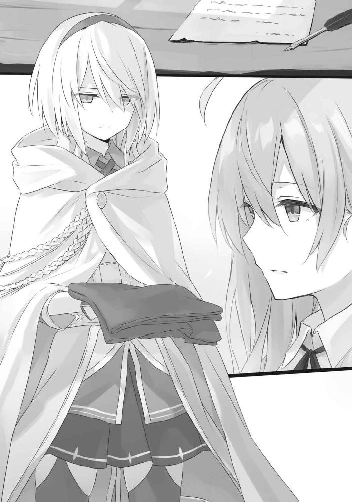
わたしは、宙ぶらりんになっていた手を、彼女に回した。
「ありが──」と。
けれど、ほうきさんは、そのとき消えた。
からん、とわたしの手をすり抜けて、ただのほうきが床に転がる。彼女がここにいた感触だけを残しながら。
そうしてわたしは、この国にただ一人、取り残された。
選択の余地は、残されていなかった。
● ●
外に降る雪は相変わらずゆっくりと舞い降りていた。
わたしが深々と被ったマントは雪を吸ってほんの少しだけ湿り気を帯びていた。
氷まみれになった街並みはどこを歩いていても景色は変わらなくて、どれほど外にいるのかも、どれほど彷徨い続けているのかも分かりはしなかった。
『..........................................』
氷の街の向こうから、魔女だったルーデラは足を引きずり、現れる。
きっともう、彼女の中には人間性なんて残ってはいない。
身体中から氷を生やした彼女は、わたしを見つけると杖をこちらに向けて、直後に氷を吐き出した。
「............っ！」
氷はほうきさんから貰ったマントにぶつかると、折れて街のあちこちに飛び散る。ああよかった、効果があったんだ──なんてほんの少し安堵をしながら、わたしは一歩ずつ、脚を踏みしめる。
向こうから氷が吐かれ続けているせいか、それともわたしの気持ちが引きずられているからか、足取りはとてもとても重くて、気を抜けばすぐに倒れてしまえそうなほどに感じた。
何度も滑りそうになりながら、わたしはマントの下で、サーベルに手を触れる。
かたかたとうるさいくらいに震えていた。
もしかしたら、記憶を失う前のわたしは、人斬りをしていたのかもしれない。だから大丈夫。
こうでもしなければイレイナさんが元に戻れない。だから仕方ない。
ルーデラさんは死を覚悟していた。だから悲しくない。
そんな風に頭の中で何度も何度も繰り返し言い訳をしながら、わたしは一歩ずつ、距離を詰める。
『..........................................』
そして。
「ごめんなさい」
と。
わたしは彼女を刺した。
マントを突き破って出たサーベルがルーデラさんだった彼女の胸を突き破る。骨と骨の隙間にずるりと滑り込むように刀は深く深く突き刺さった。
胸が痛い。わたしまで刺されたかのようだった。
ルーデラさんの胸から漏れた血が刀を遡り、ぽたぽたと氷上に落ちる。彼女の手から絶え間なく吐かれていた氷はなくなり、杖は落ち、それを握っていた手は力を失った。
力を失ったルーデラさんの身体はこちらに覆いかぶさる。とん、とわたしの肩に彼女の頭が乗った。
彼女の身体は、重かった。
「──ありがとう」
耳元で吐かれた言葉も、重かった。
彼女はその言葉を最後に、もう二度と動くことはなかった。
わたしは何も言えなかった。
そしてきっと、これからも、この一件に関して何か言葉を紡ぐことはないだろうと思う。誰にだって、イレイナさんにだって。
言えるわけがない。
あなたのために人を殺しましただなんて。
○
「いやあ魔女様。ほんとうに申し訳ないのう」
街の修復をしていると、国王様がふぉっふぉと笑いながらこちらに歩み寄ってきました。
私は作業の傍ら、首を振りました。
「いえいえ。街を破壊してしまったお詫びですよ」
「しかし魔女様はあの女と戦ってくれたのであろう？ 建物が多少壊れたところで、それは必要な犠牲であることは明白じゃ。何もそこまでしてもらわんでもよかったのじゃぞ？」
「それでは私の気が済みません」
それにしても、怪我人がいなくてよかったです──とだけ返して、私は作業に戻りました。
人のような何か。名状しがたい何かとの戦闘に陥ったまま氷漬けになってしまった私は、元に戻ったとき、周辺の建物を片っ端から破壊してしまったのです。
あ、やば。と思った私はすぐに修復を始めました。
そうしているうちに、「もしかして魔女様があの女を倒してくださったのですか！」と周囲にいた市民たちが騒ぎだして、国王様がわざわざ私のもとまで出向いてくる事態になってしまったのです。
まあ、別に私があの何かを実際に倒したわけではないのですけれど。
作業が終わったあとも国王様は私にごまをすりました。
「いやあ本当に助かりましたぞ！ 我々はあの悪魔によって長い悪夢に閉じ込められておったのじゃ。あのまま魔女様に助けられなければ、我々は恐らく永遠に氷の中であったろうな......」
「......そうですか」
重ね重ねになりますが私が助けたわけじゃないんですけどね。
何なら私も氷漬けになっていたんですけど。
「............」
しかしこの国を救ったアムネシアさんはといえば、私の後ろでただずっと俯くばかりで、何も発することもなければ、動きすらしませんでした。
私が凍っている間に何があったのかすら、一切わかりません。
氷から解き放たれ、自由を手にした国民たちが歓喜に沸くなか、彼女だけがひとり沈んでいました。
声すら掛けられないほど、痛ましく。
「あの悪魔を殺してくれた魔女様達には是非ともお礼がしたいのだが、どうだね？」国王様は言いました。「今日は記念すべき日じゃ。あの悪魔がこの国からいなくなった日として永遠に刻もう」
「............」
「どうだね魔女様。是非とも礼をさせてはくれんか？ 財宝でもなんでも欲しいものをお主らには与えたいと思うのじゃが。ああ、それとこれから少し時間はあるかのう。よければ王宮で最高級の食事を用意しよう」
「............」ずいぶんと浮かれておいでですね。
そんなにめでたいことなのでしょうか。
この国の事情はよく分かりませんけど。
「どうだね？」
上機嫌な国王様は急かすように再度私に問いかけます。
そのときでした。
「──やだ」
ほんの小さな声とともに、くい、と私のローブが引っ張られました。
振り返れば、暗く俯いたアムネシアさんが、わずかながらに首を振っているのが見えます。
それが国が元に戻ってから初めて彼女が発した言葉でした。
何があったのかはまるで分かりません。けれど、きっと言葉にもできないような出来事が彼女の身に起こったことだけは、分かりました。
だから私は、国王様に向き直ります。
「おかまいなく。私たち、先を急いでいるんです。旅人なものですから」
○
氷から解放された国の外には既に雪は降っていませんでした。森に舞う雪も、結局のところ、あの国に起こっていた異常気象の影響によるものなのでしょう。
「............」
結局どうして元に戻れたのかは、私自身もよく分かりませんでした。
国を出て、私たちは徒歩で森を進みます。単純にほうきに乗る気になれなかったので、ずっと森の中を、私たちは歩き続けました。
やがて、出てきたばかりの国の姿が完全に見えなくなったところで、私は振り返り、アムネシアさんを見つめます。
「............」
氷から解き放たれたときからずっと同じ表情でした。ずっと黙ったまま、悲しい顔をしています。
「大丈夫ですか？」
私の問いかけに、彼女は小さく頷きました。
「大丈夫。わたし、どうせ、すぐに、忘れるから──」
そんな自棄なことを、言いながら。
とてもとても震えた声で。
見れば彼女の指先は、肩は震えていました。口元も震えていました。耐え難い寒さに凍えるように。
こんな状態のどこが大丈夫だと言うのでしょうか。あまりの痛ましさでした。
だから私は──こんなことが今の彼女に効果があるのかも分かりませんでしたけれど──せめて安心できればと、彼女を抱きしめました。
「......あまり悲しいことを、言わないでください」
「............っ」
震える彼女の腕は、すぐに私を捕まえました。ぎゅうう、と強く強く、私の感触を確かめるように、背中に回された手は私を摑みます。
胸が締め付けられて、どうしようもない痛みに襲われました。
「......ごめ、ん。ごめんなさい......！ ごめんなさい......！」
私の肩のあたりに顔をうずめた彼女は、誰かに、何かを謝っていました。私のローブを濡らしながら、嗚咽を漏らしながら、ずっと彼女は謝り続けます。
私は彼女の背中をさすりました。騎士の恰好をしているわりに小さくて頼りない、たったひとりの女の子の背中でした。
私は彼女の髪を撫でました。柔らかくて暖かい、血の通った少女の髪でした。
「泣き止んだら、旅の続きをしましょう？」
その言葉に、震えながら、わずかに彼女が頷いた気配を感じました。
だから私は、彼女が落ち着くまで、いつまでも手を離さず、待ち続けます。
「............」
聞けるわけがありませんでした。
あの国で何があったのかなんて。
空に浮かぶ一筋の雲は、地を這う道の真上を流れていました。
うねりながら伸びる道の周りはすべてが草花で覆われており、そこら中にありふれた涼しい風は、私たちを追い越しながら、穂先を撫でて揺らしています。遠くには小川が私たちと同じようにゆったりと流れているのが見えます。
さわさわと涼しい音色が広がるばかりの景観でした。
「......気持ちいい」
ことん、と私の肩に頭が触れる気配がありました。
アムネシアさんが気持ちよさそうに瞳を閉ざしながら私に寄り添っていました。
「寝ないでくださいね」
私は前に向き直りながら応えました。「たぶんもうすぐ着きますよ」
道の先には壁に囲まれた国がひとつ。あれが信仰の都エストであると──なんとなく、どことなく私は分かっていました。
『信仰の都エスト この先』
............。
というかまあ、書いてあるんですけどね。看板に。
「あの、髪うっとーしいんだけどー」
頭の脇で彼女が文句を垂れるのが聞こえました。私の灰の髪と彼女の白の髪が微妙に絡まり合い、ついでに私の髪が彼女の鼻先を撫でておいででした。目を瞑ったままむずむずと顔をしかめる彼女はやがて「ふぁ......くしゅん！」とくしゃみをひとつ。
「風邪ひかないでくださいね」
「たぶん風邪と違うんじゃないかなぁ......」はあ、とため息を漏らしながら彼女は言います。「あとどれくらいで着きそう？」
「一時間もないかと」
「そっか──」
「......緊張してますか？」もうすぐ彼女の故郷ですし。
「ん......どうなんだろ。たぶん、信仰の都はわたしの故郷で間違いないのだろうけど、べつに......、ああ、ついに来ちゃったんだ──って。それくらいしか思えないのよね。自分でもびっくりするくらい淡白よね」
そして彼女は、言いました。
「イレイナさんに対しては違うんだけどね」
「......？ 私ですか」
こくり、と私の肩の上で、彼女は頷きます。「今朝わたしはイレイナさんと会ったばかりだけれど──でも、なんでだろうね。不思議なの。わたし、今のこの時間が、ずっと続いて欲しいと思えてるの」
「............」
「わたしもわたしの気持ちが分からないわ。でも、わたし、心のどこかで、もしかしたら思ってるのかもしれない。国に着きたくないって──」
「それ以上はやめましょう」私は彼女の言葉を遮っていました。「記憶が戻ったときに恥ずかしい思いをしますよ」
「............」束の間の沈黙ののち、彼女は、くすりと笑いました。「違いないね」
「......ええ」
──私だってこの旅の終わりに何も感じていないわけではないのです。
ほうきが風に追い越されながら道の上を漂っている所以は、単に彼女をまどろみに落とすためでもなければ、焦らしているわけでもないのです。
私たちはもしかしたら、互いに同じ気持ちを抱いていたのかもしれません。
それでも、ほうきは進まなければならないのです。
信仰の都エストへと続く、同じ道を。
○
信仰の都エストは背の高い外壁で囲まれた大きな国でした。
しかし御大層すぎる外壁のわりに、そこに取ってつけられた門は驚くほど小さく、馬車一頭を通すのが精一杯なくらいに頼りない代物でした。お粗末といってもいいです。
遠巻きに外壁を眺めたときには目を凝らしても確認することすら叶わず、近くに来てようやくその存在に気付いたとしても、目を疑うほどに小さすぎる門でした。
私たちはその門の前に、立ちました。
「ごめんくださーい！」
こん、こん、とアムネシアさんは戸を叩きました。
木造りの扉が頼りなく開かれたのは、それからしばしの暇を過ごしたあと。
「............」
出てきたのは頭にフードを深々と被った魔法使い。ただ何も語ることなく、そこにぼうっと立ち尽くしました。
「......あのー。わたし、この国出身のアムネシアという者なんですけどー」
緊張気味にアムネシアさんは魔法使いを見上げました。
「............」しかし魔法使いは黙りました。
よくよく考えてみれば彼女がこの国出身と証明できるものは何もなく、記憶もなく、実は信仰の都エスト出身というのはただの彼女の勘違いなのではないのか。本当はこの国など彼女にとっては縁もゆかりもない場所なのではないのか。
そんな不安が、沈黙とともに降りました。
直後です。
「そちらの魔女様はどなたか」目の前の魔法使いは私を見つめていました。「アムネシアの同行者ということでよろしいか」
あ、喋れるんだ。
一瞬の間を置いてから私は頷きます。
「です」
「左様か」
「です」
「......では入るがいい。入国を歓迎しよう」
そして魔法使いは門の前を退きます。
けれどその言葉は私に対してのみ放たれたように思えました。魔法使いは依然として私のみを見つめていて、アムネシアさんには見向きもしません。
どこか妙です。
「......あの」
「魔女殿。あなたに礼をしたい。もしよければ、このまま宮殿まで行ってもらえるか」
「礼って何ですか......？ 一体何を──」
困惑する私と、何が起こっているのかも理解できずに目を白黒とさせているアムネシアさんを交互に見つめ、魔法使いは言いました。
「この犯罪者を連れてきてくれた礼だ」
そして魔法使いは、彼女に杖を向けました。
放たれたのは拘束魔法。ぐるぐると青白い光が蛇のように伸びて、彼女を囲いました。
「えっ......！ ちょ、何するのよ！ ちょっと──」
戸惑う彼女に耳など貸さず、青白い拘束具はぎゅうう、と彼女を縛り上げ、身動きを完全に封じ込めました。
ぐい、と杖をそれから魔法使いが引っ張ると、彼女はその場で跪いてしまいました。
怯えた瞳で見上げる彼女に、魔法使いは冷徹な瞳で見下ろします。
「大罪人アムネシア。貴様を拘束する」
そのように、言いながら。
○
宮殿といっても、そこに王様が鎮座しているわけではないらしく、どうやらこの国には王政というものが存在してはいないようでした。
辿り着いた私が通されたのは、宮殿の最奥にある一室。
扇状にテーブルが並べられ、その奥に壇があるだけの部屋でした。そこにローブ姿の大人たちが数え切れないほどに集結していました。
どうやら議を論ずる場であることはなんとなく分かりました。
「ようこそ信仰の都エストへ。歓迎するわぁ。──お名前は？」
壇上の一人が淡々とした様子で私を見下ろしていました。
私はそれを見上げながら、「灰の魔女イレイナです。魔女です」と、これまた淡々と返しました。
唸るような低い感嘆の声があちこちから漏れます。
「随分と若いのねぇ」
壇上にいた一人が面白くなさそうに言いました。「いつ魔女になったのかしらぁ？」若干間延びした声の彼女は、その場を見渡す限りで唯一の魔女でした。
「三、四年ほど前ですね」私は応えます。
「......今は幾つ？」
「十八ですが」
「......随分と若いのねぇ」
更に更に面白くなさそうに魔女さんは目を細めました。私ほどではないにせよ、随分と若そうに見えるのですけれど、もしかすると少々お年を召しているのかもしれません。
魔法使いらしからぬ赤黒いドレスを身にまとっているものの、彼女の胸元には私と同じ星をかたどったブローチがあります。
むしろこの国においては私のようにローブと三角帽子を身にまとうことのほうが珍しいようで、この場で三角帽子をかぶっているのは一人もいません。
魔法使いらしさというものは必要ないのでしょう。そもそもこの国のすべての人が魔法を使えるそうですし。
「あなたには感謝しているわぁ。あの大罪人を連れてきてくれるとはねぇ」壇上の魔女さんは言いました。
「............」
「あれがどうして大罪人として扱われているか、気になるようねぇ」
「分かりますか」
魔女さんは頷きました。
「大罪人の同行者は皆同じように気にするもの。今のあなたみたいにねぇ」
「............」
「でも皆、事情を聴けば大罪人を軽蔑して、心の底から嫌悪して、そのままこの国に関する記憶ごと大罪人のことも忘れて国を出たがるわぁ。だって大罪人と同行していただなんて記憶、頭の片隅に置いておくことすら薄気味悪いものねぇ？」
「............」私は肯定も否定もしませんでした。「彼女はいったい何をしたんですか」
ただ事実の確認をするのみでした。
もしかしたら私のそのような反応すら目の前の魔女さんにとっては想定済みだったのか、彼女は唇を薄め、ほんの少し、笑みを浮かべていました。
「それに関しては図書館かどこかで調べればいいわぁ。この場でわたくしたちが説明するよりももっと簡単に分かるはずよぉ？ あの女がどれほどの悪事を働いてきたのかがねぇ」
「説明するのが面倒ということですか」
「あら棘のある言い方だこと。......違うわよぉ。単純に、わたくしたちが語ったところで、あなたはわたくしたちを疑ってかかるでしょう？ あの女の罪は冤罪で、実はわたくしたちがあの女を嵌めているだけなんじゃないかってねぇ」
あなた、そういう顔をしているもの──と魔女さんは言いました。
「......分かりますか」
「ええ勿論」然りと魔女さんは首肯します。「だって、今までこの国を訪れた大罪人の同行者たちがそうだったもの。だからわたくしたちから聞くよりも自分で調べたほうがいいわよぉ」
なるほど。
「それで──彼女の罪を知れば、私も今までの同行者さんたちのように彼女を心から軽蔑して、嫌悪するようになると？」
「ええ。なるでしょうねぇ。特にアムネシアが犯した罪はあまりに重く、赦されざるものだもの」
今はそう思ってはいないでしょうけれどね──と魔女さんはやれやれと肩をすくめます。
そのうえで、
「まあ、でも、あなたがあの女を連れてきてくれたことにわたくしたちは心から感謝しているわぁ。それだけは忘れないで頂戴？ 大罪人を連れてきてくれたあなたはこの国の英雄にも等しい。だから感謝のしるしとして、最高級の宿屋と食事を用意させましょう」
「............」私は薄く頷きます。「それはどうも」と。あまり嬉しくはありませんでしたけれど。
そもそも。
私がこの国で何か美味しい思いをしたとしても、この国を出る際に記憶を消してしまうのであれば、何も残らないのですから。
何かに軽蔑したり嫌悪したりしたとしても、それは同じです。
壁に囲まれた街は広く、けれど魔法使いばかりの国だというわりにはさほどそれらしい様子は見受けられません。
通りに寄り添う建物は背が高く、すべてが白塗りとなっていました。聞けば夜間になると黄色くライトアップされるそうで、それにより街並みは神々しさを放つとかなんとか。今さっきパンを買った露店のおじさんが饒舌に語っていました。よほどこの国の街並みがお好きなようで。
余談ですが彼はこうも言っていましたね。
「大罪人アムネシアを連れてきたのって、あんたなんだろ？ いやあ本当にありがとよ！ このパン、サービスしてやるよ！ 処刑に協力してくれたせめてもの礼だ」
私が買おうとしたパン。彼はお金を受け取らずにそれを私に押し付けてきました。私がアムネシアさんを連れてきたと一体いつ知りえたのでしょうか。
「............」
彼のご厚意に反し、私の食欲は一気に失せてしまいました。
しばらく歩くと、誰かに見られているような、何かに狙われているような視線をどこからか感じました。振り返ると喧騒とした街並みがただ広がっています。私に直接感謝したり、遠巻きに「あの人がアムネシアを連れてきた魔女さんだよ」と隣人に教えていたり、あるいはただ羨望の眼差しをこちらに向けているだけだったり、そこら中に私に向けられた視線がありました。
「............」
なんだか悪目立ちしている気がしてなりません。
街をしばらく行くと、水晶屋が目に入りました。大小さまざまな水晶が通りに面する窓辺に並べられていました。
『皆さん。本日はいいニュースがありますのよぉ』
驚くべきはそこに並べられた水晶たちがまるで同じ光景を映し出していたことでした。先ほど私が迎えられた宮殿にいた魔女さんが、水晶の向こうで大げさな身振り手振りをしながら、嬉々とした表情で演説めいたことをしているのです。
『大罪人アムネシアがようやくこの国に戻ってきたことはご存知よねぇ？』
「あの、これは？」
すると私を遠巻きに見守っていた住民たちが迅速すぎる動きで私の周りを取り囲みました。
「おっと魔女さん、この水晶が気になるのかい？」「こいつは鏡水晶といってだな、つまり、こうして鏡のように遠くの光景と音を映し出してくれる水晶なんさ！」「すげえだろ。これが我が国が誇る魔法技術ってもんだ」「他所の国にはとてもこんな芸当できまいよ」
「あ、はあ......そうなんですか......」
「ちなみに俺たち国民はこの国の魔法技術のために魔力を毎月国に譲渡しているのさ」「まあ税金の代わりに魔力を払っているってことだな」「そうしてこのように魔力を使った技術が国民に還付されるのよ！」「すごくない？」「他所の国にはこういう技術あるのかな？」「あるわけないじゃないかぁ馬鹿だなぁ」
「あ、もういいです」
「ちなみに鏡水晶の向こうで喋っている魔女さんは薔薇の魔女エリミアといってだな」「彼女は唯一の魔女なんさ」「彼女の能力といったらそれはもう凄くてな！」「鏡水晶を作り出したのも彼女の功績によるものなのさ！」「一体今は幾つかは分からないんだがね──ずっと前からこの国に貢献していて、とにかくすごい魔女で──」
「もういいって言ってるじゃないですかしつこいですよ」
しっしと手を払っても彼らはしゃべり続けました。なんですか喋っていないと死んじゃうんですかおしゃべりクソ野郎どもですか。
などと文句の一つでも垂れて差し上げたいところでしたが、しかし。
お喋りな彼らは、私の知りたいことすらも軽々と語ってくれました。
「きみがここに連れてきたあの女──アムネシアだが」「あれはこの国の魔女たちを殺したんだ。エリミア様以外はすべてね」「そして、そのうえで他国に毒をもたらし、壊滅状態に陥らせたのさ」「死刑になって当然だよな！」「それにしてもあの女を見事に捕まえたエリミア様の素晴らしさといったら──」
などと。
にわかには信じがたい言葉が──本当にあのアムネシアさんがしたとは到底思えない事実が、国民たちの口からは語られたのでした。
『アムネシアの処刑の日時が決まったわぁ』水晶屋に並ぶ鏡水晶に映し出された薔薇の魔女エリミアさんは、にこやかな笑みを浮かべていました。『明日の朝よ。明日の朝に、あの女の首を宮殿前の広場にて刎ねるわぁ。国民の皆さんの参加を期待しているから、よろしくね？』
私の周りで拍手喝采されます。
そしてエリミアさんは──まるで私がここに居ることを分かっているかのように、鏡水晶の向こうで、
『もちろん、国民以外の参加もねぇ』
とだけ言い残し、鏡水晶の向こうから消えました。
直後にただの鏡のようになる水晶。
そこには、茫然とした顔色を浮かべる私が残されたのでした。
○
調べものに最適な場所はどこか。
そう、図書館です。
「......ぬぬぬ」
鏡水晶でエリミアさんが語った直後に私はその場にいた住民たちに図書館の場所を聞き出し、すぐさまやって来たのでした。
この国の図書館はそれなりにきちんとした施設として成り立っているようで、中は大きく、天井は遥か遠く。
大きすぎる螺旋階段のようにぐるりと天井に向けて伸びている階段の脇に、本棚が延々と並べられていました。
とはいえ、私のお目当てはそこに並べられている本たちではありません。
「この国の新聞を見せてください。片っ端から」
調べものをするために私はここに来たのです。その要因とは語るまでもないでしょう。
司書さんに頼み込めば、すぐに約一年までさかのぼって新聞のバックナンバーを開示してくれました。私は「どうも」と会釈だけ返して、近場の椅子に腰かけました。
「............」
新聞各紙を読み比べしながら該当の事件に関して調べました。アムネシアさんがこの国において、記憶を失い続ける要因となった出来事として予測できる展開といえば、こんな感じ。
事の発端は今より一年と少し前。
この国にいた四名の魔女が次々と失踪する事件が起きました。信仰の都エストに住んでいた魔女は全部で五名。たった一人残された薔薇の魔女エリミアは、「これは信仰の都エストに対する反逆だ」と声明を出し、犯人捜しに躍起になりました。エストの治安を守る正統騎士団も彼女に全面的に協力し、この国の財産とも呼べる魔女を次々と殺した犯人を捜しました。
しかし犯人はおろか手がかりすら摑めません。
なぜ魔女たちが次々と失踪したのか。なぜ遺体すら見つかりはしないのか。一連の事件において謎は謎を呼び、迷宮へと片足を踏み込んでいました。
このままでは未解決事件として幕を下ろしてしまうのではないか。このままでは魔女四名の無念は永遠に晴らせないのではないか。
次第に魔女エリミアと正統騎士団に焦燥の色が浮かび始めました。
そんなときです。
魔女エリミアが犯人を捕まえたのです。
魔女四名を殺した犯人は正統騎士団所属のアムネシアという少女でした。
彼女は正統騎士団に属していながら魔法をろくに使えないでくの坊でした。穀潰しでした。ほうきで空を飛ぶことすらままならない彼女はこの国に強い劣等感を抱いており、その劣等感は魔女を殺害し、その魔力を奪うという蛮行への引き金となるには十分なものだった──とのことです。
エリミアさんは新聞にてこのような発言も残しています。
『この国には魔力を税金の代わりに支払い、貰った魔力を国が運用するというシステムがあるでしょう？ そのシステムを構築したのもわたくしなのだけれど──ある日、事件の調査のためにアムネシアと行動を共にしていたらねぇ、アムネシアがやたらと魔法を使っているのよぉ。本人は練習したと言っていたけれど、皆さんだって知っているでしょう？ 魔法の修練を一日二日しただけでは上達なんてしにくいものだもの。それで彼女のことを調べていたら、わたくしが作ったシステムを真似たものを作っていたことが分かったのよぉ。どうやら魔女たちから魔力を根こそぎ奪って殺したようねぇ』
アムネシアさんの人間関係はとても冷え切ったものだったといいます。
魔法がろくに扱えない彼女は両親から疎まれ、成人を迎えることなく家から放り出されたそうです。友人と呼べる者も多くはなく、いつも一人で行動していたといいます。
魔法が使えないならと磨き上げた剣技を認められ、正統騎士団に属するまでになりましたが、しかし正統騎士団内でも、彼女のような者は煙たがられ、更に、後から入ってきた妹にはすぐに追い抜かれ、間もなく妹の部下として働くようにさえなってしまったとか。
絶え間ない劣等感が彼女を苦しめていたのでしょう。
しかし魔女四人の遺体が薔薇の魔女エリミアさんの手によって見つけられてしまいました。遺体には切り裂かれたような跡があり、彼女の持っていた刀によってつけられた傷であることは照合により明らかになりました。
彼女の罪はそれだけではありませんでした。
エリミアさんが開発した魔力を吸収して利用するシステムをアムネシアさんが開発した際に、地下水路から大量の有害物質が垂れ流しになってしまったのだとか。
結果として近隣の国に被害が及び、公害により壊滅的状況へとなってしまったといいます。
魔女四名の殺害。及び公害の流布。
アムネシアさんの罪はあまりに重すぎました。
事態を重く受け止めた信仰の都エストの議会ではほどなくしてアムネシアさんを忘却帰郷の刑に処すことを決定しました。
それは大罪人にのみ与えられる刑。
調べてみたところ、どうやらこれは罪を犯した者の記憶が一日おきに消える呪いをかけ、国外へと追放するといったものなのだそうです。しかしそれだけでは終わりません。
自分の名前も思い出せないような状態で外に放り出された者はどうするか。この国はそれをよく分かっていました。
記憶喪失となった大罪人は自分が何者であるかをまず探るのです。着ている服や、身に着けているアクセサリーを頼りに、自分がどこから来て、どこに向かうべきなのかを知りたがるのです。
そして自分の故郷を求めて、大罪人は歩き始める。
一か月でしょうか。二か月でしょうか。もしかしたら一年くらいかかるかもしれません。けれど大罪人はきっと戻ってくる。毎日のように他人と、そして自分自身との出会いと別れを繰り返しながら。
首を刎ねる直前まで、その呪いは続きます。
そして国に戻り、断頭台へと上り詰めたとき、呪いを解くのです。
大罪人が外で過ごしてきた記憶はいったいどのような記憶でしょうか。もしかしたら記憶喪失に陥った大罪人に優しくしてくれる人は多かったかもしれません。この辺りの治安はそれなりにいいほうですから、もしかしたら人々は暖かく大罪人を迎え入れてくれたかもしれません。記憶のない大罪人を心配してくれる人も多かったでしょう。
記憶喪失になった理由は不透明であったとしても大罪人はただただ希望だけを胸に外の世界を歩き続けます。けれど最後に、それらの幸せな記憶は、すべて断頭台への道筋でしかなかったと思い知らされるのです。
そして、あまりにも深い後悔と絶望の中で、大罪人は死んでゆく。
それが忘却帰郷の刑でした。
そして、アムネシアさんが明日、かけられる刑でした。
「............」
と。
そこまで読み終えたところで、またしても視線を感じました。
新聞、それに後から追加で読んだこの国における処刑の資料の束たちによって山積みにされたテーブルから周囲を窺う私でした。
けれど今度は街中とは違い誰もいません。
視線など感じるはずがないのですけど......。
「......む？」
いえ、ちょっと待ってください。
なんか箱があります。
ちょうど人が一人入れそうな程度のサイズのやつが、本棚の陰に紛れて、ありました。
「......なにあれ」
怪しすぎました。
そういえば街中にもあんな箱があったような気もしないではありません。しかし、通りの中にあれがあったとしてもそれは単なる箱でしかなくて、訝しむ必要性すら感じないものですが、ここ図書館ですしね？ なんで箱なんてあるんです？ 踏み台ですか？
「............」
私は立ち上がり、その箱の目の前にしゃがみ、じっと見つめました。
「............っ！」がたがた、と揺れる箱。
踏み台じゃないですねこれ。
「あの、何してるんですか」
「............」
「あなたに言ってるんですけど。聞こえてますか？」こん、こん、と箱の真上を叩く私でした。
「............」しばし沈黙。そして。「いえ、おかまいなく」
あ、喋った。
「あなた何してるんですか」
「おかまいなく。これは、その......趣味？」
なんで疑問形なんですかね。というか、
「一体どんな趣味でそんな風になるんですか」
「これは......その......魔女さんを尾行する趣味、とか、ですかね......？」
「なんですかそれ」
ストーカーですか。
呆れる私に、箱の彼女は言いました。
「あなたが灰の魔女イレイナさんですよね？ 大罪人アムネシアをここに連れてきた張本人の」
「......よくご存じで」大方、鏡水晶で私のことを知ったのでしょうけれど。
「あなたがこの国に来たときからずっと後を尾けていましたから」
「ストーカーですか」
「ちがいますー」ちょっとムキになる箱の人。「あなたが信用に足る人かどうかを見極めていたのです」
「はあ」箱の人は間違いなく信用に足らない部類の人だなとだけは確信できました。「それでどうですか？ 私は信用に足る人間でしたか？ まあ別にどうでもいいですけど」
私、今ちょっと忙しいんですよ。だから構わないでくれません？ とだけ言って、私は立ち上がりました。
その直後でした。
「待ってください！」
箱の人も立ち上がりました。箱の下からスカートを穿いた脚がにょきっと伸びてきたみたいで奇妙奇天烈が過ぎました。
「あなたは大罪人アムネシアの罪状に懐疑的ではありませんか？ だからこうして調べものをしているのではありませんか？」
箱を隔てて顔を隠しているとしても、その向こうの顔色が鬼気迫っていることが優に分かる程度には必死な声でした。
「............」私は席に戻りかけていた足を止め、彼女に応えます。「だとしたら何ですか？」
「よかったら──わたしに協力してくれませんか」
「......あの、その前にあなた誰なんですか？」
単純明快な疑問でした。
そもそも顔も何もかもわからず、ただ単純に私をストーキングしていただけの人を一体どうやって信じろというのでしょうか？
すると彼女は、「あ、ご、ごめんなさい！ 申し遅れました！」と箱を脱ぎ捨てました。
露わになったのは、白く、柔らかく、長い髪。リボンをくるりと巻いていました。
幼い顔立ちから見るに、歳は私より一つか二つ程度下でしょう。
よく見れば着込んでいるのは白のローブで、アムネシアさんが着ていたものと同様。
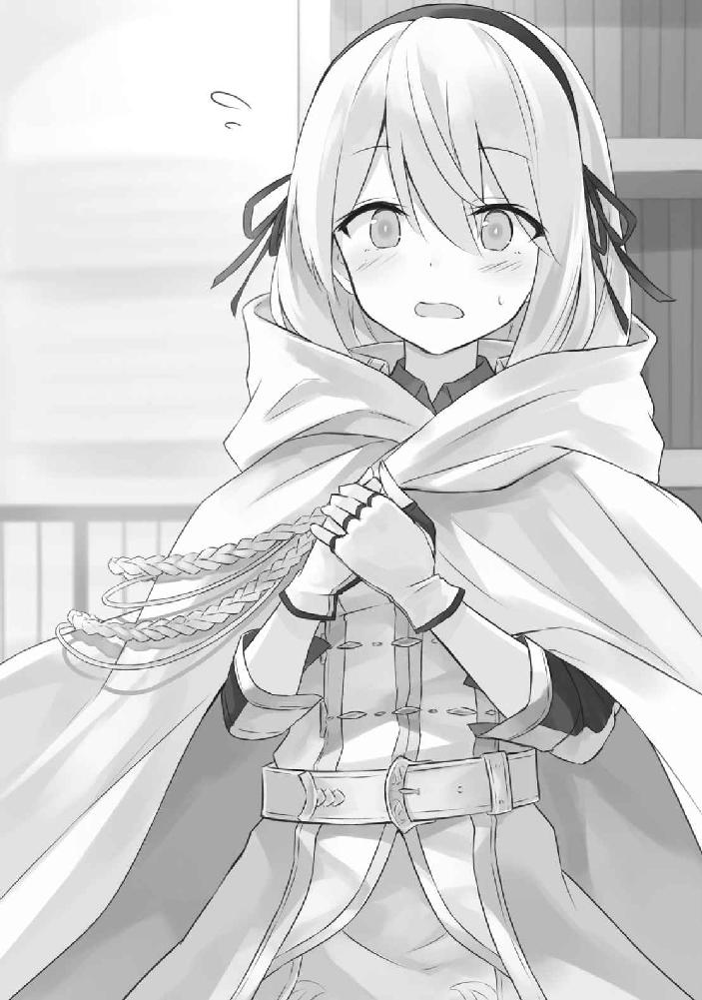
どこかその顔立ちからも、アムネシアさんが想起されました。髪が短ければ、その髪にあるリボンがカチューシャであれば瓜二つと思えるほど、彼女と似ていました。
「あなたは──」
私の言葉に、彼女は頷きます。
「わたしの名前はアヴィリア」
箱がからん、と音を立てて転がる最中、彼女は言いました。
「アムネシアはわたしの姉に当たります」
○
私はその後アヴィリアさんに招かれて彼女の家へと向かいました。
ちなみに彼女はなぜか箱を被ったまま。つまり動く箱の後を追いかける私という奇妙すぎる光景が街中では展開されたわけですが、アヴィリアさん曰く、「わたしとイレイナさんが会っていることが街の人たちにばれると色々とマズイですから」と箱を脱ぐことはありませんでした。箱を被っているほうが色々とマズイと思わないんですかね？ 妙に注目されまくってますよ？
「大丈夫です。これなら周りの人たちには動く箱としか認識されません」
マジですか。
「おおアヴィリアちゃんじゃねえか」「今日も箱被って何してるの？ 誰かの尾行かしら？」「精が出るねえ」「隣にいるのは灰の魔女さんかな？」「一体どうしたんだい？」
「............」
ばれてるじゃないですか。
というかいつも箱被ってるんですか。馬鹿ですか。
「くそおお！」彼女はヤケクソ気味に箱を投げ捨てて街をゆきました。
ついでに、「あの犯罪者の姉を連れてきた経緯を訊くためにイレイナさんを連れてるのです！ べつになんでもありません！」と街の人たちに応えてもいました。
「............」
マジですか。
ほどなくして彼女の家に着きました。
正統騎士団とやらに属しているのですから、それなりに稼ぎもあるのでしょう。彼女の家はほどほどに豪奢でした。
「少し散らかっているかもしれませんけど、おかまいなく」
と彼女は申していましたが、実際にはそれほどに広い一室には足の踏み場もないほど本や資料、論文や書類など、その他諸々に諸々。お仕事に関するあれこれの物ばかり。
ある意味生活感を窺わせない私室でした。豪奢な一室が台無しです。
「............」私は部屋を見渡してから彼女を見ました。「あの、どこに座れば」
「そのへんに」
「............」
どのへんに......？
私は迷った挙句、床に散らばった何枚かの紙切れを跨いで、脚をたたんで床に座りました。部屋には椅子もテーブルもありましたが既に資料の山によって潰されてしまっていましたから。
「......ではお話ししますね」
アヴィリアさんはそのように言うと、私の前にぺたんと座り、「......イレイナさん、この国の様子を見て、どのように感じましたか？」と首をかしげました。
どのようにと言われましても......。
「変な国だなとは少なくとも感じていますよ。噂が広まるのが妙に早いですし、鏡水晶みたいに変な発明がありますし、それに──」
アムネシアさんを大罪人としていますし。
私は言いました。「彼女は本当に大罪人なんですか？ 私には到底信じられません」
たとえ新聞やこの国の人々が彼女を大罪人として忘却帰郷の刑に処していたとしても、彼女自身の旅が死への道筋でしかなかったとしても。
私との今までの旅が無駄であったとしても。
私は信じられないのです。未だ不思議なのです。
あんな風に記憶を毎日失っても能天気で、決して取り乱すことなく陽気でいられるような彼女が、人を殺して、魔力を奪おうとしたという過去を抱えているなんて、信じられないのです。
「はっきり言ってしまえば、わたしが先ほど街で語った言葉は噓です」
アヴィリアさんは私に応えました。「本当は、実際は、あなたがお姉ちゃんをここまで連れてきて──そのうえで、まだお姉ちゃんを信じられるかを知りたかったのです」
「............」
「あなたはお姉ちゃんの味方ですか？」
「............」私は彼女の翡翠色の瞳を見つめていました。「あなたはどうなんですか」
箱を被っているかのように自らの手の内を明かさないまま私に矢継ぎ早に質問をするのは解せないですね。
彼女は一瞬、意表を突かれたようにきょとんとしましたが、しかしそのあとで、
「味方に決まっているじゃないですか」
言いました。当たり前すぎるとでも言いたそうでした。「わたしはお姉ちゃんを助けるために今までずっと、正統騎士団の一員として宮殿で働く傍ら、裏で動いていたのですよ」
「その割にはこの国の人たちの前ではお姉さんを犯罪者扱いしていたようですが」
「ああでもしないと国の人たちからの信頼は得られないのです」
「............」なるほどなるほど。「......ではあなたのお姉さんは冤罪なんですか」
私の言葉に、アヴィリアさんは静かに、神妙に頷きました。
「冤罪で間違いありません。すべてはあの魔女によって仕組まれたことです」
「......あの魔女」とは一体誰かと、はたと思考を巡らせた刹那、そういえばこの国に魔女はただの一人しか残っていはしないことを思い出しました。「薔薇の魔女さん、ですか」
「です」
「......つまりあのエリミアさんという人が、アムネシアさんを罠にかけ、この国から追い出されるようにした張本人と」
「ですです」
「......エリミアさんのせいでアムネシアさんは殺される、と」
「ですですです」
「............」ですですうっさいですね。
「にわかには信じられないでしょうけど、でも、それが事実なのです」
「......いえ、別に信じられないわけじゃありませんよ」
むしろ妙に腑に落ちるというか、まあ確かにそんな気はしていたというか。
だってあの魔女さん見るからに怪しいじゃないですか。何ですかあの間延びした口調。胡散臭さ全開ですよ。
「しかし、それならば真実は一体何なんですか？ アムネシアさんはどうして大罪人となってしまったんです？」
と。
私の言葉に、アヴィリアさんは応えました。
「ちょっと長い話になりますけど、いいですか？」
「手短にお願いします」
「むー」頰を膨らませて露骨に機嫌を損ねてみせるアヴィリアさんは、そのあとで「お姉ちゃんの話を手短にすることなど不可能なのです」と言い、そして物語を紡ぎました。
......しかし、ところで。
「あなたお姉さん大好きなんですね」
その言葉にアヴィリアさんは、やはり当然すぎるとでも言いたげに、応えました。
「大好きに決まってるじゃないですか」
アムネシアさんにまつわるすべてが妹のアヴィリアさんの口から語られたのち、私は一端、彼女の部屋から出ていき、家の前の階段へと腰かけました。
ほうきを抱えながら。
「............」
それはそれは、とてもとても胸が締め付けられる不幸な物語であり。
あまりにも恵まれない彼女の物語でした。
一体彼女が何をしたというのでしょうか。ただほんの少し、この国の中では珍しいくらいに魔法が使えなかったというだけのことで、ここまでの仕打ちを受けなければならないのは、一体なぜだったのでしょうか。
あんなにもいい人なのに──。
「どう思いますか」
私は抱えたほうきに問いかけていました。人間の姿ではなく、今はただのほうきとして私の中でぼうっと突っ立っていた彼女は、
「どうと言われましても」
と淡々とした様子で応えました。「それは一体、どういった意味での言葉なのですか？ アヴィリア様に協力するべきかを問うているのですか？ それともアヴィリア様のお話が真実であるかどうかを確かめようとしているのですか？」
「両方です」
「つまり真偽を確かめるまではアヴィリア様に協力する気にはなれないと」
「ええ」
「それならばお答えする必要を感じませんが」
棘のある言い方でした。
「......今日のあなたは随分と辛辣なんですね」
「こんなときにしか呼び出してもらえないわたくしの都合のいいほうきぶりに呆れているのでございます」
「............」
「冗談でございます」もしも彼女が人の姿を模していたのならば、きっと薄く笑っていただろうなと思いました。「わたくしが思うところ、アヴィリア様が語った物語は真実でしょう。わたくしにはその確信がございます」
「ほう」
「どうしてだかお分かりですか？」
「............」
私と同じ旅路を辿ってきた私のほうきが、私には知りえない何かの情報を持っており、それを頼りにアヴィリアさんの語った物語の真偽を摑んでいる。
その状況は、ひとえに、私がいなかったどこかで、何かがあったことを示唆していました。
たとえば、氷に覆われていた街での出来事、とか。
「......私が凍っていた間に何があったか、教えてもらえますか」
それは私が──あそこを出てから、酷く落ち込んだアムネシアさんを目の当たりにしてから、怯え、怖がり、戸惑って、未だ口にすることができていなかった言葉でした。
私は躊躇していたのです。
残酷な真実を知れば、私も涙を流してしまうかもしれなかったから。
「当然でございます」彼女が笑った気配がしました。「けれどその前に一ついいですか？」
「......何ですか？」
「イレイナ様はそもそも、あの国での出来事をわたくしに尋ねるよりも前から、既にこの一連の事件の解決に──アムネシア様の救出に対して、ひどく前向きなのではありませんか？」
「何を言っているのやら分かりませんね」
私はやれやれと肩をすくめました。
しかし呆れる私を私のほうきは無視しました。そもそも見えているのかすら疑問ですけど。
「イレイナ様はアヴィリア様に協力的だからこそ、こうしてわたくしをほうきの姿のまま呼び出したのでしょう？ こうすれば魔力の節約になりますからね」
何をおっしゃる。
「あなたをそのままの姿にしてあるのは、ほうきがいきなり人の姿に変わったりしたら周りの人を驚かせてしまうからですよ」
「ほうきと喋っている時点で周りの方々は驚くと思いますが」
「............」
「そもそも周りに人など一人もいないではありませんか」
「............」私は嘆息を漏らします。「今日のあなたは随分と意地悪なんですね」
ええ──と私のほうきは応えました。
これもまた、当然すぎるとでも言いたげに。
「わたくしはあなた様の物でございますから」
そして私は、人知れず答え合わせをしたのでした。
だから私は、アヴィリアさんの計画に全面的に協力することを、約束したのでした。
でも、そもそも迷う必要も、真偽を確かめる必要も最初からなかったですよね。
彼女を助けることくらい、当然すぎることなんですから。
○
「お姉ちゃんの処刑が執り行われるのは明日の朝十時です。場所は今日、鏡水晶の中でエリミアが言っていたとは思いますけれど、宮殿前の広場で間違いありません」
あなたに協力します、と応え、戻ってきた私を「きゃー！ ありがとうございます！ ありがとうございます！ イレイナさんがいればお姉ちゃんの救出成功は間違いなしですよ！」などと抱き着いたあとに、冷静になり、「あ、ごめんなさい。わたしお姉ちゃん一筋なので」と離れ、そのあとで作戦の内容を私に開示しました。
どうでもいいですけど何なんですかこのテンションの浮き沈みの激しさは。
「作戦は一度きり。まず、わたしが広場にてお姉ちゃんの記憶が戻るタイミングを待ちます。イレイナさんは宮殿の中に侵入して、エリミアの足止めをしてください」
「エリミアさんが宮殿の中にいるという保証は？」
「彼女がお姉ちゃんの首を刎ねるという手筈になっています。それまでの間は恐らく宮殿の最奥──えっと、昨日イレイナさんが行った議会場ですね。あそこで待機しているはずです」
ほほう。
「つまり首を刎ねるまでの時間を延ばすという作戦ですか」
随分と杜撰かつテキトーな計画ですね。「それで一体どうやってお姉さんを助けるつもりですか」
「もしもエリミアが処刑の時刻に間に合わなかった場合、お姉ちゃんの首を刎ねる役目はわたしに任されることになっているのですよ」
「......なんでです？」
「大罪人が記憶を失うより以前に因縁が深かった順に、首を刎ねる役目が回ってくるのです」
公にはアムネシアさんを捕まえるために大活躍したとされているエリミアさん。
公には仲が悪いとされているアヴィリアさん。
なるほど因縁が深いといえばその通りなのかもしれません。
「断頭台に上り詰めたときにお姉ちゃんの記憶は元に戻ります。つまりは、その時が絶好のチャンスなのです。そのときにお姉ちゃんを攫ってしまえば、お姉ちゃんは記憶を取り戻し、処刑からも逃れられる」
「そのあとは？」
「国から出るのです。お姉ちゃんを奪還したら合図を送りますから、イレイナさんはエリミアの足止めを中断して、あとは流れでお願いします」
「......で？」
「え？ 以上が作戦の概要ですが」
「その作戦の通りだとまるでもって上手くいかない可能性が非常に高いのですけど」
あの、分かってますか？ この国って魔法使いしかいない国なんですよね？ そんなに簡単に逃げ出せていたら国から出る者は誰もが国にまつわる記憶を消されていて、信仰の都エストの実情を知る者はいない、なんて現状にはなっていないでしょうに。
「はー。だったらどうすればいいのですか」
「あ、不貞腐れた」
頰を膨らませるアヴィリアさん。指を突き刺したら破裂しそうですらありました。
「せっかく必死に考えた作戦だったのに」
「......この国の正統騎士団とやらの底が知れた気がしました」
正統騎士団として宮殿で働いていると豪語していたものですから、てっきり私は宮殿の内部事情や人間関係や上下関係、それからこの国独自の魔法技術を最大限に生かしたうえでの作戦を作り出しているのかと思っていたのですけど。
とんだゴリ押し作戦じゃないですか。
「......だったらどうすればいいのですか。イレイナさん」
私はじとりと目を細めるアヴィリアさんに、
「どうするも何も」
応えました。
「エリミアさんをとっちめれば一件落着じゃないですか」
●
これはわたしの思い出話。
儚い思い出話。
「お姉ちゃん見てください！ この箱！ これ使えば尾行の任務とかも完璧ですよ！」
妹のアヴィリアが人ひとり入れそうなくらいの微妙なサイズの箱を掲げてふんー、と得意げな表情を浮かべていたのは、彼女がちょうど正統騎士団入りが決定した日のことだったと思う。
わたしの家にいきなりやってきたと思ったらなにをわけのわからないことを......。
「正統騎士団ってあんまり尾行の任務とかしないわよ？」
「えっ」
「宮殿の雑務とかが主だし。そもそもこの国に悪人と呼べそうな人なんて少ないし」
正統騎士団の仕事というのはとてもとても地味で、基本的には宮殿内にて完結する。たとえば鏡水晶の操作とか、会議のための資料作りとか、宮殿内の清掃とか修繕とか。あとは要人の警護に宮殿の警備とか。事件や事故が起これば調査に向かわされたりもするけれど、派手な戦闘なんてほとんどないし。
地味地味。そして地味。
「じゃあこの箱は......どうすれば......？」
「まあ出番はないわよね」
「でも、ほら、これをいつも使っていれば、ここぞという時に奇襲に使えたりしません？ 『おや？ あの箱は何かな？』と思わせておいてわたしが中から出てくるとか、『あ、この箱があるってことは、あそこに正統騎士団のアヴィリアがいるぞ？』と思わせておいて、実は背後から近づいていたとか」
「そもそも使う場面がないんだけど......」
「......むー」だったらこの箱はどうすればいいのです？ みたいな顔でわたしを見ないで欲しいなあ。「それはそうとお姉ちゃん。わたし、家を出ましたから」
「えっ」
何を言い出すのかしらこの子。
「お姉ちゃんも正統騎士団になったときに家を出たでしょ？ だからわたしも出ようと思いまして」
「............」
わたしが家を出たのは単に家でお荷物扱いされるのが嫌だったからなんだけど──アヴィリアは両親から可愛がられていたし、そんなことする必要はない気がするけど。
というか。
「わたしは一人暮らしを始めるときにそんな箱を用意したりはしなかったけどね」
わたしが笑うと、アヴィリアはまた、むー、と頰を膨らませてみせた。
今思えば他愛もないただの思い出だった。
アヴィリアがわたしの上司になったのは、それから一年後のことだった。
「明日から彼女が君の上司だから。よく従うように」なんて告げられて、連れてこられたのが妹だった。魔法がろくに使えないわたしは、どれだけ努力を積み重ねても出世なんてものは遠く、儚いものなのだろうか。
魔法の代わりにいくら剣技を磨き上げたとしても、そもそもそれを披露する場が極端に少ない正統騎士団の内部にとっては、わたしは穀潰しも同然だったかもしれない。
お前は役に立たないと、正統騎士団から暗に告げられているような気分だった。
「お姉ちゃん──」
心配そうにわたしを見つめるアヴィリアが、そのときいた。
「......大丈夫。気にしてないよ」
なんて、わたしは噓をついて、彼女の髪を撫でた。
本当は今すぐにでも叫びだしたいほど、腸は煮えくり返っていた。
ここまでの扱いを食らっても未だ魔法がまともに使えないわたし自身が許せなかった。けれど、何よりも許せなかったのは、正統騎士団がわたしに対する嫌がらせに妹を使った点だった。
結局、それから妹との関係は冷え切ったものになった。
いつもぼうっとしていて、どこか抜けているアヴィリアだったけれど、魔法使いとしての才能は抜きんでたものがあったから、正統騎士団内でもすぐに一目置かれるようになった。
表舞台で華やかに活躍する彼女の裏で、わたしの存在は日に日に薄っぺらいものとなっていた。
妹が正統騎士団で働くようになって一年が過ぎた頃には、わたしと彼女は顔を合わせることもなくなっていた。
誰かにそう仕向けられたわけじゃない。そのように約束をしたためたわけでもない。
わたしたちはただ、お互いに、お互いの顔を見るのが辛かったから。それでも正統騎士団にしがみついていたわたしをみて、きっと周囲の人間はひどく気分を害したことだと思う。
けれど、わたしが身にまとっている正統騎士団の制服がなくなってしまえば、あとには何も残らないと、わたし自身がよく分かっていたから、だからわたしは、いつまでもずっと、しつこいくらいに、正統騎士団の一員として働き続けた。
どんなに辛くとも、なんてことない風を装って、笑顔を取り繕っていた。
そんなある日のことだった。
「......むむ？」
雑務として国外から送られてきた手紙の処理を任されることがある。といってもこの国は外の世界というものにまるで興味を持ってはいないため、基本的には、「開封して要るものと要らないものを分けろ」と命令され、その通りに処理するだけなのだけれど。
まあ、要するに、その手紙の束の中に、妙なものが紛れ込んでいることに気が付いた。
「信仰の都エストにより漏れた有害物質による被害報告......？ なにこれ」
それはこの近くの国に住む大魔女ルーデラだか何だかさんによる一通の手紙だった。
要約すれば、「おたくの国からは有害物質が出ている。そのせいでうちの国が壊滅的状況。ふざけるなどうしてくれる」との直訴状だった。
有害物質──その一文が引っかかった。
信仰の都エストは基本的に引きこもりがしたい性質であるがゆえに、外の国との揉め事は極端すぎるくらいに避ける傾向があった。有害物質なんて漏れたりすれば真っ先に問題視される。この国の傾向からして、そういった事態を避けるべく何度も調査は行っているはずだ。
無論、こういった調査も正統騎士団に任されるのだけれど。
とにもかくにも、有害物質が漏れているという現実は、看過できない問題だった。
わたしは直ぐに直属の上司に報告をした。
けれど。
「......ごめんなさいお姉ちゃん。今、それどころじゃないのです」
上司──というか妹だけど──は、ただいま別件で忙しいために手が離せないという。要するに公害の調査なんてしてる暇あるわけねーだろということだった。ふざけんな。
妹の本心がどこにあるかは分からない。本心としてはわたしに協力してくれる気があったのかもしれない。
実際、わたしが手紙を妹に見せたとき、周りにも別の部下たちがいて、
「アヴィリアさんは今、殺人事件の調査で忙しいの」「お前みたいに手紙を分別して給料泥棒してるわけじゃねーんだよ」「暇人が」「余計な仕事増やさないでくれる？」
なんて罵られたものだから。
だから彼女の本心かどうかは分からなかった。
「......分かったわ。じゃあ、手紙の分別に戻るから」
わたしは取り巻き連中を無視して、アヴィリアから手紙を取り上げながら、そう言っていた。
まあ噓だけれど。
誰もやらないならわたし一人でもやるつもりだった。一人で調査をすればよろしい。
「......ごめんなさい」
細く、囁くようにただ俯きながら謝罪するアヴィリアを無視するように、わたしは歩きだした。
はっきり言って、事件の調査は驚くほど簡単で、その気になればわたし一人でも一日あれば余裕で済ませられてしまうほどに簡単だった。
大魔女ルーデラさんとやらは、この国の人間が公害をそれと気づかずに漏らしてしまう馬鹿ばかりだと頭から決めつけていたようで、有害物質にだけ反応して色が変わる不思議で便利な紙切れを手紙に同封してくれていた。
「ま、要するに地下水路を調べていけば簡単に発生源を辿れるって寸法よね」
ということで早速、信仰の都の地下水路に侵入するわたしだった。
薄暗く、カンテラがなければ一寸先すら見えない暗闇だった。壁も天井もすべてが赤黒いレンガで統一されていた。わたしが歩く道の真横に生活排水がとろとろと流れている。薄暗い明かりしかないからか、それともレンガが赤黒いからか、水の色はひどく濁っているようにも、まるで血のようにも見えた。
「......んー」
とっとと撤退したかったわたしは早速とばかりに流れる水に紙を突っ込んでは色を見る。
「あ、青色になった」白い紙の濡れている部分だけが変色していた。ルーデラさんとやら曰く「青色になったらそこは有害物質で溢れてるってことだからよろしくお願いします」とのことなので多分そうなのだろう。
それから地下水路を遡りながらわたしは色を見続けた。青になってばかり。もしやこの国から出る水のすべてが有害物質なんてオチじゃないだろうなとさえ思ったほどだった。
けれど現実は違った。
「......あれ？」
調査を始めて一時間ほどした頃だった。
水に突っ込んだ紙の色が、変わらなかった。変色はなく、ただ濡れてしなびた紙切れがわたしの手にはある。
「............」
顔を上げて、振り返ってみれば、わたしのすぐ近くには扉が一つ、あった。
地下水路なのに。生活排水が流れるような場所で、人など来るはずもないというのに。
おやおや？ と思いながら扉の真下から流れる水に紙を当ててみた。
色は青になる。
けれどそこより上流に行けば、色は変わらない。
「......マジで？」
どうやらこの怪しさ満点の扉から有害物質が漏れ出ているということで間違いないらしかった。
目の前に怪しすぎる扉が一つある。
入るべきかどうかは、その時点で相当に悩んだ。
けれどここで立ち止まっていても仕方ないのではないか。
だからわたしは、迷い、立ち止まった直後には、扉を開いていた。
薄暗い地下水路よりも更に深く、深淵のような世界が口を開いた。
そこにあったものは──。
「............なに、これ......」
死体。死体。それに死体と死体。
その傍らには何かの研究資料が散乱していた。怪しい薬品や、そこにあった死体から取り出したであろう臓器が入れられたガラス瓶。
『不老不死』『永遠の若さ』『途切れない魔力』
まるで夢物語の中で語られるような言葉が並べられた紙束がそこら中に散らばっている。
遅れて気づく。ここには腐乱臭が立ち込めていることを。それらの遺体が、見覚えのある魔女のものであることを。
わたし一人ではとても抱えきれないような問題に直面していることを。
「やだわぁ。──こんなところに入ってくるなんて」
間延びした声がわたしの背後で──すぐ後ろから響いたのは、そのときだった。
「なっ──」
と、わたしが振り返ろうとしたときだった。
「そうだ。ついでだし、あなたには少し罪を被ってもらおうかしらぁ──」
そこでわたしの意識は途切れる。
わたしはその声を知っていた。
薔薇の魔女、エリミア──。
● ●
お姉ちゃんが魔女四人を殺し、魔力を奪ったなどという噂は、その翌日に一気に広まりました。
事件の概要はイレイナさんが図書館で読んだ資料の通りです。けれど、わたしは不思議で仕方ありませんでした。
本当にそんなことがあり得ると思いますか？
お姉ちゃんは、わたしが知る限りでは、剣技の腕前はそれなりにあるけれど、でも、虫一匹殺せないようないい人で、剣の腕前はむしろ周りに対する牽制でしかないのです。
それに──言い方は悪いですけど、お姉ちゃんのように刃物でしか戦えない人が、果たして魔女を次々と殺そうなどとするでしょうか？
ありえないと思いました。
けれどお姉ちゃんは宮殿で裁かれ、忘却帰郷の刑に処されることになりました。
お姉ちゃんはもちろん最初から最後まで殺人を否定していました。人前では滅多に泣かないお姉ちゃんが、大声をあげて泣いて、わたしじゃない、殺したのはあなただろうと、エリミアさんを睨んでいました。
けれどそんな彼女に魔女エリミアは次から次へと殺人の証拠を挙げて黙らせました。
その場にいた判事や裁判官たちもエリミアさんの証拠をあっさりと認め、忘却帰郷の刑はもれなく実行に移されました。
まるで芝居じみた裁判だったと今でも思います。
その場にいた誰もがお姉ちゃんの言葉を端から空虚な妄想と決めつけ、耳を傾けなかったのです。
けれどわたしは違いました。
それがすべて事実であると、心のどこかで確信していました。
きっと、すべてはエリミアが仕組んだことだったのでしょう。
証拠なんてどうでもいい。お姉ちゃんはきっと、わたしに突っぱねられたあとに、一人で地下水路の調査を行ったのです。
そして、そこで見てはいけないものを見てしまった──だからこうして殺人者に仕立て上げられた。きっとそういうことなのでしょう。
だからわたしは、お姉ちゃんを救わなければならないのです。
そして、そのチャンスが訪れるのは──断頭台に上り詰めて、記憶を取り戻したとき。そのときしかありません。
わたしが事実を語ったのち、イレイナさんは「あ、ちょっと外の空気を吸ってきます」と家から出ていき、何やらごにょごにょと誰かと話し合いを始めました。
ちらりと観察してみるとほうきと会話してました。何ですかこの人。不思議ちゃんか何かですか。
と思ったらほうきも不思議なことにイレイナさんに言葉を返しているではありませんか。しかも同じ声ではありませんか。腹話術ですか。やっぱり不思議ちゃんか何かですか。
戻ってきたのちにわたしの計画に協力してくれると語ったイレイナさんは、しかしわたしの計画を「はー。なんですかこれ。こんなんでお姉さんなんて救えるわけないじゃないですかあほですかばかですか無能すぎですか」とでも言うようにあっさり否定してくれました。ちくしょうめ。
しかしそのうえで、
「エリミアさんをとっちめれば一件落着じゃないですか」
などと、平然と語ってしまうものですから驚きです。
無茶言わないでください。
「あれは魔女ですよ？ それも、この国にずっと前から居る超大物です。勝てるわけがないじゃないですか」
わたしは首を振っていました。
実際、薔薇の魔女エリミアの厄介さは、彼女一人では留まりません。彼女の周囲には常に、彼女の息がかかった正統騎士団員たちが守っているのです。
彼女と直接対峙するということは、それらすべてを敵に回すことと同義です。
「だからわたしは、お姉ちゃんを救出することだけを最優先に考えていたのですけど」
けれどイレイナさんは、それでも「エリミアさんを失脚させちゃいましょう」と語りました。
「そもそもアムネシアさんの処刑を無事回避できたとして、この国から逃げおおせる保証はどこにもないでしょう？」
彼女は謎の自信に満ちていました。
そして、「作戦を決行するために必要なことは一つだけです」と人差し指をたてて、言いました。
「一つだけ、教えて欲しいことがあるのですけど──」
それさえ分かれば、あとは流れで。
と語りました。
そしてわたしたちは、お姉ちゃん救出のための作戦を練りに練ってねりねりして、そのあと眠りにつきました。
その日は久々によく眠れました。
お姉ちゃんを助けることができるからでしょうか？
「私があなたの部屋を掃除して差し上げたからでは」
「............」
○
『さあ皆さん！ ついにこのときがやって参りました！』
その場に置いてあった鏡水晶の向こうでは、嬉々としてアムネシアさんの処刑を執り行おうとする国民たちの朗らかすぎる有様が映し出されていました。
広場に設置された断頭台への階段へ向けて、わけもわからず、戸惑いながら一歩ずつ踏みしめているアムネシアさんにはありとあらゆる罵声が浴びせられ、それはまるで歓声のよう。
じきに、彼女が歩み続け、階段を上り詰めたとき、きっと記憶は元に戻ってしまうのでしょう。
「そろそろ時間ねぇ」
会議場でひとり、鏡水晶を眺めていたエリミアさんは、重たそうに腰を上げ、杖を持ちました。
そして、歩き出し。
「どこに行かれるんですか」
私の言葉に、立ち止まりました。
部屋の片隅からいきなり現れた私に、彼女はやや驚きながらも、けれど敵意をいきなり向けたりなどはせず、ただ、
「一体いつからそこにいたのかしら」
と応えるばかりでした。
「あなたが退屈そうに座っていたあたりからです」
「......わたくしはこの部屋に来たときからずっと座っていたけれど？」
「ですからつまり最初からここにいましたと言っているんですよ」ネズミの姿になっていましたから気づきはしなかったでしょうけれど。
「待ち伏せとは悪趣味ねぇ」
「罪のない少女に冤罪を着せることは悪趣味じゃないんですか？」
「もしかしてアムネシアのことを言っているのかしらぁ」鏡水晶を見つめて、エリミアさんはどうでもよさそうに、「あなたはこの小娘が人を殺していないとでも言うの？」と首をかしげます。
「彼女はそのようなことをする人間ではありません」
「記憶を失ったアムネシアしか知らないくせによくもそんなことが言えるわねぇ」
「記憶がなくとも人の本質的な部分は変わらないでしょうに」
私の知るアムネシアさんは、たとえ自分が何者かも分からなくとも、それでも自分より他人を優先してしまう人で、甘えん坊で、弱くて、そして自分の弱さをよくわかっていて、けれど人にはそれを見せないように努めて明るくて、辛いことを自分ひとりで抱え込んでしまいがちで、ひょっとしたら少しだけ能天気で、言い方を悪くすればただの馬鹿で、けれど、どうしようもなくなった時、人を傷つけない選択ができる、素敵な人です。
そんな彼女が私利私欲のためだけに魔力を吸収する妙な装置をこっそりと作っていて、あまつさえ魔女を四人も殺しただなんて。
ありえないじゃないですか。そんなこと。
「......あなたは今日、広場でアムネシアさんの首を刎ねる役目を担っているそうですね」
彼女は「ええ」と頷きました。
「わたくしが最後に残った魔女ですもの──当然でしょう？ 殺された同胞たちのために、恨みは晴らさなければならないわぁ」
などと、相変わらず間延びした口調で語る彼女の進むべき先に、私は立ちはだかりました。
「残念ながらそういうわけにはいかないんです」そして言いました。「僭越ながら、あなたの邪魔をさせていただきます」
そして杖を出した私でした。
私が一体何をしているのか、一瞬、分からなかったようで、エリミアさんは瞳を丸く剝き、そのあとで、「ふん」と鼻を鳴らしました。
「あなたはどうせアムネシアに肩入れすると思っていたわぁ」言いながら彼女は杖を突き、歩みを進めました──まるで私が行き先を阻んでいることを一切気にも留めていないかのように。「この国に来たときからずっと、あの小娘のことを随分と心配していたものねぇ？ 一体誰に入れ知恵されたの？ わたくしがアムネシアに罪を被せたと誰に聞いたのかしらぁ。もしかして本人から？」
「応える義理はありません」
正直に答えたら私に入れ知恵した者も私と一緒にまとめて殺す気でしょう？
「......まあ、べつにどうでもいいわぁ」
エリミアさんは、そして私の目の前にて、立ち止まりました。
私を見下ろすのは、冷徹で、感情が浮かばない瞳でした。
「わたくしはあなたの相手をしているほど暇ではないのよ？ 今からどうしても外せない用事があるの。そこを退いてくれるかしらぁ」
「では力ずくで退かしては如何でしょう」
「............」
「無論、そう簡単には退きませんけどね。私はあなたと同じ魔女ですから。最悪でも相打ちまでには持ち込む構えですよ。もしかしたら私が勝ってしまうかもしれませんね」
「............」彼女は呆れかえったように嘆息を一つ。「残念だわぁ。その若さで魔女になっているのだから、随分と真面目で優秀なのだろうと思っていたのに──あなたはどうしようもないお馬鹿ですのねぇ」
「そう見えますか」
「だから犯罪者に肩入れするのでしょう？」
未だアムネシアさんが大罪人で、自らが正義であるという設定をまるで崩しはしない彼女は、そこで指をぱちんと弾きました。
「......今の話に一つ訂正をさせてもらうわぁ」直後、この部屋の至る処から、魔法使いが──正統騎士団の制服を着込んだ連中が現れました。
ずっと隠れていたのでしょうか──一体いつから？
「この場で昨日、初めて会ったときから、あなたはきっとわたくしに牙を向けると思っていたわぁ。だってあなた、とてもアムネシアを信頼しているようだったから」
そんな風に見えたのでしょうか？ 私はつとめて素面を装ったつもりだったんですけど。
「待ち伏せされていたのよぉ。あなた」彼女はここで初めて心の底から愉快そうに、笑いました。「絶対にわたくしの所に来ると思っていたわぁ──どうせわたくしも魔女だから、一対一なら勝てるとでも踏んだのでしょう？ けれどこの状況ならどうかしらぁ」
見渡す限りが白い制服。
深くフードを被った性別すら不詳の者たちが、杖を構えて私を取り囲んでいました。
一歩でも動けば即座に蜂の巣にでもなりそうなほどの威圧感で溢れています。
ああなるほど──だからここまで偉そうに長々と喋っていられたんですね。
だからいつまでたっても本心を語らずにアムネシアさんがただの大罪人だなどと演技を続けていたんですね。
なるほどなるほど。
「──で？」
私は杖で床をどん、と叩きました。
直後にそこから氷が広がり、室内すべてを氷で覆っていきます。まるでいつかどこかの街のように、私の見渡す限りのすべてが白く、青く染まりました。
白い制服を身にまとった連中の上に、白を塗り重ねていきました。
私と、そしてエリミアさんを除いて。
それ以外はすべて満遍なく真っ白です。
啞然と口を開く彼女に、私は嘆息で返しました。白く濁った息が、煙のようにふわりと舞う最中、私はただ、目の前の魔女を睨み続けていました。
「最初からずっと一対一じゃないですか。周り見えてますか？」
もしかして若作りしなければならないほどお年を召しておられるせいで視力が衰弱なさってるんですか？
老眼鏡をお勧めします。
●
わたしはそのとき、すべて思い出した。
地下水路で見たものも。そのあとエリミアに嵌められたことも。結局誰もがわたしの話を聞いてはくれなかったことも。誰も救ってはくれなかったことを。結局国から追い出されてしまったことを。それから毎日のように記憶を失い続けたことを。
自分が何者かも分からずに彷徨った日々を。明日が来るのが怖くて、眠れない日々を過ごしたことを。それでも眠ってしまって、自分が何者かを探りながら、日記を綴りながら歩いたことを。
イレイナさんに、会ったことを。
故郷に向かえばきっと何かが分かるだなんて希望を語りながら、彼女を連れてここまでやってきてしまったことを。
「あ......あああ......ああ......！」
全部、全部全部全部全部全部──。思い出した。
わたしはアムネシアで、正統騎士団の一員で、妹がいて、わたしはわたしはわたしは──。
全部、思い出していた。
そしてわたしは、大きなギロチンの前で、手足を縛られ、ただぼうっとしていた。
頭が割れそうなくらいに痛いのは、わたしの頭が、突然降って湧いた記憶たちに混乱しているからなのか、それとも、見下ろす限りを埋め尽くす人だかりの歓声のせいなのか。
分からなかった。
「さあアムネシアの記憶が戻りましたよ！ では彼女の首を刎ねましょう！」
まるでお祭り騒ぎだった。
司会者としてわたしの横に立っていたのは、国の役人。こんなにも楽しそうな表情を浮かべているのは初めて見た。
「ま、待って──」
待ってよ。
そう言いかけたけれど、民衆たちの言葉にならない言葉がそれを遮る。
「いやあ──本当はエリミア様に来てもらいたかったんですけどねぇ......、どうも彼女は今日は寝坊をしているらしい。代役を立てることにしましょうか」
代役。
一体誰が──なんて、まるで他人事のようにわたしは辺りを窺う。直後にあちこちから一つの名が挙がった。
アヴィリア。
わたしの、妹。
「アヴィリア！ アヴィリアはどこにいますか？ 大罪人となった彼女を君の手で止めてあげましょう！」
司会役の役人は声を張り上げて民衆を見下ろす。
しかし妹は出てこなかった。
まるで焦らすように、彼女の姿は現れない。
けれどほどなくして、広場を埋め尽くしていた民衆の一部が、割れた。人ごみの中からひとつの箱が現れた。
ちょうど人間ひとり入れそうなくらいの小さな箱。
その正体なんて誰でも知っている。
「おおアヴィリア！ そんな所にいたのか！」
正統騎士団に入ったその日から、馬鹿みたいにそれを被って行動して、「これさえあれば正体がばれない」だなんて語っていたっけ。
役人は断頭台から降りて、小走りで箱に駆け寄る。「全く──凝った演出をするなあ君は」ほほえまし気ですらあった。
これから人間ひとりの首を刎ね飛ばそうとしているとは到底思えないほど。
「ほら、咎人を終わらせるときだよ」
そして役人は、箱を持ち上げる。
「──？」
そこには誰もいなかった。
妹はおろか、人の姿などまるで見えない。
空箱。
「──やああああああああああああっ！」
アヴィリアがそこに居ないと誰もが認識した瞬間だった。
声だけが最初に響いて、遅れて彼女が別の場所から沸いて出たことに気が付いた。
そのときにはわたしは空の上だったけれど。
「え、ちょっと──は？ 何が起きて──」
「お姉ちゃんは黙ってしっかり摑まっているのです。落ちちゃいますよ？」
と。
街を見下ろすわたしに、彼女はただ前ばかりを向きながら言っていた。ほうきに乗りながらも杖を操り、わたしの手足を縛っていた縄を解く。
はらりと結び目を失い、綱は街に吸い込まれるように落ちてゆく。
「アヴィリア──」
わたしはほうきにしがみついていた。
「国の誰もがお姉ちゃんを信じなくても、わたしはお姉ちゃんを信じています。ずっと、ずっと、このときだけを待っていました」
彼女がこちらに向いたのはそのときだった。
「箱の出番、あったでしょう？」
アヴィリアはいたずらっぽく笑みを浮かべていた。
○
氷まみれとなった一室には剣が、槍が、ありとあらゆる武器と呼べそうなものが転がってました。
ただ転がるばかりで突き刺さることはありませんでした。どれだけの威力を携えて飛んで来ようとも、どれだけ数を成して落ちてこようともそれは同様でした。
私が生み出した氷は解けない氷なのです。
街を覆っていたものを真似て作り出した代物でした。
けれど。
「......お仲間の命は気にしないんですね」
私は部屋の片隅で涼しい顔を浮かべているエリミアさんを見つめました。彼女は「まあねぇ」と笑みを零すと、
「戦いが終わったら全部あなたに罪をなすりつけるつもりでしたもの。どれだけ無茶をしようとも関係ありませんわぁ──とはいえ、杞憂に終わったようですけれど」
「............」
「それより一体どこでわたくしがアムネシアに罪をなすりつけたなどと知り得たのかしらぁ。今後の参考までに教えてくださる？」
と、エリミアさんの杖から業火が吐き出されます。
「秘密です」どろどろと、まるですべてを焼き尽くすように襲い掛かるそれを、私はこの一室と同じく氷に変えました。
目の前が氷でできた壁になります。
「当てて差し上げようかしらぁ」
隔たれた視界の端が動きました。じゃり、と無数の槍が飛来したのは直後のことで、私の意識がそちらに向けられたときには既に目の前へと迫っていました。
「できるのでしたら、どうぞ」
まあすべて叩き落したんですけど。
氷で出来た壁からひょいと出た私に、エリミアさんはまるでそこに来るのが分かっていたかのように魔法をかけます。
「......っ！」
過重力。
という魔法がありまして、彼女がこのタイミングで掛けてきたものがまさしくそれでした。まるで身体すべてに上から重しを被せられたかのような痛みが私を襲いました。
「ああ──ようやく捕まえましたわぁ」
とてもつまらなそうに呟いた彼女は、ゆっくりと歩みを進めました。かつ、かつ──と、彼女のヒールが氷を叩きます。
「わたくしの計画をあなたに教えたのはアヴィリアではありません？ あのアムネシアの妹の」
「............」
大当たりでした。
が、なんとなく肯定するのも癪でしたので私は黙ります。
「あの妹、裏でこそこそと動いていたようですしねぇ──アムネシアが処刑されるこのタイミングで行動を起こしても不思議ではありませんわぁ」
「............」耐え難い重さに耐えながら、その場に跪きながら、私は声を絞り出します。「......そこまで分かっていながら、あなた、は、どうして──彼女を放っておいたんです？」
「警戒する必要のない者にわざわざ目を向けるほどわたくしは暇ではないからに決まっているでしょう？」
ところかまわずとりあえず箱を被っている彼女のような能天気さを絵に描いたような女の子相手に向きになるほどお子様ではないと。
なるほど。
一理ありました。残念。
「それにねぇ、この国の馬鹿な連中は、わたくしのことを心の底から信頼していますもの。今更、あの妹が何をしようと、未来は変えられないのよぉ。アムネシアは恙なく裁かれて、わたくしは今までどおり、永遠の若さの研究を続けるわぁ」
ここに来て妙に饒舌さを得た彼女は、それから滑るようにするすると好き勝手に語っていきました。
勝利を確信しているのでしょうか。私に勝てた気でいるのでしょうか。
......といっても私は今、重さのせいで絶賛身動き一つとれない状況なのですけれど。
彼女は私の目の前でしゃがみ、私の頰をそっと撫でました。
「あなたの肌、綺麗ねぇ。羨ましい。......何か特別なことでもしているの？」
「............」
「やだわぁ。睨んじゃって。怖い怖い」
「......どうしてアムネシアさんに罪を着せたんですか」
私の頰に添えられた手は、止まりました。
「わたくしが若さのために魔女を四人殺しただなんて明るみになれば、わたくしの信頼が地に落ちるでしょう？ その程度のことも分からないのかしら？」
「............」
「知っていて？ 魔女の血は永遠の若さの源になるそうなのよぉ」
だから、殺したのよ？ だなんて、彼女は平然とした様子で、語っていました。
「......それだけのために四人も殺したんですか」
「あなたのような子には分からないでしょうねぇ。若さは何よりも代えがたい武器なの。歳をとるごとに、一日が過ぎるごとに、輝きが失われていくことの恐ろしさをまだ知らないからそんなことが言えるのよぉ」
「......たとえそうだとしても人を殺めてでも若さを保ちたいだなんて思いませんね、私は」
「そう言っていられるのも今のうちだけですわよ」
もしかして怒らせてしまったのでしょうか。
彼女の口調はこれまでとはまるで打って変わり、鋭く、冷めたものになりました。
心なしか私にかかる重力も更に重さを増したような気がします。
「あなたがそんな風にぺらぺらと喋っていられるのも、今のうちだけですけれどね」
きっと私がそのように応えたところで、今の彼女にとってはただの強がりとしか思われなかったことでしょう。
「その強がりはいつまで続くかしらねぇ？」
と。
彼女が勝ち誇った顔を浮かべた、そのときでした。
会議場の扉が勢い任せに開かれ、数え切れないほどの正統騎士団の兵たちが入ってきました。どたどたと、氷を踏み荒らす彼らはもれなく手に杖を抱えています。
「............」突然の侵入者に対し、エリミアさんはわりと冷静でした。
顔色をころりと変え、彼女は「あらぁ。どうしたのかしらぁ。もしかしてわたくしの加勢に来てくれたの？ でももう大丈夫。アムネシアに与する愚か者はわたくしが捕らえたわぁ」と猫なで声で語りました。
しかし兵たちは何も応えません。
ただ取り囲むばかりです。
私──ではなく、エリミアさんを。
「......あなたたち、一体何をしているの？」
兵たちの杖は、すべてエリミアさんに向けられていました。
「......先ほどの言葉はどういうことだ」誰かが言いました。「貴様は自分が何をしたか、分かっているのか」
「......？」
分からないようです。そういう顔をしていました。
「貴様を魔女四人の殺人容疑で拘束する」
そして正統騎士団の兵たちの杖から、青白い光が吐き出されます。
「なっ──」
それらが彼女の身動きを封じ込めるのに時間はかかりませんでした。目を丸くしながら彼女の手足は四方八方から飛びかかった光の綱によって完全に自由を奪われ、握っていた杖はからんと音を立てて落ちます。
「......はあ」
ここでようやく私も自由を取り戻した。
めちゃくちゃ肩が凝った気分です。立ち上がり、肩をぐるりと回してみると、ほどよい痛みがじんじんと私に響きました。
「あなた......一体......一体何を──」
まるで過重力に押しつぶされているかのように声を萎ませながら、彼女は私を見上げていました。
先ほどとはまるで状況が真逆ですね。
「私は教えてもらっただけです」
そして私は、すべての種明かしとして、杖でとん、と地面を叩きました。
直後、一室を覆っていた氷がすべて有耶無耶に消えてなくなり、その場で時間を止められていたエリミアさんの部下たちが解放されました。
状況がよく分かっていない彼らは頭上に「？」を幾つも浮かべながら辺りを見回します。エリミアさんが先ほど放った魔法も同時に動き出したので、これは水をかけて打ち消しておきました。
私が凍らせたのは、この一室。それと、この場にいた邪魔な彼らのみ。
私自身とエリミアさんは凍らせていません。
それと、鏡水晶も。
──私は教えてもらっただけです。鏡水晶の扱い方を、アヴィリアさんに。
「自供お疲れ様です」
ぽん、と彼女の肩に手を置きながら、私は満面の笑みを浮かべて差し上げました。
○
氷に包まれた一室の中で鏡水晶が動き続けていたなどとは露ほどにも知らずにぺらぺらと自らの口からすべてをあっけらかんに語ってしまったエリミアさんは、言うまでもなく国できっちり裁かれることとなりました。
今後彼女にどのような罪が下されるかは──彼女がどうなるかは私の知るところではありません。
私は旅人で、一つの国に延々と長居することは性分ではありませんから。
冤罪であることが明かされたアムネシアさんは、晴れて自由の身となりました。
が、この国と、そしてエリミアさんに嵌められたおかげで彼女が受けた心の傷はそう簡単に癒えるものではありません。
たとえ、国から直々に謝罪をされたとしても、それは同じことです。
大罪人から一転してただの可哀そうな少女となったアムネシアさんを、信仰の都エストは扱いあぐねました。
彼女を忌み嫌うわけでもなく、けれど憐れむでもなく、国の人々はただ遠巻きに彼女を静観します。そのような日が、数日続きました。
やがて信仰の都は彼女の望みをどんなものでも叶えるとも約束しました。
ただ願いを叶えるだけでも不十分である、とも付け足しながら。
「......そう。なんでも叶えてくれるのね。ふうん」
議会場に集められた大人たちの前で、彼女はうーん、と唸りながら手を頰に添え、考えました。
一生不自由なく暮らせるよう我が国が補助をしてもいい。差別的待遇を今後は受けないようにしてもいい。どんなことでも、君の望みを叶えよう。
と、国は言いました。
やがて彼女は、「そっか」と呟き、
「じゃあ、一つだけお願いをしてもいい？」
そして、笑いました。
花が咲くように美しく。
その翌日に信仰の都エストを出ました。もう国に用はありませんでしたし、そもそも、秘匿主義のわりにはあまり面白いものもありませんでしたから。
緑の平原は数日前とまるで変わらない姿を私たちに見せてくれました。
──私たち。
「......いいんですか、あんな願いで」
私は隣に立つアムネシアさんを見つめました。
彼女はこくりと頷くと、「でも、これがよかったでしょう？」と言いました。
彼女の願いはたった一つのみ。
私とアムネシアさん。そして妹のアヴィリアさんの記憶を消すことなく、信仰の都エストから出すこと。
たったそれだけでした。
「まあ、私は得をしましたけど......」
記憶を失わなかったおかげで信仰の都エストの内情は私には筒抜けです。
おかげでいい商売ができそうですね。......鏡水晶みたいなものを作って売ったら結構お金になる気がしますし。
結局、アムネシアさんは国を出ることにしました。
旅人として彷徨っていた頃の記憶が幸福なものばかりだったかのように思えたからでしょうか。それ以上に信仰の都エストでの記憶が辛く悲しいものばかりだったからでしょうか。
「......別にね、わたしはこの国を恨んだりはしていないのよ」彼女は大きな壁を眩しそうに見上げました。「きっとわたしにもまともに魔法が使えて、それでいてわたしのような子がいたら、きっとわたしも、この国の多くの人のように行動してしまっていたかもしれないし」
その子が魔女を四人も殺して、公害を撒いたなんて吹聴されたら、きっとそのまま信じてしまうかもしれないし──と彼女は付け足します。
人は表面上の情報ばかりを掬うものですから。
そういうものだから、だから仕方ないと、彼女は諦めたように語りました。
「まあ、辛くて悲しい思い出なんて、とっとと忘れちゃうのが一番よ。わたし、今までそうやって生きてきたから。だからこんなに能天気なのよ？」などと自慢げに語る彼女の顔色は、どこか清々しているように見えました。「それにね──わたし、記憶を失っていた間に、いろいろな人に迷惑をかけて、それで、心配もかけて、......謝らなければならない人が、いっぱいいるから。だから、記憶を持ったままもう一度外に出たかったのよ」
「............」
「そのあとで新しい故郷を探すのもいいかもね！」
「............」
「ところで」私が沈黙を返した最中に、アヴィリアさんが横から割って入ってきました。若干頰を膨らませてもいます。「お姉ちゃん、わたしもついて行っていいのです？」
「え？ うん。だってほうきがあったほうが移動しやすいし」
「......ひどい」
「......じょ、冗談よ......落ち込まないでよ......」
どんよりと影を落とすアヴィリアさんにあわあわと慌てるアムネシアさん。
この二人ならば、きっとそれなりに楽しい旅路が築けるような予感がしました。
きっとこの先、何があっても、二人ならば大丈夫でしょう。
「......ねえイレイナさん」
ふいにアムネシアさんが振り向きます。「これから先、イレイナさんはどうするの？」
「相変わらず旅を続けますが」
旅人ですからね。
「......じゃあ、ここでお別れになるわね」
「............」
私は応えませんでした。
彼女は私の言葉を待たずに、
「ね、イレイナさん。わたしが新しい故郷を見つけたら、そのときは、きっと手紙を出すから、よかったら会いにきてくれない？ きっと素敵な場所に住んで、素敵な生活をしてイレイナさんを羨ましがらせてみせるから」
そして言いました。
「だから、そのときまでのお別れね」
もう二度と会わないわけではない。
きっとまた会うから寂しくない。
そのように言いたいのでしょう──そのように、私が受け取りたいだけかもしれません。
「......そうですね」
私は頷きました。
「............」
「............」
ほんの数秒の沈黙が永遠のように感じました。長く、長く、私たちは見つめ合い、そよ風は私たちを急かすように頰をかすめます。
別れが近づいていました。
「............」と、アムネシアさんは、ここで、くすりと笑いました。ほんの少し、恥ずかしそうに。「本当なら、こういう場面で何か贈り物をするのがいいんでしょうね」
「......べつに要りませんよ」
私の口調は少し尖っていたかもしれません。
「でも、ごめんなさい。わたし、今、物は何も持っていないから」
だから──と。
彼女は、そこで、私に抱き着いてきました。
ぎゅうう、と私の感触を確かめるように、背中に手を回し、強く強く、抱きしめてきました。
「......またですか」
「嫌？」
「......べつに」
はいはい、と仕方なさそうに私は彼女の背中に手を回しました。ちらりと視線をアムネシアさんより向こうに傾けると、「......ずるい」と呟くアヴィリアさんがいました。
ずるいとは何か。
アヴィリアさんの嫉妬が彼女の耳にも入ったのか、アムネシアさんは私の耳元で笑い声を漏らしていました。
そのあとで。
「誰も信じてくれなかったわたしを、信じてくれるようにしてくれて、ありがとう」
彼女は言いました。
「わたしと一緒にここまで来てくれて、ありがとう」
「ええ」おかまいなく。
「わたしを助けてくれて、ありがとう」
「......ええ」
「わたしと友達でいてくれて、ありがとう」
「............ええ」
「大好き」
「ええ──えっ？」
何を仰るのですか？
と私が戸惑った隙に彼女は私から離れ、「じゃ、もう行くから」と背を向けます。
白く美しい髪の合間からは真っ赤になった耳が見えました。
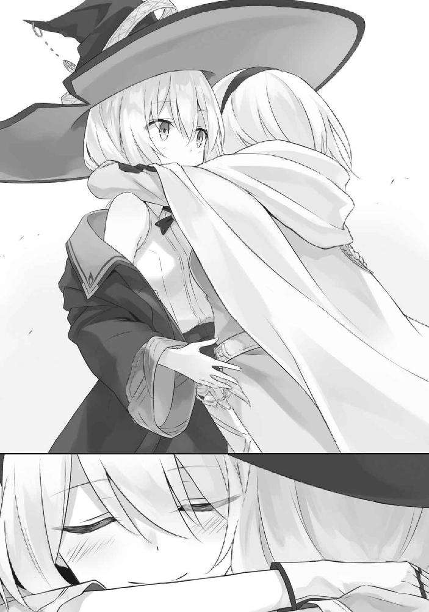
胸の辺りが熱いのは、きっと彼女の体温が残っているからでしょう。私の顔が熱いのは、きっと彼女の息がかかっていたからでしょう。
「ねえイレイナさん」
彼女は私に背を向けたまま、言いました。
「わたし、あなたのこと、忘れないから」
ほんの少し、震えた声で。
だから私も、彼女に背を向けながら応えるのでした。
「私も忘れません。あなたたちのこと」
空に浮かぶ一筋の雲は、地に這う道の真上を流れていました。
うねりながら伸びる道の周りはすべてが草花で覆われており、そこら中にありふれた涼しい風は、その穂先を撫でて揺らしています。遠くには小川がゆったりと流れているのが見えました。
さわさわと涼しい音色が広がるばかりの景観でした。
そして私達はゆっくりと進みます。
別々の旅路を。
あとがき
三月某日。編集Ｍ氏から電話がありました。
「定規くんさぁ、リリエール（注釈：『リリエールと祈りの国』の略。二〇一七年三月一五日にＧＡ文庫より発売。イラストレーターにあずーるさんを起用し、『魔女の旅々』の正統続編として売り出された作品。イレイナさんも出てくるよ！ 買ってね！）出したじゃん？ あれのおかげで『魔女の旅々』売れてるよ。ロングセラーだね。あと全巻重版するから。四巻出す？」
僕は泣いた。え？ 四巻出していいんですか？ マジですか？ ロングセラー？ マジですか。
それもこれも約一年がかりで立て続けに重版したり全巻重版したりとして頂けたおかげであり、つまるところ、発売から暫く経っても購入してくれた皆様のおかげです。こうして四巻のあとがきを書くことができているのがどれほど嬉しいかを語るにはおおよそ二ページではあまりにも足りなかったので、今回は編集さんに無理を言ってあとがき増量版でお送りします。
というわけで改めまして、白石定規です。初めまして。お久しぶりです。
三巻を刊行してから半年以上の月日が流れましたね。色々なことがありました。何があったか具体例を添えられるほどアレコレと覚えてはいませんが。本作品に関していえば重版や『このラノ』にランクインしたりなどと嬉しいことばかり立て続けに起こったように感じています。けれどほぼ打ち切りが決まったあとでしたのでどうしようもない悲しみばかりが降りかかりました。まだ続けたかったのに続けられなかったもどかしさたるや。しかしながら冒頭で語ったようにリリエールを出したことで刊行再開という運びになりました。ありがたい限りです。ずっと長いこと祈り続けた願いが叶った気分です。でもまだ終わりにしたくありませんのでまだまだ頑張りたいと思います。
四巻は時間の流れや忘却をテーマにした話を多めにしました。いつも書いてる気がしますけど今回は特に長めです。アムネシアの話だけで文庫本一冊ぶんあるんじゃないかと思えるレベルで。
こんな話を書くことになったのは、もしかすると今までのイレイナの旅路を忘れて欲しくないという気持ちが働いたからなのかもしれません。本来ならばバレバレの伏線等々を回収すべきだったのかもしれませんが、それでも書きたい話がアムネシアの物語だったためにこういった構成になりました。頑張って書いたらシリーズ最長になってました。まさかこんなにも長くなるとは......。
その割に全体的な話数とページ数が少なめになっていることにお気づきかと思います。これは言い訳ですが、単純にリリエールを刊行したあとに四巻の話が舞い込んできたため駆け足気味に書いたからです。このペースを平然と維持し続けている作家さん達マジすげえです......。今回は猶予がなかったため毎日本ばかり書いていましたが、久々なので書いては捨てての繰り返しでした。けれど楽しかったです。初心に帰った気分でした。kindleで書いていた頃も毎日本ばかり書いては捨ててたなぁ......などとしみじみ。社会人になり忙しさに感けて、大切なことを忘れていた気がします。
ところで今回はあとがき増量版ということで、次のページよりネタバレを交えた各話コメントとなります。あとがきと挿絵を先に読む派の方は二ページほど読み飛ばすといいかもしれません。
●第一章『忘却の都』
あずーるさんの素敵すぎる表紙に合わせた内容になっています。尚、あずーるさんにお会いした際に「四巻表紙は廃墟にします」と聞いていたので、「やったぜ暗い話にしよ」と鬱物語を書いていたのですが、上がってきたイラストがあまりにも爽やかな廃墟だったのでゴミ箱に投げました。
●第二章『虚構の魔女』
コーヒーの味がよくわからない。コクとは何なのか。酸味とは何なのか。ぼくはドリップコーヒーと缶コーヒーの違いくらいしか分からない。などと書きながら缶コーヒーを飲む休日の午後。
●第三章『好き嫌い』
店舗特典ＳＳを書き直した物語です。そういえば四巻はサヤ氏の出番が極端に少ねえなと思いましたので、無理やりねじ込みました。ちなみにキノコはぼくも嫌いです。菌じゃねえか。
●第四章『林檎殺人事件』
ふにふにしながら白雪姫のグリム童話版を準拠に探偵物として書きました。王子様がネクロフィリアというのも原作リスペクト故です。王子様やべえ。どうでもいいけど四巻ゲロ吐きすぎだよね。
●第五章『とるにたらない物語』
言葉の綾を使って嫌がらせをするだけのとるにたらない物語です。腹黒イレイナ。
●第六章『水没街区』
環境に順応できない者から時代に取り残されて滅んでいくといいます。紀元前からそうだったようですし。過酷な環境でも順応できてしまえばそれなりに楽しくやれるものなのかもしれませんが。
●第七章『忘却紀行のアムネシア』
アムネシアとの出会いの物語です。信仰の都エストに興味があるといいつつ実際のところアムネシアが気になって仕方ないイレイナさんでした。余談ですがアムネシアはギリシャ語で「忘れっぽい」を意味する言葉をもじったものです。ではなぜギリシャ語なのか。かっこいいからです。
●第八章『勇者と飛竜と生贄と』
四巻最後に書いた話です。原稿が出揃ったところで、アムネシアの話がどれも重すぎるものであると気づいたためにこんな話になりました。バカ話入れないとアムネシアに救いがなさすぎて辛かったので。余談ですが宿屋に置いてある日記の意味に気付いたあなたは大人です。
●第九章『街は氷に覆われて』
さりげなくほうきさんが再登場しているシリアス回です。どれだけ辛くても決断しなければ先に進めなかったのはアムネシアもルーデラも同じであったと思います。
●第十章『忘却帰郷のアムネシア』
シリーズ刊行再開の締めくくりとして、オチは一巻を意識しました。最後の一言が一巻の時とは別の意味合いを含めているように感じて頂けたら幸いです。今まで一日を繰り返す旅をしていたアムネシアはこれから前向きに旅をしていくことになります。記憶にまつわる物語はどれも救いがないものばかりでしたので、もう少し前向きになれる話もあっていいんじゃないかと思い、こんな話になりました。書いてみたらめちゃくちゃ長くなりました。余談ですがアヴィリアはギリシャ語で「明日」を意味する言葉をもじったものです。ではなぜギリシャ語なのか。かっこいいからです。
以上、各話コメントでした。補足ですが、アムネシアの髪が白い理由は、あずーるさんの白系の髪の女の子のイラストが語彙力を失うレベルで可愛いため、ここぞというときの秘密兵器として貯め込んでいたからです。三巻打ち切りがほぼ決定となったときには「おいおい秘密のまま終わっちゃうのかよ？」と危惧しましたが無事四巻で出せてよかったです。マジで。いやほんとにマジで。
では謝辞を。
あずーる様。
いつもながらに可愛すぎるイラストありがとうございます！ アムネシアさん可愛すぎました。それとイレイナさんの新衣装も可愛すぎました。余談ですが授賞式であずーるさんとお話したあとに『進撃の巨人』のアニメを観て原作全巻買いました。やっぱり澤野弘之さん神だと思います。
担当Ｍ様。
いつもありがとうございます。今回は無理言って長々とあとがき書いてすみません。でも五巻もあればまた長々とあとがき書きたいです。メールではいつも滅茶苦茶素っ気ない態度をとっていますが、原稿を褒めて頂いた時などはスマホを握り絞めながら小躍りしてます。ツンデレです。
そして本作を購入してくださった皆様。
本当に本当にありがとうございます！ また続きを書くことができて嬉しくてたまりません。四巻で終わりとならないようにこれからも一層頑張っていきますので、どうぞよろしくお願いいたします。
では、次巻でお会いできることを祈りながらあとがきを終えたいと思います。それでは！
AUTHOR
白石定規（しらいし じょうぎ）
メガネをかけたままメガネを探す愚行を犯す。そんな人生。
ILLUSTRATION
あずーる
最近、事ある毎にアロエヨーグルトを買ってしまいます。美味しい！
ファンレター、作品の感想をお待ちしています
＜送付先はこちら＞
ga-info@cr.softbank.co.jp

〈あて先〉
〒１０６－００３２
東京都港区六本木２－４－５
SBクリエイティブ（株）
ＧＡ文庫編集部 気付
「白石定規先生」係
「あずーる先生」係
http://ga.sbcr.jp/
ＧＡノベル
魔女の旅々４
白石定規
発行人 小川 淳
発行所 SBクリエイティブ株式会社
〒１０６－００３２
東京都港区六本木２－４－５
装 丁 AFTERGLOW
印刷・製本 中央精版印刷株式会社
２０１７年７月３１日 初版第一刷発行
２０１７年８月１５日 電子第一版発行
©Jougi Shiraishi ISBN 978-4-7973-9286-9